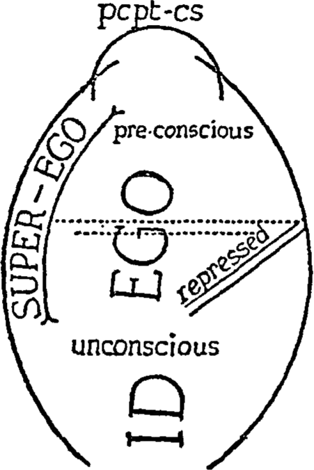

New York
Carlton House
Garg Book O. Jaipur.
Copyright, 1933, by
Sigmund Freud
Printed In The United States Of America
Digitised By Czerwonamaupa
My Introductory Lectures on Psycho-Analysis were delivered in the two winter terms of 1915-16 and 1916-17 in one of the lecture-rooms of the Vienna Psychiatrical Clinic, before an audience composed of members and students of every Faculty. The first half of the lectures were improvised, and written down immediately afterwards; the second half were composed during an intervening summer vacation in Salzburg, and were delivered word for word in the following winter. In those days I still possessed the gift of a phonographic memory.
In contradistinction to them, these new lectures have never been delivered. My age has in the meantime relieved me of the duty of marking my membership of the University—even though the relation is only a peripheral one—by giving lectures; and a surgical operation has rendered me incapable of addressing an audience. It is therefore only in imagination that I picture myself once more in the lecture-room as I write out what follows; it may help me not to forget my duty to the reader as I delve deeper into my subject.
The new lectures are in no way intended to take the place of the earlier ones. They do not compose an independent whole which could hope to find a circle of readers of its own; but they are continuations and supplements which fall into three groups in their relation to the earlier lectures. To the first group belong the new manipulations of themes which have already been dealt with fifteen years ago, but which demand further treatment on account of the deepening of our knowledge, and the alteration of our views; this group consists, that is to say, of critical revisions. The two other groups contain actual enlargements of our field, in that they deal with matters which either did not exist in psycho-analysis at the time of the first lectures, or about which too little was known at that time to justify a special chapter-heading. It cannot be avoided, but it is also not to be deplored, that some of the new lectures unite the characteristics of these groups.
I have, moreover, emphasized the dependence of these new lectures on the Introductory Lectures by numbering them in continuation of the old ones. Thus the first lecture in this book is called the Twenty-ninth. Once more, they offer to the analytic specialist little that is new, and they are addressed to that large group of educated persons to whom, let us hope, one can ascribe a benevolent, if cautious, interest in the special nature and discoveries of this young science. And this time again it has been my guiding purpose to make no sacrifice in favour of apparent simplicity, completeness and finality; not to hide any problems and not to deny the existence of gaps and uncertainties. In no other field of scientific work would it be necessary to insist upon the modesty of one’s claims. In every other subject this is taken for granted; the public expect nothing else. No reader of a work on astronomy would feel disappointed and contemptuous of that science, if he were shown the point at which our knowledge of the universe melts into obscurity. Only in psychology is it otherwise; here the constitutional incapacity of men for scientific research comes into full view. It looks as though people did not expect from psychology progress in knowledge, but some other kind of satisfaction; every unsolved problem, every acknowledged uncertainty is turned into a ground of complaint against it.
Any one who loves the science of the mind must accept these hardships as well.
Freud
Vienna,
Summer 1932
Ladies and gentlemen—After a silence of more than fifteen years, I have brought you together again in order to discuss with you the new developments, or it may be improvements, which have taken place in psycho-analytic theory during the interval. From more than one point of view it is right and proper that we should turn our attention, in the first place, to the theory of dreams. This theory occupies a peculiar position in the history of psycho-analysis; it marks a turning-point. With the theory of dreams, analysis passed from being a psycho-therapeutic method to being a psychology of the depths of human nature. Ever since then the theory of dreams has remained the most characteristic and the most peculiar feature of the young science, something which has no parallel in the rest of scientific knowledge, a new found land, which has been reclaimed from the regions of Folklore and Mysticism. The strangeness of the ideas which are necessarily involved in it has made it into a shibboleth, the use of which distinguishes those who might become believers in psycho-analysis from those who are incapable of comprehending it. Speaking for myself, I always found it a thing I could hold on to during those difficult times when the unsolved problems of the neuroses used to confuse my inexperienced judgment. Whenever I began to have doubts about the correctness of my tentative conclusions, the moment I managed to translate a senseless and complicated dream into a clear and intelligible mental process in the dreamer, I felt, with renewed confidence, that I was on the right track.
It is therefore of especial interest for us to follow, in regard to this particular matter of the theory of dreams, what changes psycho-analysis has undergone during the interval I have mentioned, and what progress it has made in gaining appreciation and understanding from contemporary thought. I may as well tell you straight away that you will be disappointed in both directions.
Let us look through the volumes of the Internationale Zeitschrift für (ärztliche) Psychoanalyse, in which the most important work on our subject has appeared since 1913. In the earlier volumes you will find one recurring heading, ‘On the Interpretation of Dreams,’ under which will be a quantity of contributions on various points of dream-theory. But the further you go, the rarer such contributions become; this standing heading eventually disappears entirely. The analysts behave as though they had nothing more to say about the dream, as though the whole subject of dream-theory were finished and done with. If, on the other hand, you ask how much of the theory of dreams is accepted by outsiders, the numerous psychiatrists and psycho-therapeutists, who warm their pot of soup at our fire—without indeed being very grateful for our hospitality—the so-called educated people who are in the habit of appropriating the more startling of the conclusions of science, the literati and the general public, then the answer is not very satisfactory. A few formulae are generally known, and, among them, several which we have never put forward, such as the statement that all dreams are of a sexual nature; but even such important things as the fundamental distinction between the manifest dream-content and the latent dream-thoughts, the view that anxiety dreams do not contradict the wish-fulfilling function of the dream, the impossibility of interpreting a dream unless one knows the relevant associations of the dreamer, and, above all, the recognition of the fact that the most important part of the dream is the dream-work, seem, every one of them, to be as far removed from the consciousness of the generality of mankind as they were thirty years ago. I myself have every reason to say this, because during that period I have received an enormous number of letters, in which the writers inscribe their dreams for interpretation, or ask for information about the nature of dreams. They declare that they have read the Interpretation of Dreams, and yet in every sentence they betray their lack of understanding of our dream-theory. That will not prevent our once more giving an account of what we know about dreams. You will remember that last time we devoted a whole group of lectures to showing how we have come to understand this hitherto unexplained psychic phenomenon.
Supposing some one, say a patient under analysis, tells us one of his dreams; then we assume that he has made one of those communications to us, to which he committed himself when he entered on his analytical treatment. It is, of course, a communication which is insufficiently communicative, because a dream is, in itself, not a social utterance; it is not a means for making oneself understood. We have not, indeed, the least idea what the dreamer wishes to say, and he himself knows no better than ourselves. At the outset we have to make a quick decision. On the one hand, the dream may be, as the non-analytical physicians assure us, an indication that the dreamer has slept badly, that not all the parts of his brain achieved a uniform state of rest, that certain regions of it endeavoured to go on working under the influence of unknown stimuli and could only do so in a very incomplete way. If that is the case then we are quite right not to bother ourselves any longer over this psychologically worthless product of nocturnal disturbance. For how could we expect from the investigation of such things to arrive at anything useful for our purposes? On the other hand, however—but it is clear that from the outset we have decided otherwise. We have—perhaps quite arbitrarily—made the assumption, put forward the postulate, that even this unintelligible dream must be a perfectly valid, sensible and valuable psychic act, of which we can make use in the analysis, just like any other communication. Only the result of our attempt can show us whether we are right. If we are able to turn the dream into a valuable utterance of this kind, then we obviously have a chance of learning something new, and of obtaining information of such a sort as otherwise would remain inaccessible to us.
Now, however, the difficulties of our task, and the puzzling nature of our theme become apparent. How are we going to set about turning a dream into a normal communication, and how are we going to explain that a part of the utterance of our patient has taken on a form which is as unintelligible for him as for us?
You will observe, ladies and gentlemen, that this time I am not expounding the subject on genetic lines, but I am speaking dogmatically. The first thing we have to do is to lay the foundations of our new attitude towards the problem of the dream by introducing two new concepts and two new names. We call what one usually refers to as the dream, the dream-text or the manifest dream, and what we are looking for, what we, as it were, suspect to lie behind the dream, the latent dream-thoughts. Now we can express our two problems in the following way: we have got to turn the manifest dream into the latent dream, and we have to show how the latter became the former in the mental life of the dreamer. The first bit is a practical problem, it comes under the heading of dream-interpretation, and requires a technique; the second is a theoretical problem, its solution should be the explanation of the hypothetical dream-work, and can only be a theory. Both the technique of dream-interpretation and the theory of the dream-work have to be built up from the beginning.
Which bit shall we begin with? I think we should start with the technique of dream-interpretation. It has a clearer outline and will make a more vivid impression on you.
The patient, then, has described a dream which we have to interpret. We have listened quietly without making use of our powers of reflection. What do we do next? We determine to bother our heads as little as possible over what we have heard—over the manifest dream, that is to say. Naturally this manifest dream displays all sorts of characteristics to which we are not completely indifferent. It may be coherent, smoothly composed, like a literary work, or unintelligibly confused, almost like a delirium; it may have absurd elements, or jokes and apparently brilliant inferences; it may seem clear and well defined to the dreamer, or it may be dim and indefinite; the pictures in it may have the full sensuous force of a perception, or they may be as shadowy and vague as a mist. The greatest variety of characteristics can be found distributed in the various parts of the same dream. Finally the dream may be attended by an indifferent feeling tone, or by a very strong pleasurable or painful affect. You must not think that we regard this endless variety as a matter of no importance; we shall come back to it later, and shall find in it much that is useful for our interpretation; but for the present we must put it aside, and travel along the main road which leads to the interpretation of the dream. This means that we ask the dreamer as well to free himself from the impression of the manifest dream, to switch his attention from the dream as a whole to individual parts of its content, and to tell us one after another the things that occur to him in connection with these parts, what associations come into his mind when he turns his mental eye on to each of them separately.
That is a curious technique, is it not? It is not the usual way to treat a communication or an utterance. You guess, of course, that behind this procedure there lie concealed assumptions which have not yet been mentioned. But let us proceed. In what order shall we get the patient to take the parts of his dream? Here we have a variety of courses open to us. We can simply follow the chronological order in which the dream has been presented to us in description. That is what one might call the strictest, the classical method. Or we can ask the dreamer to look for the residue of the previous day in his dream, because experience has taught us that in almost every dream is incorporated a memory trace of, or an allusion to, an event (or it may be several events) of the previous day; and if we follow up these links we often discover all of a sudden the bridge from the apparently remote dream-world to the real life of the patient. Or else we tell him to begin with those elements in the dream-content which have struck him on account of their clarity and sensuous force. We happen to know that it is particularly easy for him to obtain associations to such elements. It makes no difference by which of these ways we choose to reach the associations we are looking for.
And now let us consider these associations. They consist of the most varied material, memories of the day before, the ‘dream day,’ and memories of times long since passed, deliberations, arguments for and against, admissions and questionings. A great many of them are poured out by the patient with ease, while he hesitates when he reaches others. Most of them show a clear connection with one of the elements of the dream, and no wonder, because they have actually sprung from these elements; but it may also happen that the patient introduces them with the words: ‘That doesn’t seem to have anything to do with the dream at all; I say it because it comes into my head.’
When one listens to this flood of ideas, one soon notices that they have more in common with the content of the dream than the mere fact that it provided them with their origin. They throw an astonishingly clear light on all the parts of the dream, they fill in the gaps between them, and they make their odd juxtaposition intelligible. Finally, we must get clear the relation between them and the content of the dream. The dream seems to be an abridged extract from the associations, which has been put together in accordance with rules which we have not yet considered; its elements are like the representatives of a multitude which have been chosen by vote. There is no doubt that our technique has enabled us to discover what the dream has replaced, and wherein lies its psychological value; and what we have discovered displays no longer the bewildering peculiarities of the dream, its strangeness and its confused nature.
But let us have no misunderstanding. The associations to the dream are not the latent dream-thoughts. These are contained, but not completely contained, in the associations. On the one hand, the associations produce a great deal more than we require for the formulation of the latent dream-thoughts, namely, all the elaborations, the transitions and the connecting links, which the intellect of the patient must produce on the road which leads to the dream-thoughts. On the other hand, the association has often stopped short immediately before it has reached the dream-thoughts themselves; it has only touched them allusively. We now play a part ourselves: we follow up the indications, we draw inevitable conclusions and bring out into the open what the patient in his associations has only touched upon. That sounds as if we allow our cleverness and our arbitrary imagination to play with the material which the dreamer has placed at our disposal, and misuse it to the extent of reading into his utterances what we have no business to find there; and indeed it is no easy matter to show the propriety of our behaviour in an abstract exposition. But if you try a dream-analysis yourselves, or make yourselves familiar with a well-described example from our literature, you will be convinced of the compelling manner in which such a process of interpretation unfolds itself.
Although in dream-interpretation we are in general and predominantly dependent on the associations of the dreamer, nevertheless we treat certain elements of the content quite independently—mainly because we have to, because, as a rule, associations refuse to come. We noticed at an early stage that this happens always in connection with the same material; these elements are not very numerous, and long experience has taught us that they are to be taken as symbols for something else, and to be interpreted as such. In comparison with the other elements of the dream one can give them a permanent meaning, which need not, however, be ambiguous, and the limits of which are determined by special laws, which are of an unusual kind. Since we understand how to translate these symbols, while the dreamer does not, although he himself has made use of them, it may very well be that the sense of the dream is immediately clear to us, even before we have begun the work of dream-interpretation, as soon as we have heard the text of the dream, while the dreamer himself is still puzzled by it. But in the earlier lectures I have already said so much about symbolism, about our knowledge of it, and about the special problems to which it gives rise, that I need not go over the same ground again to-day.
That, then, is our method of dream-interpretation. The next and very proper question is—can we by these means interpret every dream? And the answer is—no, not every one; but so many that we can afford to be absolutely certain about the utility and correctness of our procedure. But why not all? The recent answer to this question will teach us something important, which has a bearing on the psychological conditions of dream formation. It is because the work of interpretation is carried on in the face of resistance, which may vary from an imperceptible amount to an amount so great that we cannot overcome it—at any rate with the means which are at present at our disposal. One cannot help observing the manifestation of this resistance during the interpretation. In many places the associations are given without hesitation, and the first or second of them already provides us with the explanation. In other places the patient pauses and hesitates before he utters an association, and then one often has to listen to a long chain of ideas before one gets anything which is of any use for the understanding of the dream. We are right in supposing that the longer and the more circuitous the chain of associations, the stronger is the resistance. And in the forgetting of dreams, too, we sense the same influence. Often enough it happens that, however much he may try, the patient cannot remember one of his dreams. But when, by a piece of analytical work, we have removed a difficulty which has been disturbing the patient in his relation to the analysis, the forgotten dream will come into his mind quite suddenly. Two more observations may be mentioned here. It very often happens that a piece of the dream is missing, which is eventually added as an afterthought. This is to be regarded as an attempt to forget that particular piece. Experience shows that it is this very piece of the dream which is the most valuable; we suppose that a stronger resistance stood in the way of its communication than was the case with the other parts. And, furthermore, we often find that a patient may try to combat the forgetting of his dreams by writing them down immediately after he wakes up. We may as well tell him that it is useless to do so, because the resistance from which he may have preserved the text of the dream will then transfer itself to the associations and render the manifest dream inaccessible for interpretation. This being the case, we need not be surprised if a further increase of the resistance suppresses the associations altogether, and thus frustrates the interpretation of the dream entirely.
From all this we draw the conclusion that the resistance which we come across during the process of dream-interpretation must play some part in the formation of the dream as well. One can actually distinguish between dreams which have been formed under low pressure of resistance and those in which the resistance has been high. But this pressure also changes within the same dream from one place to another; it is responsible for the gaps, the obscurities and the confusion which may upset the coherence of the most beautiful dreams.
But what is the resistance doing here, and what is it resisting? Now for us a resistance is the sure sign of a conflict. There must be a force present which is trying to express something, and another which is striving to prevent its expression. What comes into being as the manifest dream may, therefore, be regarded as comprising all the solutions to which the battle between these two opposing forces can be reduced. At one point one of the forces may have been able to get through what it wanted to say, at another the counteracting force may have succeeded in abolishing the intended communication entirely, or may have substituted for it something which betrays no sign of it. The most usual cases, and those which are the most characteristic of the process of dream-formation, are those in which the conflict results in a compromise, so that the communicating force can indeed say what it wants to say, but not in the way it wants to say it; it is toned down, distorted and made unrecognizable. If therefore the dream does not faithfully represent the dream-thoughts, if a process of interpretation is necessary to bridge the gulf between the two, this is the result of the counteracting, inhibiting and restraining force whose existence we have inferred from perceiving the resistance in dream-interpretation. So long as we regarded the dream as an isolated phenomenon, independent of other psychological formations which are allied to it, we called this force the dream-censor.
You have long been familiar with the fact that this censorship is not a mechanism which is peculiar to dreams. You remember that the conflict of two psychic factors, which we—roughly—call the repressed unconscious and the conscious, dominates our lives, and that the resistance against the interpretation of dreams, the hall-mark of the dream-censorship, is none other than the repression-resistance which keeps these two factors apart. You also know that under certain conditions other psychological formations emerge from the conflict between these same factors, formations which are the result of compromises just as dreams are; and you will not require me to repeat all that is involved in my introduction to the theory of the neuroses in order to put before you what we know about the conditions under which such compromise formations come about. You will have realized that the dream is a pathological product, the first member of the series which includes the hysterical symptom, the obsession and the delusion among its members; it is differentiated from the others by its transitoriness and by the fact that it occurs under conditions which are part of normal life. For we must never forget that the dream-life is, as Aristotle has already told us, the way our mind works during sleep. The state of sleep represents a turning away from the real external world, and thus provides a necessary condition for the development of a psychosis. The most penetrating study of serious cases of psychosis will reveal no characteristic which is more typical of these pathological conditions. In psychoses, however, the turning away from reality is brought about in two ways; either because the repressed unconscious is too strong, so that it overwhelms the conscious which tries to cling on to reality, or because reality has become so unbearably painful that the threatened ego, in a despairing gesture of opposition, throws itself into the arms of the unconscious impulses. The harmless dream-psychosis is the result of a consciously willed, and only temporary, withdrawal from the external world; it ceases to operate when relations with the external world are resumed. While the sleeper is isolated, there is an alteration in the distribution of his psychic energy; part of the repressive expenditure, which is otherwise used to keep down the unconscious, can be saved, for if the unconscious makes use of its relative freedom and enters on some activity, it finds the avenue to motor expression stopped up, and only the innocent outlet of hallucinatory satisfaction open to it. It can now, therefore, form a dream, but the fact of dream-censorship shows that enough repressive resistance remains operative even during sleep.
Here we have an opportunity of answering the question whether the dream has also a function to perform, whether any useful task is entrusted to it. The condition of repose without stimuli, which the state of sleep attempts to bring about, is threatened from three sides: in a chance fashion by external stimuli during sleep, by interests of the day before which have not yet abated and, in an unavoidable manner, by the unsatisfied repressed impulses, which are ready to seize on any opportunity for expression. On account of the nightly reduction of the repressive forces, the risk is run that the repose of sleep will be broken every time the outer and inner disturbances manage to link up with one of the unconscious sources of energy. The dream-process allows the result of such a combination to discharge itself through the channel of a harmless hallucinatory experience, and thus insures the continuity of sleep. There is no contradiction of this function in the fact that the dream sometimes wakes the sleeper in a state of anxiety; it is rather a sign that the watcher regards the situation as being too dangerous, and no longer thinks he can cope with it. Quite often, indeed, while we are still asleep, we are aware of the comforting thought, which is there to prevent our waking up: ‘after all, it is only a dream.’
That is all, ladies and gentlemen, that I wanted to say about dream-interpretation, the business of which is to trace the manifest dream back to the latent dream-thoughts. When this has been done, the interest in the dream from the point of view of practical analysis fades. The analyst links up the communication which he has received in the form of a dream with the patient’s other communications and proceeds with the analysis. We, however, wish to linger a little longer over the dream; we are tempted to study the process by means of which the latent dream-thoughts are transformed into the manifest dream. We call this the dream-work. You will remember that in the previous lectures I described it in such detail that, for to-day’s review of the subject, I can confine myself to the briefest summary.
The process of dream-work is something quite new and strange, the like of which has never before been known. It has given us our first glimpse into those processes which go on in our unconscious mental system, and shows us that they are quite different from what we know about our conscious thought, and that to this latter they must necessarily appear faulty and preposterous. The importance of this discovery is increased when we realise that the same mechanisms—we hardly dare call them ‘thought processes’—are at work in the formation of neurotic symptoms as have turned the latent dream-thoughts into the manifest dream.
In what follows I cannot avoid making my exposition a schematic one. Supposing we have before us in a given instance all the latent thoughts, more or less affectively toned, which have taken the place of the manifest dream after a complete interpretation. We shall then notice a distinction among them, and this distinction will take us a long way. Almost all these dream-thoughts will be recognised or acknowledged by the dreamer; he will admit that he thought thus at one time or another, or that he might very well have done so. But he may resist the acceptation of one single thought, it is foreign to him, perhaps even repellent; it may be that he will passionately repudiate it. Now it becomes clear to us that the other thoughts are bits of his conscious, or, more correctly, of his pre-conscious thought; they might very well have been thought during waking life, and have probably formed themselves during the day. This one rejected thought, or, better, this one impulse, is a child of the night; it belongs to the unconscious of the dreamer, and is therefore disowned and repudiated by him. It had to await the nightly relaxation of repression in order to achieve any sort of expression. In any case the expression that it obtains is enfeebled, distorted and disguised; without the work of interpretation we should never have discovered it. It is thanks to its connection with the other unobjectionable dream-thoughts that this unconscious impulse has had the opportunity of slipping past the barrier of the censorship in an unostentatious disguise; on the other hand, the pre-conscious dream-thoughts owe to the same connection their power of occupying the mental life, even during sleep. We can, indeed, have no doubt about this: the unconscious impulse is the real creator of the dream, it provides the psychic energy required for its formation. Just like any other instinctual impulse it can do no other than seek its own satisfaction, and our experience in dream-interpretation shows us, moreover, that this is the meaning of all dreaming. In every dream an instinctual wish is displayed as fulfilled. The nightly cutting-off of mental life from reality, and the regression to primitive mechanisms which it makes possible, enable this desired instinctual satisfaction to be experienced in a hallucinatory fashion as actually happening. On account of the same process of regression ideas are turned into visual pictures in the dream; the latent dream-thoughts are, that is to say, dramatized and illustrated.
From this piece of dream-work we obtain information about some of the most striking and peculiar characteristics of the dream. Let me repeat the stages of dream-formation. The introduction: the wish to sleep, the voluntary withdrawal from the outside world. Two things follow from this: firstly, the possibility for older and more primitive modes of activity to manifest themselves, i.e. regression; and secondly, the decrease of the repression-resistance which weighs on the unconscious. As a result of this latter feature an opportunity for dream-formation presents itself, which is seized upon by the factors which are the occasion of the dream; that is to say, the internal and external stimuli which are in activity. The dream which thus eventuates is already a compromise-formation; it has a double function: it is on the one hand in conformity with the ego (‘egosyntonic’), since it subserves the wish to sleep by draining off the stimuli which would otherwise disturb it, while on the other hand it allows to a repressed impulse the satisfaction which is possible in these circumstances in the form of an hallucinatory wish-fulfilment. The whole process of dream-formation, which is permitted by the sleeping ego, is, however, under the control of the censorship, a control which is exercised by what is left of the forces of repression. I cannot explain the process more simply; it is not in itself simpler than that. But now I can proceed with the description of the dream-work.
Let us go back once more to the latent dream-thoughts. Their dominating element is the repressed impulse, which has obtained some kind of expression, toned down and disguised though it may be, by associating itself with stimuli which happen to be there and by tacking itself on the residue of the day before. Just like any other impulse this one presses forward toward satisfaction in action, but the path to motor discharge is closed to it on account of the physiological characteristics of the state of sleep, and so it is forced to travel in the retrograde direction to perception, and content itself with an hallucinatory satisfaction. The latent dream-thoughts are therefore turned into a collection of sensory images and visual scenes. As they are travelling in this direction something happens to them which seems to us new and bewildering. All the verbal apparatus by means of which the more subtle thought-relations are expressed, the conjunctions and prepositions, the variations of declension and conjugation, are lacking, because the means of portraying them are absent: just as in primitive, grammarless speech, only the raw material of thought can be expressed, and the abstract is merged again in the concrete from which it sprang. What is left over may very well seem to lack coherence. It is as much the result of the archaic regression in the mental apparatus as of the demands of the censorship that so much use is made of the representation of certain objects and processes by means of symbols which have become strange to conscious thought. But of more far-reaching import are the other alterations to which the elements comprising the dream-thoughts are subjected. Such of them as have any point of contact are condensed into new unities. When the thoughts are translated into pictures those forms are indubitably preferred which allow of this kind of telescoping, or condensation; it is as though a force were at work which subjected the material to a process of pressure or squeezing together. As a result of condensation one element in a manifest dream may correspond to a number of elements of the dream-thoughts; but conversely one of the elements from among the dream-thoughts may be represented by a number of pictures in the dream.
Even more remarkable is the other process of displacement or transference of accent, which in conscious thinking figures only as an error in thought or as a method employed in jokes. For the individual ideas which make up the dream-thoughts are not all of equal value; they have various degrees of affective-tone attached to them, and corresponding to these, they are judged as more or less important, and more or less worthy of attention. In the dream-work these ideas are separated from their affects; the affects are treated separately. They may be transferred to something else, they may remain where they were, they may undergo transformation, or they may disappear from the dream entirely. The importance of the ideas which have been shorn of their affect, reappears in the dream in the form of the sensuous vividness of the dream-pictures; but we notice that this accent, which should lie on important elements, has been transferred to unimportant ones, so that what seems to be pushed to the forefront in the dream, as the most important element in it, only plays a subsidiary role in the dream-thoughts, and conversely, what is important among the dream-thoughts obtains only incidental and rather indistinct representation in the dream. No other factor in the dream-work plays such an important part in rendering the dream strange and unintelligible to the dreamer. Displacement is the chief method employed in the process of dream-distortion, which the dream-thoughts have to undergo under the influence of the censorship.
After these operations on the dream-thoughts the dream is almost ready. There is still, however, a more or less non-constant factor, the so-called secondary elaboration, that makes its appearance after the dream has come into consciousness as an object of perception. When the dream has come into consciousness, we treat it in exactly the same way that we treat any content of perception; we try to fill in the gaps, we add connecting links, and often enough we let ourselves in for serious misunderstandings. But this, as it were, rationalizing activity, which at its best provides the dream with a smooth façade, such as cannot correspond to its real content, may be altogether absent in some cases, or only operate in a very feeble way, in which case the dream displays to view all its gaps and inconsistencies. On the other hand, one must not forget that the dream-work too does not always function with equal force; quite often it limits its activity to certain parts of the dream-thoughts, while others are allowed to come into the dream unaltered. In this event one has the impression that one has carried out the most complicated and subtle intellectual operations during the dream, that one has made brilliant speculations or jokes, or that one has come to decisions or solved problems; really, however, all this is the result of our normal mental activity, and may just as well have happened during the day before the dream as during the night. It has nothing to do with the dream-work, nor does it display any feature which is characteristic of dreams. It is perhaps not superfluous once more to emphasise the distinction which subsists among the dream-thoughts themselves, between the unconscious impulse and the residues of the preceding day. While the latter exhibit the whole variety of our mental activity, the former, which is the real motive force of the dream, always finds its outlet in a wish-fulfilment.
I could have told you all that fifteen years ago; in fact I actually did tell it you at the time. Now let us bring together such modifications and new discoveries as have been made during the interval.
I have already told you that I am afraid you will find that there is very little to say; so you will not understand why I have obliged you to listen to the same thing twice over, and have obliged myself to say it. But fifteen years have passed, and I hoped that in this way I might most easily re-establish contact with you. And indeed these elementary matters are of such decisive importance for the understanding of psycho-analysis, that it is a good thing to hear them for a second time, and the very fact that they have remained the same after fifteen years is in itself something worth knowing.
You will naturally find in the literature of these years a great deal of confirmatory material and exposition of details, of which I only intend to give you examples. I can also add to this a certain amount that was already known before. Most of it has to do with symbolism and the other methods of representation in dreams. Only quite recently the physicians at an American university refused to allow that psycho-analysis was a science, on the ground that it admits of no experimental proof. They might have raised the same objection against astronomy; experimentation with the heavenly bodies is after all exceedingly difficult. There one has to rely on observation. Nevertheless, certain Viennese investigators have made a start on the experimental confirmation of our theory of dream-symbolism. Dr. Schrötter discovered as long ago as 1912 that when one orders a deeply hypnotized person to dream of sexual activities, the sexual material in the dream that is thus provoked is represented by the symbols which are familiar to us. For example, a woman is told to dream of sexual intercourse with a lady friend of hers. In her dream the friend appears with a travelling-bag, which has a label pasted on it: ‘Ladies only.’ Even more impressive are the experiments of Betlheim and Hartmann (1924), who worked with patients suffering from the so-called Korsakow’s syndrome. They told the patient stories with a crude sexual content, and then noted the distortions which appeared when he was asked to reproduce what he had heard. Here again the symbols with which we are familiar as standing for the sexual organs and sexual intercourse cropped up, and among them the symbol of a staircase, with regard to which the authors very properly observe that it would be inaccessible to a conscious intention to distort.
Silberer performed a very interesting series of experiments in which he showed that one can surprise the dream-work, as it were, in flagranti delicto, and see how it translates the abstract thoughts into visual pictures. When he tried to force himself, in a very tired and sleepy condition, to perform an intellectual task, the thought itself would escape him, and in its place would come a visual image, which was often a substitute for it.
Here is a simple example. The thought which Silberer set before himself was that he must smooth out an uneven passage in an article. His visual image was that he saw himself planing a piece of wood. It often happened in these experiments that it was not the idea which was awaiting elaboration that formed the content of the visual image, but his own state of mind while he was trying to make the effort—the subjective condition rather than the objective content. This Silberer calls a ‘functional phenomenon.’ An example will easily show you what is meant. The author is trying to make a comparison between the views of two philosophers about some problem, but in his drowsiness one of these views is always escaping him, and finally he has a vision of himself asking information of a cross-grained secretary, who is leaning over his desk and disregards him at first and then looks at him with a disagreeable expression, as if he would like to send him about his business. It is probably due to the conditions of the experiment itself that the visual images which are aroused in this way so often represent introspective material.
Let us consider symbols a little longer. There were some which we thought we had grasped, but about which we were nevertheless troubled because we could give no account of how that particular symbol got its particular meaning. In such cases any confirmation we could get from other sources, from philology, folklore, mythology or ritual, was particularly welcome. An example of this kind was the symbol of a cloak. We held that in a woman’s dream a cloak stood for a man. I hope now you will be impressed when you hear that Reik (1920) tells us: ‘In the ancient marriage ceremony of the Bedouins the bridegroom covers the bride with a special cloak which is called an ‟aba,” and at the same time utters the ritual words: ‟Let no man in the future cover thee but me”’ (from Robert Eisler, Weltenmantel und Himmelszelt). We have also discovered a great many new symbols, of which I will give you two examples. According to Abraham (1922) a spider in a dream is a symbol of the mother; but it means the phallic mother, whom one fears, so that the fear of the spider expresses the horror of incest with the mother and the abhorrence felt towards the female genitals. You know perhaps that the mythological figure of the Medusa’s head is to be traced back to the same motif of castration-fear. The other symbol of which I should like to speak is the symbol of the bridge. Ferenczi has explained it (1921-1922). It stands originally for the male genital organ, which connects the parents with each other during sexual intercourse; but it develops into a wider set of meanings, which spring out of the first. Since the male genital organ is responsible for the fact that one can emerge from the waters of birth into the world, the bridge depicts the passage from Yonder (not-yet-born-ness, the womb) to Here (life), and since mankind also represents death as the return into the mother’s womb (into the water), the symbol of the bridge gets the meaning of something that brings about death; and finally, further removed from its original meaning, it indicates transition, or any change of condition whatever. That is why a woman who has not yet overcome her desire to be a man so frequently dreams of bridges which are too short to reach the other side.
Very often pictures and situations appear in the manifest content of the dream which remind one of well-known themes from fairy stories, legends and myths. The interpretation of such dreams throws light on the original motives which created these themes, though naturally we must not forget the change of meaning which this material has undergone during the passage of time. Our work of interpretation uncovers what one might call the raw material, which often enough may be regarded as sexual in the broadest sense of the word, but which has found the most varied application in later elaborations. When we trace things back like this we very often arouse the rage of all investigators who do not share the analytical point of view, as though we were seeking to deny or underestimate all the later developments which the raw material has undergone. None the less such ways of looking at things are instructive and interesting. The same is true of the tracing back of various motifs of plastic art—as, for example, when J. Eisler (1919), guided by the dreams of his patients, interprets analytically the young man playing with a little boy, portrayed in the Hermes of Praxiteles. Finally, I cannot help mentioning how often mythological themes find their explanation through dream-interpretation. The story of the Labyrinth, for example, is found to be a representation of anal birth; the tortuous paths are the bowels, and the thread of Ariadne is the umbilical cord.
The method of representation which the dream-work adopts, a fascinating and almost inexhaustible subject, is constantly becoming better known to us as we study it more closely. I will give you a few proofs of this. The notion of frequency, for instance, is expressed in dreams by means of the multiplication of similars. Listen to this remarkable dream of a young girl. She goes into a hall and finds there a person sitting on a chair; this figure is repeated six times, eight times, and even more, but every time the person is her father. This can easily be understood when one learns from the additional features which emerged in interpretation that the room represents the womb. The dream then becomes equivalent to the familiar fantasy of the young girl who believes that she met her father during her intrauterine life, when he visited the womb during her mother’s pregnancy. The fact that an element in the dream is turned the wrong way round, that the act of entry is transferred from the father to the dreamer herself, should not lead you astray; it has indeed a special meaning of its own. The multiplication of the father image can only mean that the procedure in question was frequently repeated. But then the dream always turns temporal relations into spatial ones whenever it has to deal with them. Thus, one may see in a dream a scene between people who look very small and far away, as if one were looking at them through the wrong end of a pair of opera glasses. The smallness and the spatial remoteness here mean the same; it is remoteness in time that is meant, the interpretation being that it is a scene from the far distant past. Besides this, you may remember that in my previous lectures I showed you, with the help of examples, that we had learnt to make use even of the purely formal characteristics of the manifest dream for purposes of interpretation; that is to say, to turn, them into the content of the latent dream-thoughts. Now you know, of course, that all the dreams of one night belong to the same context; but it is by no means immaterial whether these dreams appear to the dreamer as a continuum, or whether they are organized in several pieces, and if so in how many. The number of pieces often corresponds to the same number of distinct nodal points in the chain of thoughts, which make up the latent dream-thoughts; or it may correspond to forces in the mental life of the dreamer which are struggling with one another, and each of which finds its main (though not its exclusive) expression in one particular part of the dream. A short introductory dream and a long main dream often stand to each other in the relation of condition and consequent; of this you will find a very clear example in the old lectures. A dream which the dreamer describes as ‘somehow interpolated’ really corresponds to a dependent clause in the dream-thoughts. Franz Alexander in his essay on pairs of dreams shows that not infrequently two dreams which occur on the same night play separate parts in the fulfilment of the dream-function, so that taken together they provide a wish-fulfilment in two steps, a thing which each alone does not do. If a dream-wish has as its content some piece of forbidden behaviour towards a certain individual, then that person may appear in the first dream undisguised while the behaviour is only faintly indicated. In the second dream it will be the other way round. The behaviour will be openly shown, but the person will be made unrecognizable, or else some indifferent person will be substituted for him. It must be admitted that this gives one an impression of deliberate artfulness. A second and similar relation between two members of a pair of dreams is that in which the one represents the punishment and the other the sinful wish-fulfilment. It is just as if one said: ‘If I take the punishment on myself, then I can do the forbidden thing.’
I must not detain you longer with such discoveries of matters of detail, nor with discussions of the uses of dream-interpretation in analytic work. I am sure you are impatient to hear what alterations have been made in our basic attitude towards the nature and meaning of dreams. You will be prepared to hear that there is little to tell. The most hotly disputed point of the whole theory was undoubtedly the assertion that all dreams are wish-fulfilments. The inevitable and ever-recurrent objection from the laity that there are so many anxiety-dreams has already been completely answered, I think, in my earlier lectures. We have kept our theory intact by dividing dreams into wish-dreams, anxiety-dreams, and punishment-dreams.
Even punishment-dreams are wish-fulfilments, but they do not fulfil the wishes of the instinctual impulses, but those of the critical, censuring and punishing function of the mind. If we are faced with a pure punishment-dream, a simple mental operation will enable us to reinstate the wish-dream to which the punishment-dream was the proper rejoinder; on account of this repudiation, the punishment-dream has appeared in place of the wish-dream as the manifest one. You know, ladies and gentlemen, that the study of dreams was the first thing that helped us to understand the neuroses. And you will not be surprised to hear that our subsequent knowledge of the neuroses has influenced our conception of the dream. As you will learn presently, we have been forced to assume the existence in the mind of a special criticising and forbidding function which we call the super-ego. Since we have now recognised the dream-censorship as an activity of this function, we have been led to consider the part which the super-ego plays in dream-formation in greater detail.
Only two serious difficulties face the wish-fulfilment theory of dreams, the examination of which leads us far afield and for which we have found no completely satisfactory solution. The first difficulty is presented by the fact that people who have had severe shocks or who have gone through serious psychic traumas (such as were frequent during the war, and are also found to lie at the back of traumatic hysteria) are continually being put back into the traumatic situation in dreams. According to our acceptation of the function of dreams, this ought not to be the case. What conative impulse could possibly be satisfied by this reinstatement of a most painful traumatic experience? It is indeed hard to guess. We meet with the second fact almost daily in our analytical work; it does not involve such a serious objection as the other. You know that it is one of the tasks of psycho-analysis to lift the veil of amnesia which shrouds the earliest years of childhood and to bring the expressions of infantile sexual life which are hidden behind it into conscious memory. Now these first sexual experiences of the child are bound up with painful impressions of anxiety, prohibition, disappointment and punishment. One can understand why they have been repressed; but, if so, it is difficult to see why they should have such easy access to dream-life, why they should provide the pattern for so many dream-phantasies, and why dreams are full of reproductions of these infantile scenes and allusions to them. The pain that attaches to them, and the wish-fulfilling tendency of the dream-work would seem to be incompatible. But perhaps in this case we exaggerate the difficulty. All the imperishable and unrealisable desires which provide the energy for the formation of dreams throughout one’s whole life are bound up with these same childish experiences, and one can well trust to their ability with their powerful upward thrust to force even material of a painful nature to the surface. And, on the other hand, in the manner in which this material is reproduced the efforts of the dream-work are unmistakable; it disowns pain by means of distortion and turns disappointment into fulfilment. In the case of the traumatic neuroses it is quite different; here the dream habitually ends in anxiety. In my opinion we ought not to shirk the admission that in such cases the function of the dream fails. I will not have recourse to the saying that the exception proves the rule; the validity of this phrase seems to me very dubious. But at any rate the exception does not do away with the rule. If for the purposes of investigation one isolates from every other mental process a single psychic activity like the dream, one is enabled to discover the laws which govern it; if one then puts it back into its place, one must be prepared to find that one’s discoveries are obscured and interfered with when they come into contact with other forces. We assert that the dream is a wish-fulfilment; in order to take these last objections into account, you may say that the dream is an attempted wish-fulfilment. But for those who have an understanding for the dynamics of the mind you will not be saying anything different. Under certain conditions the dream can only achieve its end in a very incomplete way, or has to abandon it entirely; an unconscious fixation to the trauma seems to head the list of these obstacles to the dream-function. The sleeper has to dream, because the nightly relaxation of repression allows the upward thrust of the traumatic fixation to become active; but sometimes his dream-work, which endeavours to change the memory traces of the traumatic event into a wish-fulfilment, fails to operate. In these circumstances the result is that one becomes sleepless; one gives up all idea of sleep because of one’s fear of the failure of the dream-function. The traumatic neurosis is an extreme case, but one must also attribute a traumatic character to infantile experiences as well; so one need not be surprised if lesser disturbances of the function of the dream occur in other circumstances.
Ladies and gentlemen—To-day we are to travel along a narrow path, but it may lead us to a wide prospect.
When you hear that I am going to talk about the connection between dreams and the occult, you need hardly feel surprised. Dreams are indeed often regarded as the portal to the world of mysticism, and even to-day seem to many to be in themselves an occult phenomenon. Even we, who have made them an object of scientific study, cannot deny that several strands link them up with those obscure regions. Mysticism—Occultism—what is meant by these terms? Do not imagine that I shall attempt to provide you with a clear definition of such hazy concepts. In a general and vague way we all know what we mean by the terms. They refer to a kind of ‘other world’ which lies beyond the clear world, with its inexorable laws, which science has built up for us.
Occultism assumes that there are in fact more things in heaven and earth than are dreamt of in our philosophy. Well, we need not be tied down by the narrow-mindedness of the Schools; we are ready to believe whatever is made plausible to us.
We intend to treat these things in just the same way as we treat any other material for scientific investigation. First, we have to establish whether these processes really occur, and then, but only then, when there is no doubt as to their actuality, we can set about their explanation. But we cannot hide from ourselves the fact that even the first step will be made difficult for us by intellectual, psychological and historical factors. It is by no means the same as when we start on any other investigation.
Let us consider the intellectual difficulties first. Allow me to give you a crude, obvious explanation of what I mean. Supposing we are dealing with the constitution of the interior of the earth. Admittedly we know nothing certain about it. We suppose that it consists of heavy metals in a molten condition. Now let us imagine that some one asserts that the interior of the earth is made of water impregnated with carbonic acid; that is to say, a kind of soda-water. We shall certainly say that it is very improbable, that it runs counter to all our expectations, and that it does not take into consideration the scientific data which have led us to put forward the mental hypothesis. But for all that it is not unthinkable. If any one shows us the way to prove the soda-water hypothesis, we shall follow it without any resistance. But now another person comes along who seriously asserts that the centre of the earth is made of jam. We shall behave quite differently towards his theory. We shall say to ourselves that jam is not a product of Nature but of human cookery; moreover, the existence of that material presupposes the presence of fruit-trees and their fruit, and we cannot see our way to placing vegetation and human cookery in the centre of the earth. The result of this intellectual objection will be a diversion of our interests; instead of their being directed on to the investigation itself, as to whether the interior of the earth is really made of jam or not, we shall wonder what kind of man it must be who can get such an idea into his head, or at the most we shall ask him where he got the idea from. The unfortunate inventor of the jam hypothesis will be very much offended, and will complain that we are refusing to consider an objective evaluation of this theory out of what he calls scientific prejudice. But his complaints will be in vain. Prejudices, we feel, are not always to be deplored, but are sometimes justified; and they are useful in saving us unnecessary trouble. They are, indeed, nothing more than conclusions drawn by analogy from other well-founded judgments.
A whole number of occult theories make the same impression on us as the jam theory, so that we feel justified in putting them aside at the outset without testing them. But it is not quite such a simple matter. An analogy such as I have suggested—like all analogies—proves nothing. In any case it is doubtful whether it is a fair analogy, and it is obvious that it was our attitude of scornful rejection which in the first instance determined our choice of it. Prejudices are very often useful and justified, but sometimes they are erroneous and harmful, and one never knows when they will be the one or the other. The history of Science is full of examples which should warn us against too hasty a condemnation. For a long time it was thought to be an absurd thesis that the stones which we now call meteorites should have reached the earth from outer space, or that mountains, the rocks of which contain remains of shells, should once have formed the bed of the sea. And, after all, not so very different a fate befell our psycho-analysis itself, when it brought forward the discovery of the unconscious. We analysts, therefore, have special reason to be cautious in making use of intellectual arguments in the rejection of new theories, and we must recognize that such arguments will not put us beyond the reach of feelings of aversion, doubt and uncertainty.
I called the second factor psychological: By that I meant the general human inclination towards credulity and belief in the marvellous. From the very beginning, when life imposes its stern discipline upon us, there grows up in us a resistance against the restlessness and monotony of the laws of thought, and against the need for putting things to the test of reality. Reason becomes an enemy that keeps us from so many possibilities of pleasure. One discovers what a joy it is to escape from it at least for a moment, and give oneself up to the fascination of irrationality. The schoolboy amuses himself by making up ridiculous plays on words, the specialist makes fun of his own work after a scientific congress, and even the serious-minded man enjoys an occasional joke. More serious antagonism against ‘Wisdom and Science, man’s most prized powers,’ awaits its opportunity; it is eager to prefer the miracle-man or the natural healer to the ‘trained’ doctor, it makes us warm towards the theories of the Occult, so long as its reputed facts can be taken as breaches of law and rule. It puts our critical faculty to sleep, falsifies our perception, and forces us to confirm and agree without real justification. Any one who takes these human weaknesses into consideration has every reason to discount the value of much of the information contained in occult literature.
In referring to the third obstacle as the historical one I had in mind the fact that nothing new is to be found in the world of the occult. On the contrary, we meet again in it with all the signs, wonders, prophecies and apparitions which have been handed down to us from remote ages and in old books, and which we long ago thought we had done with as being the offspring of unbridled imagination or tendentious fraud, the product of a time when the ignorance of mankind was at its height and when the scientific spirit was still in its infancy. If we accept as true what we are told by the occultists of our own day, then we must be prepared to believe the accounts which have come down to us from the past. And then we remember that the traditions and sacred books of all races are packed with such marvels, and that religions base their claim to credibility precisely on such extraordinary and wondrous happenings, and find in them the proof of the operation of superhuman forces. At this point it is hard for us to avoid the suspicion that occult interests are really religious ones, and that it is one of the secret motives of the occultist movements to come to the aid of religious belief, threatened as it is by the progress of scientific thought. The discovery of a motive of this kind cannot fail to increase our mistrust and our disinclination to embark upon an investigation of these so-called occult phenomena.
But this disinclination must be overcome. The whole thing is really a question of fact: is what the occultists tell us true or not? It must be possible to decide this by observation. Au fond we ought to be grateful to the occultists. The tales of wonderful happenings which have come down to us from ancient days are beyond our powers of testing. If we say that they cannot be proved, we must at least admit that, strictly speaking, they cannot be disproved. But about what happens in the present, about things which we can actually witness, we ought to be able to reach a definite conclusion. If we are convinced that such wonders do not occur nowadays, we need not fear the objection that they might have occurred in days gone by. Other explanations will then be far more plausible. We have, then, put aside our scruples and are ready to take part in the observation of occult phenomena.
Unfortunately we come up against considerations which are highly unfavourable to our laudable intentions. The observations on which our judgments must depend have to be made under conditions which render our powers of perception insecure, and which blunt our faculty of attention; the phenomena take place in the dark or in the faint glimmer of a red light after long periods of fruitless waiting. We are told that even our sceptical—that is to say, our critical—attitude may very well prevent the hoped for phenomena from manifesting themselves. The situation which thus arises is simply a caricature of the conditions under which we are used to carrying out scientific investigations. The observations are made on so-called mediums, persons to whom are ascribed special ‘sensitive’ gifts, who, however, do not display outstanding qualities of intelligence or character, and who are not moved, as the old wonder-workers were, by some great idea or by some serious purpose. On the contrary, they are regarded as particularly untrustworthy even by the people who believe in their mysterious powers; most of them have already been unmasked as frauds, and we are tempted to expect that the same will happen with the rest as well. Their performances remind us of the mischievous pranks of a child or of a conjuror’s tricks. Nothing of any value has so far ever come out of these séances with mediums; no new source of energy has become accessible to us. And, to be sure, one does not expect any advances in our knowledge of pigeon-breeding from the tricks of a conjuror who produces pigeons out of an empty top-hat. I can easily put myself into the position of a man who wishes to fulfil the demands of objectivity and therefore takes part in these occult séances, but tires of them after a while, and, put off by what is required of him, gives up the whole business and returns to his prejudices no wiser than before. To such a man one might object that his behaviour is not right, and that if one is going to investigate phenomena one cannot decide beforehand of what nature they shall be and under what conditions they shall manifest themselves. It is, on the contrary, his business to persevere and form some estimate of the precautionary measures of control which are used nowadays as a protection against the untrustworthiness of mediums. Unfortunately the modern control technique puts an end to the easy accessibility of occult observations. The study of the occult has become a specialized and difficult pursuit, a form of activity which one cannot carry on side by side with one’s other interests. And until the investigators who have given their minds to it have come to some conclusion, one is necessarily given over to doubts and to one’s own conjectures.
Among these conjectures the most probable is, I think, that in occultism there is a core of facts which have hitherto not been recognized, and round which fraud and phantasy have woven a veil which it is hard to penetrate. But how can we even approach this core? at what point can we grasp the problem? It is here, it seems to me, that the dream comes to our aid by suggesting to us that we should pick out the theme of telepathy from all the confused material that surrounds it.
You know that by telepathy we mean the alleged fact that an event which occurs at a specific time comes more or less simultaneously into the consciousness of a person who is spatially distant, without any of the known methods of communication coming into play. The tacit assumption is that this event occurs to a person, in whom the receiver of the message has some strong emotional interest. Thus, for example, a person A has an accident, or dies, and a person B, some one closely connected with A, his mother or daughter or loved one, learns of it at about the time of its occurrence through a visual or auditory perception; in the latter case it is as though they were in telephonic communication, which, however, they are not; in fact, it is a kind of psychic parallel to wireless telegraphy. I need not emphasise to you the improbability of such processes, and anyway there are good grounds for rejecting the majority of such reports. Some of them are left over which cannot be rejected so easily, I must now ask you to allow me to leave out the precautionary word ‘alleged’ for the purposes of what I have to tell you, and to let me continue as though I believed in the objective reality of telepathic phenomena. But you must remember all the time that this is not the case, that I have not committed myself to any conclusion on the subject.
As a matter of fact I have but little to tell you—only one modest fact. And I will further diminish your expectations by informing you that fundamentally the dream has but little to do with telepathy. Telepathy throws no new light on the nature of the dream, nor does the dream bear witness for the reality of telepathy. Telepathic phenomena are also by no manner of means confined to dreams; they can also manifest themselves during waking life. The only ground for mentioning the connection between dreams and telepathy is that the condition of sleep seems to be especially suitable for the reception of telepathic communications. If then one comes across a so-called telepathic dream, one can convince oneself by its analysis that the telepathic message has played the same role as any other residue of waking life, and as such has been altered by the dream-work and made to serve its purpose.
Now in the course of the analysis of a telepathic dream of this kind something occurred which seems to me of sufficient importance, in spite of its slightness, to serve as the starting-point of this lecture. When in the year 1922 I brought up this subject for the first time, I had only one observation at my disposal. Since then I have made several other observations; but I shall keep to the first example, because it is the easiest one to describe, and I shall proceed at once to the heart of the matter.
An obviously intelligent man, and one who, according to his own estimation, was in no way ‘tainted with occultism’ wrote to me about a dream which seemed to him to be remarkable. He prefaced his story with the information that his married daughter, who lived some distance from him, was expecting her first confinement in the middle of December. He was very much devoted to this daughter, and he knew that she was very much attached to him. Now he dreamed in the night between the 16th and 17th of November that his wife had had twins. There followed several details which I can pass over here, not all of which have found a satisfactory explanation. The woman who, in the dream, had become the mother of the twins, was his second wife, the daughter’s step-mother. He did not wish to have children by this woman, whom he did not consider fitted for bringing up children in an understanding way, and at the time of the dream he had for a long time given up sexual intercourse with her. What induced him to write to me was not a doubt about the validity of the theory of dreams, though the manifest dream would have justified him if that had been the case; for why does the dream, in flat contradiction to his wishes, depict this woman as bearing children? And according to his story he had no grounds for fearing that this unwished-for occurrence might take place. What determined him to tell me about his dream was the fact that early in the morning of November 18th he received a telegram to say that his daughter had given birth to twins. The telegram had been handed in the day before, and the birth had taken place during the night between the 16th and 17th, at about the same time that he had dreamt that his wife had had twins. The dreamer asked me whether I thought that the simultaneity of the dream and the event was a mere coincidence. He did not go far as to call the dream a telepathic one, because the difference between the content of the dream and the event itself concerned precisely what he considered to be the most important point, the person who had the children. But from one of his remarks it looked as though he would not have been surprised if he had had a real telepathic dream. His daughter, he felt certain, had ‘thought especially about him’ during labour.
Ladies and Gentlemen, I am sure that you can already explain the dream, and that you understand why I have told it to you. Here is a man, dissatisfied with his second wife, who would prefer to have a wife like his daughter by his first marriage. In the unconscious this ‘like’ is naturally omitted. Now during the night he receives the telepathic communication that his daughter has had twins. The dream-work seizes on this information, allows his unconscious wish that his daughter should replace his second wife to act upon it, and thus emerges the singular manifest dream in which the wish itself is veiled and the message distorted. We must admit that only dream-interpretation has shown us that this is a telepathic dream; psycho-analysis has discovered a telepathic event which we should not otherwise have recognized as such.
But do not let yourselves be led astray. In spite of all this, dream-interpretation has said nothing about the objective truth of telepathic phenomena. It may be only an appearance which can be explained in some other way. It is possible that the man’s latent dream-thoughts ran like this: ‘To-day is the day on which the confinement must take place, if my daughter, as I incidentally believe is the case, has been a month out in her calculations. And her appearance when I saw her last time was such that it looked as though she was going to have twins. And my dead wife was so fond of children: how delighted she would have been by twins!’ (The last point is derived from associations of the dreamer which I have not yet mentioned.) In that case the stimulus for the dream would have been well-founded suspicions on the part of the dreamer and not a telepathic message; the result would have been the same in both cases. You notice that even this interpretation has told us nothing about the question of whether one should assign objective reality to telepathy. One could only come to a conclusion about that after making detailed enquiries into all the circumstances of the case, which unfortunately was impossible with this example, as it was with all the others in my experience. We may grant that the assumption of telepathy gives us by far the simplest explanation; but that does not carry us very far. The simplest explanation is not always the right one, truth is very often not simple, and one must act with the greatest caution before committing oneself to such a far-reaching assumption.
We can now leave the subject of dreams and telepathy; I have nothing more to say about it. But I want you to notice that it was not dreams that seemed to teach us something about telepathy, but the interpretation of the dreams, the psycho-analytic treatment of them. We can therefore leave dreams on one side in what follows, and we will examine further our suspicion that the application of psycho-analysis may throw a light on other so-called occult facts. There is, for example, the phenomenon of thought-transference, which is closely allied to telepathy and, indeed, can be identified with it without much difficulty. It is held that psychological processes, ideas, states of excitement, volitions, which occur in the mind of one person, can be transferred through space to another, without the usual means of communication (words or signs) being employed. Incidentally it is remarkable that it is actually these phenomena which find the least mention in the old accounts of the miraculous.
During the psycho-analytic treatment of patients I have had the impression that the activities of professional fortune-tellers provide an admirable opportunity for making really satisfactory observations of thought-transference. It is usually mediocre and even inferior people who carry on practices of this sort, deal out cards, study writing and the lines upon the hand, or make astrological reckonings, and foretell the future of their visitors, after having shown some knowledge of their past or present history. Their clients usually express themselves as satisfied by their performances, and bear them no ill-will if their prophecies do not come true in the end. I have come across a great many such cases and have been able to study them analytically. I will tell you the most remarkable instance of the kind. Unfortunately the evidential value of this information is reduced on account of the numerous omissions which are necessitated by the rules of professional secrecy. I have, however, carefully avoided any distortions. This is the story of one of my female patients, who had an experience of the kind we are discussing with a fortune-teller.
She was the eldest of a family of brothers and sisters, grew up with an extraordinarily strong attachment to her father, had married young, and had found entire satisfaction in her married life. There was only one thing wanting to make her happiness complete; she was childless, and thus the husband whom she loved could not wholly fill the place of her father. When after many years she decided to have a gynaecological operation, her husband disclosed to her the fact that the fault lay in him, that through an illness which had occurred before marriage he had been rendered incapable of procreating children. She took this disappointment very badly, became neurotic, and suffered unmistakably from dread of the husband’s attempts. In order to cheer her up, her husband took her with him on a business visit to Paris. While they were there, they were sitting one day in the hall of the hotel when she noticed a stir among the hotel servants. She asked what was happening, and learnt that Monsieur le Professeur had arrived and was giving consultations in a certain room. She expressed her wish to see what the thing was like herself. Her husband tried to dissuade her, but when he was not looking she slipped into the room where the fortuneteller was giving his consultations. She was twenty-seven years old, but looked much younger, and she had taken off her wedding-ring. Monsieur le Professeur told her to rest her hand on a bowl filled with ashes, carefully studied the imprint, and, after telling her all sorts of things about severe troubles which lay before her, concluded with the comforting assurance that she would get married all the same and have two children by the time she was thirty-two years of age. When she told me this story she was forty-three, very ill, and with no expectation of ever having a child at all. The prophecy therefore had not come true, and yet she spoke of it with no bitterness whatever, but with an unmistakable expression of satisfaction, as though she were looking back with pleasure upon a happy experience. It was easy to assure oneself that she had not the slightest idea what the two numbers in the prophecy might mean, or whether they meant anything at all.
You will say that this is a stupid and incomprehensible story, and ask why I have related it to you. Now I should feel exactly as you do, but for the fact—and this is the important point—that the analysis enabled us to obtain an interpretation of the prophecy, which was actually most significant when it came to the details. For the two numbers have a place in the life of the mother of my patient. She had married late, when she was more than thirty, and her family had often remarked how successful she had been in making up for lost time. Her two first children—and our patient was the elder of these—had been born within a single calendar year with the smallest possible interval between them; and it was really true of her that by the time she was thirty-two she had two children. What Monsieur le Professeur told my patient meant this: ‘Cheer up, for you are still young! You will have the same experience as your mother, who also had to wait a long time for children, and you will have two children by the time you are thirty-two.’ But to have the same experience as her mother, to be in her position, to take her place with her father, was the strongest wish of her childhood, the wish whose non-fulfilment was beginning to make her ill. The prophecy promised her that it would be fulfilled, how could she feel otherwise than friendly towards the prophet? But do you think that Monsieur le Professeur could really have been familiar with the dates of the intimate family history of a chance client? It is impossible; whence, then, came the knowledge that enabled him to express in his prophecy the strongest and most secret wish of my patient by bringing in these two numbers? I can see only two possibilities. Either the story, as she told it me, was not true and the events were different, or we must accept thought-transference as a real phenomena. It could, no doubt, be argued that my patient, after the lapse of sixteen years, had carried over the two numbers we are discussing from her unconscious into her recollection. I have no evidence for this suggestion, but I cannot rule it out, and I imagine that you would prefer to believe in such an explanation rather than in the reality of thought-transference. If, however, you should accept the latter view, do not forget that it was only analysis that brought to light the occult element, which had been distorted out of all recognition.
If we had to deal with only one case like that of my patient, we should turn away from it with a shrug of the shoulders. It would not occur to any one to base a belief which has such far-reaching implications on an isolated observation. But I can assure you that this is not the only case in my experience. I have collected a whole set of such prophecies, and I have the impression that in every instance the fortune-teller has only given expression to the thoughts, and particularly to the secret wishes, of his clients; so that we are justified in analysing such prophecies as if they were the subjective productions, phantasies or dreams of the people concerned. Naturally not all cases have equal evidential value, nor in all cases is it equally possible to rule out more rational explanations; but taking all the evidence together there remains a heavy weight of probability in favour of the reality of thought-transference. The importance of the matter would justify my putting all my cases before you; but I cannot do that because the material would be of inordinate length and would inevitably involve a breach of professional secrecy. I will try to salve my conscience as far as possible by giving you one or two more examples.
One day a very intelligent young man came to see me. He was a student, preparing for his final medical examination; but he was not in a condition to take it, because, as he complained, he had lost all his interests, all power of concentration, and even the faculty of a well-ordered memory. The history of this paralysing condition was soon unravelled: he had fallen ill after carrying through a line of conduct which had necessitated great self-discipline. He had a sister towards whom he felt, just as she did towards him, an intense but always restrained affection. They had often enough said to each other: ‘What a shame it is that we cannot marry!’ An unobjectionable man had fallen in love with the sister, and she had returned his feeling, but her parents would not give their consent to the union. The couple had turned to my patient for help, and he had not refused it. He had enabled them to correspond with each other, and it had been due to his influence that the parents had eventually been persuaded to give their consent. While they were engaged, a chance occurrence had taken place, whose significance it is easy to guess. He and his future brother-in-law undertook a difficult climb without a guide; they lost their way, and were in danger of never returning alive. Shortly after the marriage of his sister he had fallen into his present state of mental exhaustion.
When he had become able to work as a result of psycho-analysis, he left me to take his examination; but after he had got through it he came back to me in the autumn of the same year for a short period. He then told me of a remarkable experience which he had had before the summer. In his university town there lived a fortune-teller, who carried on a very successful practice there. Even the princes of the reigning house used to consult her regularly before undertaking any important step. The way in which she worked was very simple. She asked for the facts concerning the birth of the person involved, but wanted to know nothing else about him, not even his name. She then consulted her astrological books, made long calculations and in the end made a prophecy about him. My patient decided to make use of her secret arts in connection with his brother-in-law. He visited her and gave her the requisite data about him. After she had made her calculations she pronounced the following prophecy: ‘This person will die in July or August of this year of poison from eating crabs or oysters.’ My patient finished his story by explaining: ‘And that really was marvellous!’
From the very beginning, I had listened to his story without enthusiasm; and after this exclamation I permitted myself to ask: ‘What is it that makes you find this prophecy so marvellous? We have already reached the late autumn, and your brother-in-law is not dead yet, or you would have told me long ago. The prophecy therefore has not come true.’ ‘The prophecy—no,’ he said, ‘but the remarkable thing is this. My brother-in-law is passionately fond of crabs and oysters, and last summer, that is to say before my visit to the fortune-teller, he was poisoned by eating oysters, and nearly died of it.’ What could I say about it? I could only feel distressed that such an intelligent man, and moreover one who had a satisfactory analysis behind him, should not have seen through the whole thing more clearly. For my part, before I believe that one can calculate the onset of shellfish-poisoning by consulting astrological tables, I would rather suppose that my patient had not yet overcome his hatred towards his rival, the repression of which had caused his own illness, and that the lady astrologer simply gave voice to his own hope: ‘People never give up such tastes, and one day they will really be the end of him.’ I admit that I can find no other explanation for this case, except perhaps that my patient was making a joke at my expense. But neither then nor later did he give me any grounds for such a suspicion, and he seemed to mean quite seriously what he said.
Here is another case. A young man of good position had a mistress, and showed a remarkable obsession in his relations with her. From time to time he was impelled to wound her feelings with insulting remarks till she was reduced to despair. When he had got her into this condition he felt relieved, made it up with her and gave her presents. But now he wanted to free himself from her, for the obsession was becoming a worry to him: he noticed that his professional life was suffering from the relationship, and wanted to have a wife and family of his own. Since, however, he could not get away from his mistress by his own efforts, he came to analysis for help. After one of these scenes, which occurred during the analysis, he got her to write him a few words on a piece of paper and showed it to a graphologist. The information he received from him was to the effect that this was the handwriting of a person in the depths of despair, who would certainly commit suicide in the course of the next few days. That event did not indeed come about, for the lady remained alive, but the analytical treatment enabled him to free himself from his fetters; he left the lady, and turned his attentions to a young girl who he thought would make him a good wife. Soon afterwards he had a dream which could only be explained as due to an incipient doubt about the young girl’s worth. He obtained a specimen of her handwriting as well, which he placed before the same authority, and received a judgment on it which confirmed his anxieties. He therefore gave up his intention of making her his wife.
To estimate the reports of the handwriting expert, and particularly the first one, at their proper value, one must know something of the private history of our subject. In his early adolescent years he was madly in love with a young woman, some years older than himself, in the passionate way that was characteristic of him. She rejected him and he thereupon attempted suicide; nor can we doubt the seriousness of his intention. It was only by a miracle that he escaped death, and it was only after careful nursing that he recovered. But this reckless act made a deep impression upon the woman he was in love with; she responded to his attentions, and became his mistress. From that time onwards he had a deep attachment to her, and served her in a truly devoted manner. After more than two decades, when they had both lost something of their youth, the woman naturally more than he, he felt the need of detaching himself from her; he wanted to be free, to lead his own life, and to have a house and family of his own. And at the same time that he felt this dissatisfaction, there sprang up in him the long-suppressed need for revenge upon her. Just as at first he had tried to commit suicide himself, because she rejected him, so now he wanted to have the satisfaction of seeing her seek destruction because he was leaving her. But his love was still too strong for this wish to become conscious; nor was he able to behave badly enough to her to drive her to commit suicide. In this frame of mind he took on the mistress whom I first mentioned as a kind of whipping-boy, in order to satisfy his thirst for revenge in corpore vili, and inflicted on her all the injuries calculated to produce in her the effect he desired to produce in the woman he loved. The fact that the revenge was actually directed towards the latter was only betrayed by the circumstances that he made her a confederate and advisor in his love-affair, instead of hiding his lapse from her. The unfortunate woman, who had sunk from the position of giving favours to that of receiving them, probably suffered from his confidences more than the new mistress did from his brutality. The obsession of which he complained in reference to the latter, and which brought him under analytic treatment, had naturally been transferred from his first mistress to her; it was from his first mistress that he wanted to free himself and could not. I am no handwriting expert, and I do not think much of the art of guessing character from handwriting; still less do I believe in the possibility of foretelling the future of the writer in that way. You see, however, that, whatever one may think of the value of graphology, it is undeniable that the expert, when he promised that the writer of the specimen which had been brought to him would commit suicide during the next few days, had once more only brought to light a very strong secret wish on the part of the person who was asking his opinion. Something similar happened in the case of the second report, only that here we are not concerned with an unconscious wish; here it was the incipient doubts and anxieties of the inquirer that found overt expression through the mouth of the handwriting specialist. I may add that my patient was able with the help of analysis to make a love-choice outside the magic circle within which he had been spell-bound.
Ladies and Gentlemen—You have now heard what dream-interpretation and psycho-analysis in general can do for occultism. You have seen by means of examples that, through the application of psycho-analytic theory, occult phenomena have been revealed which would otherwise have remained unrecognised. The question which doubtless interests you most, whether we ought to believe in the objective reality of the phenomena, is one which psycho-analysis cannot answer directly; but at least the material which it has helped to bring to light is favourable to an affirmative reply. But your interest will not stop there. You will want to know to what conclusion that far richer vein of material, with which psycho-analysis has nothing whatever to do, leads us. There, however, I cannot follow you; it is no longer my province. The only thing I can do, is to tell you of some observations, which at any rate have something to do with psycho-analysis in the sense that they were made during analytical treatment, and were perhaps rendered possible by means of it. I will give you one example, the one which left the strongest impression with me; it will be long-winded, and you will have to keep a number of details in your minds, and even so a great deal will have to be omitted which increased the evidential value of the observation. It is an instance in which the phenomena in which we are interested came to light quite obviously and did not have to be brought out by analysis. In discussing it, however, we shall not be able to do without analysis. But I ought to warn you beforehand that even this example of apparent thought-transference in the analytic situation is not proof against all objections, and does not warrant unconditional acceptance of the reality of occult phenomena.
The story is this. One autumn day in the year 1919, at about 10.45 a.m., Dr. David Forsyth, who had just arrived from London, sent in his card while I was working with a patient. (My respected colleague from the University of London will, I feel sure, not think I am being indiscreet if I tell you that he came to me for some months to be initiated into the mysteries of psychoanalytical technique.) I had only time to say ‘How do you do?’, and arrange an appointment for later on. Dr. Forsyth had a special claim upon my interest; for he was the first foreigner who came to me after the isolation of the war years, and seemed to be a harbinger of better times. Soon after this, at eleven o’clock, my next patient arrived, a Mr. P., an intelligent and charming man of between forty and fifty, who had come to me because he experienced difficulties in sexual intercourse with women. In his case there was no prospect of bringing about a cure, and I had long ago suggested that he should break off the treatment; but he had preferred to continue it, obviously because he felt comfortable in a well-tempered father-transference upon myself. Money played no part at this time, because there was too little of it about. The hours I spent with him were stimulating for me as well, and a relaxation, and so, setting aside the strict rules of medical etiquette, we were going on with the analytic treatment for a specified length of time.
On this particular day P. reverted to his attempts at sexual intercourse with women, and mentioned once more the pretty, piquante girl, in poor circumstances, with whom he might have been successful if only the fact of her virginity had not frightened him off from taking any serious steps. He had often spoken of her, but that day he told me for the first time that she, though naturally she had not the slightest idea of the real grounds of his difficulty, used to call him Mr. Foresight [Vorsicht]. I was much struck by this piece of information; Dr. Forsyth’s card was beside me, and I showed it to him.
These are the facts. I dare say they will seem to you to be rather thin; but if you will have patience you will find that there is more to come.
P. had spent some years of his youth in England, and had retained a lasting interest in English literature. He possessed a well-stocked library of English books, which he used to lend me, and it is to him that I owe my acquaintance with authors such as Arnold Bennett and Galsworthy, of whose works I had so far read but little. One day he lent me a novel by Galsworthy called The Man of Property, the subject of which is an imaginary family named Forsyte. Galsworthy’s imagination was obviously captured by this creation of his, because in the later stories he repeatedly went back to members of this family, and eventually collected all the stories which had to do with them under the heading of The Forsyte Saga. Only a few days before the event I am telling you about, P. had brought me a new volume out of this series. The name Forsyte and all that it typified for the author, had played a part in my conversations with P.; it had become a part of the private language which so easily grows up between two people who see each other regularly. Now the name Forsyte out of the novels is not very different from that of my visitor Forsyth (as pronounced by a German, indeed, they are hardly distinguishable), and the expressive English word ‘foresight,’ which means ‘Voraussicht’ or ‘Vorsicht,’ would be pronounced in the same way. P. had, therefore, produced from his own personal experiences a name that was in my mind at the same time on account of a circumstance quite unknown to him.
As you see, we are making some progress. But I think we shall be even more strongly impressed by this remarkable occurrence and get some sort of insight into the conditions of its origin, if we turn the light of analysis on to two other associations which P. brought up during the same hour.
First: One day in the preceding week I was expecting Mr. P. at 11 o’clock, but he had not appeared, and I went out to pay a call on Dr. Anton v. Freund at his pension. I was surprised to find that Mr. P. lived on another floor of the same house in which the pension was. Referring to this later, I told P. that I had in a sense paid him a visit at his house; but I am absolutely certain that I did not mention the name of the person whom I had visited in the pension, and now, soon after the mention of Mr. Foresight, he asked me the following question: ‘Is the lady called Freud-Ottorego who gives the English course at the Volks-universtät your daughter by any chance?’ And for the first time in our long acquaintance he let slip the distorted form of my name, to which officials, clerks, and printers have accustomed me; instead of Freud, he said Freund.
Secondly: At the end of the hour he told me a dream, out of which he had woken with a feeling of anxiety, a regular ‘Alptraum’ [nightmare] he called it. He added that he had recently forgotten the English word for it, and had told some one who had asked him, that the English for ‘Alptraum’ was ‘a mare’s nest.’ That is of course, absurd, because ‘a mare’s nest’ means nothing of the sort, and the correct translation of ‘Alptraum’ is ‘nightmare.’ This association seemed to have nothing more in common with the others than the element of ‘English’; but he reminded me of a trivial occurrence which had happened about a month before. P. was sitting in my room with me, when there appeared quite unexpectedly another welcome guest from London, Dr. Ernest Jones, whom I had not seen for a long time. I nodded to him to go into my other room until I had finished with P. The latter recognised him at once, however, from a photograph of him which hung in the waiting-room, and even asked to be introduced to him. Now Jones is the author of a monograph on the nightmare. I did not know whether P. was acquainted with the book; he avoided reading analytical literature.
At this point I should like to consider what analytical understanding we can obtain of P.’s associations and their motivations. P. had the same attitude towards the name Forsyte as I had; it meant the same to him as it did to me, and in fact it was to him that I owed my knowledge of the name. The remarkable thing was that he brought this name into the analysis immediately after it had acquired another meaning for me through a recent experience, namely the arrival of the physician from London. But perhaps not less interesting is the way in which the name came up in his analytical hour. He did not say: ‘Now the name Forsyte, out of the novels you have read, comes into my mind,’ but, without any conscious reference to this source, he managed to weave it into his own personal experiences and brought it to the surface in that way—a thing which might have happened long before, but which had not as a matter of fact occurred until now. At this juncture, however, he said: ‘I am a Forsyte, too, for that is what the girl called me.’ One cannot mistake the mixture of exacting jealousy and plaintive self-depreciation which finds expression in this utterance. We shall not go far wrong if we complete it thus: ‘I am hurt that your thoughts should be so much wrapped up in this new-comer. Come back to me; after all, I am a Forsyth too,—or rather only a Mr. Foresight, as the girl called me.’ And now, starting from the idea of ‘English,’ his train of thought worked back to two earlier situations, which might very well have aroused the same jealousy in him. ‘A few days ago you paid a visit at my house, but, alas, it was not to me, it was to a Herr v. Freund.’ This idea made him distort the name Freud into Freund. The name Freud-Ottorego from the lecture list came in, because as the name of a teacher of English it paved the way for the manifest association. And now the memory of another visitor of a few weeks back presented itself, a visitor towards whom he certainly felt just as jealous, this visitor (Dr. Jones) was at the same time in a superior position to him, because he could write a book about nightmares, while the best he could do was to have nightmares himself. The allusion to his mistake about the meaning of a ‘mare’s nest’ belonged to the same connection; it must mean: ‘I am not a proper Englishman after all, any more than I am a proper Forsyth.’
Now it could not be said that his jealous feelings were either inappropriate or incomprehensible. He had already been made aware that his analysis, and with it our relations, would come to an end as soon as foreign pupils and patients began to return to Vienna; and this is actually what happened shortly afterwards. But what we have just been doing has been a piece of analytical work: the explanation of three ideas which were brought up in the same hour and were determined by the same motivation. This has not much to do with the question whether these ideas could have been produced without thought-transference or not. The latter question applies to each of the three ideas, and can thus be divided into three separate questions. Could P. have known that Dr. Forsyth had just paid his first visit to me? Could he have known the name of the person whom I visited in his house? Did he know that Dr. Jones had written a book about nightmares? Or was it only my knowledge of these things which was displayed in the ideas that came into his head? Whether this observation of mine leads to a conclusion in favour of thought-transference depends on the answer which is given to these separate questions. Let us leave the first question aside for the moment, as the two others are easier to deal with. The case of the visit to the pension strikes one at first sight as being very convincing. I am quite sure that in my short humorous mention of my visit to his house I did not mention any name; I think it is most improbable that P. made inquiries in the pension to discover the name of the person I had called on; in fact, I believe that he never knew of his existence. But the evidential value of this case is undermined by a chance factor. The man whom I had been to see in the pension was not only called Freund, but was indeed a true friend to us all. It was he whose generosity had made possible the founding of our publishing-house. His early death, and that of Karl Abraham a few years later, were the most serious misfortunes which have befallen the development of psycho-analysis. It is possible, therefore, that I said to Mr. P.: ‘I have been visiting a friend at your house,’ and with this possibility the occult interest of the second association evaporates.
The impression made by the third association, too, soon fades. Could P. have known that Jones had published a monograph on the nightmare, seeing that he never read analytical literature? Yes, he could. He possessed books issued by our publishing-house, and he might certainly have seen the titles of new publications printed on the covers. It cannot be proved, but it cannot be disproved. Along this road, then, we can come to no decision. This example of mine, I regret to say, is open to the same objections as so many others. It was written down too late, and came up for discussion at a time when I was not seeing Mr. P. any more, and could not ask him any further questions.
Let us return to the first association, which even by itself would support the alleged occurrence of thought-transference. Could P. have known that Dr. Forsyth had been with me a quarter of an hour before him? Could he even have known of his existence or of his presence in Vienna? We must not give way to the temptation to answer both questions straight off in the negative. I might very well have told Mr. P. I was expecting a physician from England for training in analysis, the first dove after the deluge. This might have happened in the summer of 1919; Dr. Forsyth had made arrangements with me by letter, months before his arrival. I may even have mentioned his name, though that is most improbable. In view of the other association which the name had for us both, the mention of it would inevitably have led to a conversation of which some trace at least would have been preserved in my memory. Nevertheless such a conversation may have taken place and I may have totally forgotten it, so that it became possible for the mention of Mr. Foresight in the analytical hour to strike me as miraculous. If one regards oneself as a sceptic, it is as well from time to time to be sceptical about one’s scepticism. Perhaps I too have that secret leaning towards the miraculous which meets the production of occult phenomena half-way.
Even if one part of this miraculous occurrence is thus explained away, we still have another part on our hands, and that the most difficult part of all. Granted that Mr. P. knew that there was such a person as Dr. Forsyth and that he was expected in Vienna in the autumn, how was it that my patient became sensitive to him on the very day of his arrival and immediately after his first visit? We might say that it was chance, that is, we might leave it unexplained; but I have mentioned the two other ideas which occurred to Mr. P. precisely in order to exclude chance, in order to show you that he really was occupied with jealous thoughts directed against people who visited me, and whom I visited. Or, if we are anxious not to overlook anything even remotely possible, we might suppose that P. noticed that I was in a state of unusual excitement, a state of which I was certainly not aware, and that he drew his inference from that. Or that Mr. P., who after all had arrived only a quarter of an hour after the Englishman, had met him in the immediate neighbourhood of my house, that he had recognised him from his typically English appearance, and with his jealous feelings on the alert, had immediately thought: ‘Ah, there is Dr. Forsyth, whose arrival means the end of my analysis; and probably he has just left the Professor.’ I cannot go any further into these rationalistic hypotheses. We are left once more with a non liquet, but I must confess that here too I feel that the balance is in favour of thought-transference. For the matter of that, I am certainly not the only person who has met with ‘occult’ phenomena in the analytic situation. Helene Deutsch in 1926 reported some observations of the same kind, and studied the way in which they were conditioned by the relation of transference between the patient and the analyst.
I am sure that you will not be satisfied with my position with regard to this problem—not completely convinced and yet ready to be convinced. Perhaps you will say to yourselves: ‘Here is another example of a person who has all his life been a steady-going man of science, and is now in his old age becoming weak-minded, religious and credulous. I know that some great names belong in that category, but you must not reckon mine among them. At least I have not grown religious, and I hope I have not become credulous.’ If one has humbled oneself all one’s life long in order to avoid painful conflict with facts, one tends to keep one’s back bowed in one’s old age before any new facts which may appear. No doubt you would far prefer that I should hold fast to a moderate theism, and turn relentlessly against anything occult. But I am not concerned to seek any one’s favour, and I must suggest to you that you should think more kindly of the objective possibility of thought-transference and therefore also of telepathy.
You must not forget that I have only dealt with the problem here in so far as one can approach it from the direction of psycho-analysis. When I turned my thoughts towards it more than ten years ago, I too felt afraid lest our scientific outlook might be endangered and have to give way to spiritualism or mysticism if occult phenomena were proved to be true. I think otherwise now; it seems to me that one is displaying no great trust in science if one cannot rely on it to accept and deal with any occult hypothesis that may turn out to be correct. And as regards thought-transference in particular, it would seem actually to favour the extension of the scientific (or, as opponents would say, mechanistic) way of thinking on to the elusive world of the mind. For the telepathic process is supposed to consist in a mental act of one person giving rise to the same mental act in another. What lies between the two mental acts may very well be a physical process, into which the mental process transforms itself at one end and which is transformed back into the same mental process at the other. The analogy with other transformations, such as speaking and hearing across the telephone, is an obvious one. And think what it would mean if one could get hold of this physical equivalent of the mental act! I should like to point out that by inserting the unconscious between the physical and what has hitherto been regarded as the mental, psycho-analysis has prepared the way for the acceptance of such processes as telepathy. If one gets used to the idea of telepathy one can account for a great deal by means of it, so far, of course, only in imagination. It is a familiar fact that we have no notion of how the communal will of the great insect states comes about. Possibly it works by means of mental transference of this direct kind. One is led to conjecture that this may be the original archaic method by which individuals understood one another, and which has been pushed into the background in the course of phylogenetic development by the better method of communication by means of signs apprehended by the sense organs. But such older methods may have persisted in the background, and may still manifest themselves under certain conditions: for example, in crowds roused to a state of passionate excitement. All of this is highly speculative and full of unsolved problems, but there is no need to be alarmed by it.
If telepathy is a real process, one may, in spite of the difficulty of proof, suppose that it is quite a common phenomenon. It would fit in with our expectations if we could show that it occurs particularly in the mental life of children. One is reminded of the frequent fear felt by children that their parents know all their thoughts without having been told them—a fear which is a complete parallel to, and perhaps the origin of, the belief of adults in the omniscience of God. A short time ago a trustworthy observer, Dorothy Burlingham, published some findings in a paper called ‘Child Analysis and the Mother,’ which, if they are confirmed, must put an end to any remaining doubts of the reality of thought-transference. She took as her starting-point a number of those cases (now no longer rare) in which a mother and child are being analysed at the same time, and reported such remarkable phenomena as the following. One day in her analytic hour the mother was talking about a gold coin which had figured in one of her childhood experiences. Immediately afterwards, when she had returned home, her little ten-year-old boy came into her room and brought her a gold coin to keep for him. She was astonished and asked him where he had got it from. He had been given it on his birthday, but that was several months ago, and there was no reason why the child should have remembered the gold coin just then. The mother told the analyst about the coincidence, and asked her to try to find out from the child why he had behaved in this way. But the analysis of the child elicited nothing; the action had made its way into the child’s life that day like a foreign body. A few weeks later the mother was sitting at her writing table, in order to make a note of the occurrence, as she had been asked to do. At that moment the boy came in and asked for the gold coin back, saying that he wanted to take it to show his analyst. Once more the child’s analysis disclosed nothing that led up to the wish.
And with that we return to our starting-point—the study of psycho-analysis.
Ladies and gentlemen—I am sure you all recognise in your dealings, whether with persons or things, the importance of your starting-point. It was the same with psycho-analysis: the course of development through which it has passed, and the reception which it has met with have not been unaffected by the fact that what it began working upon was the symptom, a thing which is more foreign to the ego than anything else in the mind. The symptom has its origin in the repressed, it is as it were the representative of the repressed in relation to the ego; the repressed is a foreign territory to the ego, an internal foreign territory, just as reality is—you must excuse the unusual expression—an external foreign territory. From the symptom the path of psycho-analysis led to the unconscious, to the life of the instincts, to sexuality, and it was then that psycho-analysis was met by illuminating criticisms to the effect that man is not merely a sexual being but has nobler and higher feelings. It might have been added that, supported by the consciousness of those higher feelings, he often allowed himself the right to think nonsense and to overlook facts.
You know better than that. From the very beginning our view was that men fall ill owing to the conflict between the demands of their instincts and the internal resistance which is set up against them; not for a moment did we forget this resisting, rejecting and repressing factor, which we believed to be furnished with its own special forces, the ego-instincts, and which corresponds to the ego of popular psychology. The difficulty was that, since the progress of all scientific work is necessarily laborious, psycho-analysis could not study every part of the field at once or make a pronouncement on every problem in one breath. At last we had got so far that we could turn our attention from the repressed to the repressing forces, and we came face to face with the ego, which seemed to need so little explanation, with the certain expectation that there, too, we should find things for which we could not have been prepared; but it was not easy to find a first method of approach. That is what I am going to talk to you about to-day.
Before I start, I may tell you that I have a suspicion that my account of the psychology of the ego will affect you differently than the introduction into the psychological underworld that preceded it. Why that should be the case, I cannot say for certain. My original explanation was that you would feel that, whereas hitherto I have been telling you in the main about facts, however strange and odd they might appear, this time you would be listening chiefly to theories, that is to say, speculations. But that is not quite true; when I weighed the matter more carefully I was obliged to conclude that the part played by intellectual manipulation of the facts is not much greater in our ego-psychology than it was in the psychology of the neuroses. Other explanations turned out to be equally untenable, and I now think that the character of the material itself is responsible, and the fact that we are not accustomed to dealing with it. Anyhow I shall not be surprised if you are more hesitant and careful in your judgment than you have been hitherto.
The situation in which we find ourselves at the beginning of our investigation will itself suggest the path we have to follow. We wish to make the ego the object of our study, our own ego. But how can we do that? The ego is the subject par excellence, how can it become the object? There is no doubt, however, that it can. The ego can take itself as object, it can treat itself like any other object, observe itself, criticise itself, and do Heaven knows what besides with itself. In such a case one part of the ego stands over against the other. The ego can, then, be split; it splits when it performs many of its functions, at least for the time being. The parts can afterwards join up again. After all that is saying nothing new; perhaps it is only underlining more than usual something that every one knows already. But on the other hand we are familiar with the view that pathology, with its magnification and exaggeration, can make us aware of normal phenomena which we should otherwise have missed. Where pathology displays a breach or a cleft, under normal conditions there may well be a link. If we throw a crystal to the ground, it breaks, but it does not break haphazard; in accordance with the lines of cleavage it falls into fragments, whose limits were already determined by the structure of the crystal, although they were invisible. Psychotics are fissured and splintered structures such as these. We cannot deny them a measure of that awe with which madmen were regarded by the peoples of ancient times. They have turned away from external reality, but for that very reason they know more of internal psychic reality and can tell us much that would otherwise be inaccessible to us. One group of them suffer what we call delusions of observation. They complain to us that they suffer continually, and in their most intimate actions, from the observation of unknown powers or persons, and they have hallucinations in which they hear these persons announcing the results of their observations: ‘now he is going to say this, now he is dressing himself to go out,’ and so on. Such observation is not the same thing as persecution, but it is not far removed from it. It implies that these persons distrust the patient, and expect to catch him doing something that is forbidden and for which he will be punished. How would it be if these mad people were right, if we all of us had an observing function in our egos threatening us with punishment, which, in their case, had merely become sharply separated from the ego and had been mistakenly projected into external reality?
I do not know whether it will appeal to you in the same way as it appeals to me. Under the strong impression of this clinical picture, I formed the idea that the separating off of an observing function from the rest of the ego might be a normal feature of the ego’s structure; this has never left me, and I was driven to Investigate the further characteristics and relations of the function which had been separated off in this way. The next step is soon taken. The actual content of the delusion of observation makes it probable that the observation is only a first step towards conviction and punishment, so that we may guess that another activity of this function must be what we call conscience. There is hardly anything that we separate off from our ego so regularly as our conscience and so easily set over against it. I feel a temptation to do something which promises to bring me pleasure, but I refrain from doing it on the ground that ‘my conscience will not allow it.’ Or I allow myself to be persuaded by the greatness of the expectation of pleasure into doing something against which the voice of my conscience has protested, and after I have done it my conscience punishes me with painful reproaches, and makes me feel remorse for it. I might simply say that the function which I am beginning to distinguish within the ego is the conscience; but it is more prudent to keep that function as a separate entity and assume that conscience is one of its activities, and that the self-observation which is necessary as a preliminary to the judicial aspect of conscience is another. And since the process of recognizing a thing as a separate entity involves giving it a name of its own, I will henceforward call this function in the ego the ‘super-ego.’
At this point I am quite prepared for you to ask scornfully whether our ego-psychology amounts to no more than taking everyday abstractions literally, magnifying them, and turning them from concepts into things—which would not be of much assistance. My answer to that is, that in ego-psychology it will be difficult to avoid what is already familiar, and that it is more a question of arriving at new ways of looking at things and new groupings of the facts than of making new discoveries. I will not ask you, therefore, to abandon your critical attitude but merely to await further developments. The facts of pathology give our efforts a background for which you will look in vain in popular psychology. I will proceed. No sooner have we got used to the idea of this super-ego, as something which enjoys a certain independence, pursues its own ends, and is independent of the ego as regards the energy at its disposal, than we are faced with a clinical picture which throws into strong relief the severity, and even cruelty, of this function, and the vicissitudes through which its relations with the ego may pass. I refer to the condition of melancholia, or more accurately the melancholic attack, of which you must have heard often enough, even if you are not psychiatrists. In this disease, about whose causes and mechanism we know far too little, the most remarkable characteristic is the way in which the super-ego—you may call it, but in a whisper, the conscience—treats the ego. The melancholiac during periods of health can, like any one else, be more or less severe towards himself; but when he has a melancholic attack, his super-ego becomes over-severe, abuses, humiliates, and ill-treats his unfortunate ego, threatens it with the severest punishments, reproaches it for long forgotten actions which were at the time regarded quite lightly, and behaves as though it had spent the whole interval in amassing complaints and was only waiting for its present increase in strength to bring them forward, and to condemn the ego on their account. The super-ego has the ego at its mercy and applies the most severe moral standards to it; indeed it represents the whole demands of morality, and we see all at once that our moral sense of guilt is the expression of the tension between the ego and the super-ego. It is a very remarkable experience to observe morality, which was ostensibly conferred on us by God and planted deep in our hearts, functioning as a periodical phenomenon. For after a certain number of months the whole moral fuss is at an end, the critical voice of the super-ego is silent, the ego is reinstated, and enjoys once more all the rights of man until the next attack. Indeed in many forms of the malady something exactly the reverse takes place during the intervals; the ego finds itself in an ecstatic state of exaltation, it triumphs, as though the super-ego had lost all its power or had become merged with the ego, and this liberated, maniac ego gives itself up in a really uninhibited fashion, to the satisfaction of all its desires. Happenings rich in unsolved riddles!
You will expect me to do more than give a mere example in support of my statement that we have learnt a great deal about the formation of the super-ego, that is of the origin of conscience. The philosopher Kant once declared that nothing proved to him the greatness of God more convincingly than the starry heavens and the moral conscience within us. The stars are unquestionably superb, but where conscience is concerned God has been guilty of an uneven and careless piece of work, for a great many men have only a limited share of it or scarcely enough to be worth mentioning. This does not mean, however, that we are overlooking the fragment of psychological truth which is contained in the assertion that conscience is of divine origin! but the assertion needs interpretation. Conscience is no doubt something within us, but it has not been there from the beginning. In this sense it is the opposite of sexuality, which is certainly present from the very beginning of life, and is not a thing that only comes in later. But small children are notoriously a-moral. They have no internal inhibitions against their pleasure-seeking impulses. The role, which the super-ego undertakes later in life, is at first played by an external power, by parental authority. The influence of the parents dominates the child by granting proofs of affection and by threats of punishment, which, to the child, mean loss of love, and which must also be feared on their own account. This objective anxiety is the forerunner of the later moral anxiety; so long as the former is dominant one need not speak of super-ego or of conscience. It is only later that the secondary situation arises, which we are far too ready to regard as the normal state of affairs; the external restrictions are introjected, so that the super-ego takes the place of the parental function, and thenceforward observes, guides and threatens the ego in just the same way as the parents acted to the child before.
The super-ego, which in this way has taken over the power, the aims and even the methods of the parental function, is, however, not merely the legatee of parental authority, it is actually the heir of its body. It proceeds directly from it, and we shall soon learn in what way this comes about. First, however, we must pause to consider a point in which they differ. The super-ego seems to have made a one-sided selection, and to have chosen only the harshness and severity of the parents, their preventive and punitive functions, while their loving care is not taken up and continued by it. If the parents have really ruled with a rod of iron, we can easily understand the child developing a severe super-ego, but, contrary to our expectations, experience shows that the super-ego may reflect the same relentless harshness even when the up-bringing has been gentle and kind, and avoided threats and punishment as far as possible. We shall return to this contradiction later, when we are dealing with the transmutation of instincts in the formation of the super-ego.
I cannot tell you as much as I could wish about the change from the parental function to the super-ego, partly because that process is so complicated that a description of it does not fit into the framework of a set of introductory lectures such as these, and partly because we ourselves do not feel that we have fully understood it. You will have to be satisfied, therefore, with the following indications. The basis of the process is what we call an identification, that is to say, that one ego becomes like another, one which results in the first ego behaving itself in certain respects in the same way as the second; it imitates it, and as it were takes it into itself. This identification has been not inappropriately compared with the oral cannibalistic incorporation of another person. Identification is a very important kind of relationship with another person, probably the most primitive, and is not to be confused with object-choice. One can express the difference between them in this way: when a boy identifies himself with his father, he wants to be like his father; when he makes him the object of his choice, he wants to have him, to possess him; in the first case his ego is altered on the model of his father, in the second case that is not necessary. Identification and object-choice are broadly speaking independent of each other; but one can identify oneself with a person, and alter one’s ego accordingly, and take the same person as one’s sexual object. It is said that this influencing of the ego by the sexual object takes place very often with women, and is characteristic of femininity. With regard to what is by far the most instructive relation between identification and object-choice, I must have given you some information in my previous lectures. It can be as easily observed in children as in adults, in normal as in sick persons. If one has lost a love-object or has had to give it up, one often compensates oneself by identifying oneself with it; one sets it up again inside one’s ego, so that in this case object-choice regresses, as it were, to identification.
I am myself not at all satisfied with this account of identification, but it will suffice if you will grant that the establishment of the super-ego can be described as a successful instance of identification with the parental function. The fact which is decisively in favour of this point of view is that this new creation of a superior function within the ego is extremely closely bound up with the fate of the Oedipus complex, so that the super-ego appears as the heir of that emotional tie, which is of such importance for childhood. When the Oedipus complex passes away the child must give up the intense object-cathexes which it has formed towards its parents, and to compensate for this loss of object, its identifications with its parents, which have probably long been present, become greatly intensified. Identifications of this kind, which may be looked on as precipitates of abandoned object-cathexes, will recur often enough in the later life of the child; but it is in keeping with the emotional importance of this first instance of such a transformation that its product should occupy a special position in the ego. Further investigation also reveals that the super-ego does not attain to full strength and development if the overcoming of the Oedipus complex has not been completely successful. During the course of its growth, the super-ego also takes over the influence of those persons who have taken the place of the parents, that is to say of persons who have been concerned in the child’s upbringing, and whom it has regarded as ideal models. Normally the super-ego is constantly becoming more and more remote from the original parents, becoming, as it were, more impersonal. Another thing that we must not forget is that the child values its parents differently at different periods of its life. At the time at which the Oedipus complex makes way for the super-ego, they seem to be splendid figures, but later on they lose a good deal of their prestige. Identifications take place with these later editions of the parents as well, and regularly provide important contributions to the formation of character; but these only affect the ego, they have no influence on the super-ego, which has been determined by the earliest parental imagos.
I hope you will by now feel that in postulating the existence of a super-ego I have been describing a genuine structural entity, and have not been merely personifying an abstraction, such as conscience. We have now to mention another important activity which is to be ascribed to the super-ego. It is also the vehicle of the ego-ideal, by which the ego measures itself, towards which it strives, and whose demands for ever-increasing perfection it is always striving to fulfil. No doubt this ego-ideal is a precipitation of the old idea of the parents, an expression of the admiration which the child felt for the perfection which it at that time ascribed to them. I know you have heard a great deal about the sense of inferiority which is said to distinguish the neurotic subject. It crops up especially in the pages of works that have literary pretensions. A writer who brings in the expression ‘inferiority-complex’ thinks he has satisfied all the demands of psycho-analysis and raised his work on to a higher psychological plane. As a matter of fact the phrase ‘inferiority-complex’ is hardly ever used in psycho-analysis. It does not refer to anything which we regard as simple, let alone elementary. To trace it back to the perception in oneself of some organic disability or other, as the school of so-called Individual Psychologists like to do, seems to us a short-sighted error. The sense of inferiority has a strong erotic basis. The child feels itself inferior when it perceives that it is not loved, and so does the adult as well. The only organ that is really regarded as inferior is the stunted penis—the girl’s clitoris. But the major part of the sense of inferiority springs from the relationship of the ego to its super-ego, and, like the sense of guilt, it is an expression of the tension between them. The sense of inferiority and the sense of guilt: are exceedingly difficult to distinguish. Perhaps we should do better if we regarded the former as the erotic complement to the sense of moral inferiority. We have paid but little attention to such questions of conceptual differentiation in psycho-analysis.
Seeing that the inferiority-complex has become so popular, I shall venture to treat you to a short digression. A historical personage of our own time, who is still living but who for the present has retired into the background, suffers from the mal-development of a limb caused by an injury at birth. A very well-known contemporary writer who has a predilection for writing the biographies of famous persons, has dealt with the life of the man to whom I am referring. Now if one is writing a biography, it is naturally very difficult to suppress the urge for psychological understanding. The author has therefore made an attempt to build up the whole development of his hero’s character on the basis of a sense of inferiority, which was caused by his physical defect. While doing this he has overlooked a small but not unimportant fact. It is usual for mothers to whom fate has given a sickly or otherwise defective child to try to compensate for this unfair handicap with an extra amount of love. In the case we are speaking of, the proud mother behaved quite differently; she withdrew her love from the child on account of his disability. When the child grew up into a man of great power, he proved beyond all doubt by his behaviour that he had never forgiven his mother. If you will bear in mind the importance of mother-love for the mental life of the child, you will be able to make the necessary corrections in the inferiority-theory of the biographer.
But let us get back to the super-ego. We have allocated to it the activities of self-observation, conscience, and the holding up of ideals. It follows from our account of its origin that it is based upon an overwhelmingly important biological fact no less than upon a momentous psychological fact, namely the lengthy dependence of the human child on its parents and the Oedipus complex; these two facts, moreover, are closely bound up with each other. For us the super-ego is the representative of all moral restrictions, the advocate of the impulse towards perfection, in short it is as much as we have been able to apprehend psychologically of what people call the ‘higher’ things in human life. Since it itself can be traced back to the influence of parents, teachers, and so on, we shall learn more of its significance if we turn our attention to these sources. In general, parents and similar authorities follow the dictates of their own super-egos in the up-bringing of children. Whatever terms their ego may be on with their super-ego, in the education of the child they are severe and exacting. They have forgotten the difficulties of their own childhood, and are glad to be able to identify themselves fully at last with their own parents, who in their day subjected them to such severe restraints. The result is that the super-ego of the child is not really built up on the model of the parents, but on that of the parents’ super-ego; it takes over the same content, it becomes the vehicle of tradition and of all the age-long values which have been handed down in this way from generation to generation. You may easily guess what great help is afforded by the recognition of the super-ego in understanding the social behaviour of man, in grasping the problem of delinquency, for example, and perhaps, too, in providing us with some practical hints upon education, It is probable that the so-called materialistic conceptions of history err in that they underestimate this factor. They brush it aside with the remark that the ‘ideologies’ of mankind are nothing more than resultants of their economic situation at any given moment or superstructures built upon it. That is the truth, but very probably it is not the whole truth. Mankind never lives completely in the present; the ideologies of the super-ego perpetuate the past, the traditions of the race and the people, which yield but slowly to the influence of the present and to new developments, and, so long as they work through the super-ego, play an important part in man’s life, quite independently of economic conditions.
In 1921 I tried to apply the distinction between the ego and the super-ego to the study of group psychology. I reached a formula, which ran like this: A psychological group is a collection of individuals, who have introduced the same person into their super-ego, and on the basis of this common factor have identified themselves with one another in their ego. This naturally only holds for groups who have a leader. If we could find more applications of this kind, the hypothesis of the super-ego would lose all its strangeness for us, and we should be entirely relieved of the embarrassment which we cannot help feeling when, used as we are to the atmosphere of the underworld, we make excursions into the more superficial and higher planes of the mental apparatus. Of course we do not for a moment think that the last word on ego-psychology has been spoken with the demarcation of the super-ego. It is rather the beginning of the subject, but in this case it is not only the first step that is difficult.
But now another task awaits us, as it were at the opposite end of the ego. This question is raised by an observation which is made during analytic work, an observation which is, indeed, an old one. As so often happens, it has taken a long time for its true value to be appreciated. As you are aware, the whole of psycho-analytic theory is in fact built up on the perception of the resistance exerted by the patient when we try to make him conscious of his unconscious. The objective indication of resistance is that his associations stop short or wander far away from the theme that is being discussed. He may also become subjectively aware of the resistance by experiencing painful feelings when he approaches the theme. But this last indication may be absent. In such a case we say to the patient that we conclude from his behaviour that he is in a state of resistance, and he replies that he knows nothing about it and is only aware of a difficulty in associating. Experience shows that we were right, but, if so, his resistance too must have been unconscious, just as unconscious as the repressed material which we were trying to bring to the surface. Long ago we should have asked from which part of the mind such an unconscious resistance could operate. The beginner in psycho-analysis will be ready at once with the answer that it must be the resistance of the unconscious. An ambiguous and useless answer! If it means that the resistance operates from the repressed, then we must say: ‘Certainly not!’ To the repressed we must rather ascribe a strong upward-driving force, an impulsion to get through to consciousness. The resistance can only be a manifestation of the ego, which carried through the repression at one time or other and is now endeavouring to keep it up. And that too was our earlier view. Now that we have posited a special function within the ego to represent the demand for restriction and rejection, i.e. the super-ego, we can say that repression is the work of the super-ego,—either that it does its work on its own account or else that the ego does it in obedience to its orders. If now we are faced with the case where the patient under analysis is not conscious of his resistance, then it must be either that the super-ego and the ego can operate unconsciously in quite important situations, or, which would be far more significant, that parts of both ego and super-ego themselves are unconscious. In both cases we should have to take account of the disturbing view that the ego (including the super-ego) does not by any means completely coincide with the conscious, nor the repressed with the unconscious.
Ladies and Gentlemen—I feel I must have a little breathing space, which I expect you will welcome with relief, and before I go on I must make an apology. Here am I giving you a supplement to the introduction to psycho-analysis which I started fifteen years ago, and I am behaving as though you yourselves had been doing nothing but psycho-analysis all that time. I know it is a monstrous supposition, but I am helpless, I have no alternative. The reason is that it is exceedingly difficult to give an insight into psycho-analysis to any one who is not himself a psycho-analyst. I assure you that we do not like to give the effect of being members of a secret society carrying on a secret science. And yet we have been obliged to recognise and state as our considered opinion that no one has a right to a say in psycho-analysis unless he has been through certain experiences which he can only have by being analysed himself. When I delivered my lectures to you fifteen years ago I tried to let you off certain speculative parts of our theory, but it is with those very parts that are connected the new discoveries which I am going to speak of to-day.
Now let me return to my theme. With regard to the two alternatives—that the ego and the super-ego may themselves be unconscious, or that they may merely give rise to unconscious effects—we have for good reasons decided in favour of the former. Certainly, large portions of the ego and super-ego can remain unconscious, are, in fact, normally unconscious. That means to say that the individual knows nothing of their contents and that it requires an expenditure of effort to make him conscious of them. It is true, then, that ego and conscious, repressed and unconscious do not coincide. We are forced fundamentally to revise our attitude towards the problem of conscious and unconscious. At first we might be inclined to think very much less of the importance of consciousness as a criterion, since it has proved so untrustworthy. But if we did so, we should be wrong. It is the same with life: it is not worth much, but it is all that we have. Without the light shed by the quality of consciousness we should be lost in the, darkness of depth-psychology. Nevertheless we must try to orientate ourselves anew.
What is meant by ‘conscious,’ we need not discuss; it is beyond all doubt. The oldest and best meaning of the word ‘unconscious’ is the descriptive one; we call ‘unconscious’ any mental process the existence of which we are obliged to assume—because, for instance, we infer it in some way from its effects—but of which we are not directly aware. We have the same relation to that mental process as we have to a mental process in another person, except that it belongs to ourselves. If we want to be more accurate, we should modify the statement by saying that we call a process ‘unconscious’ when we have to assume that it was active at a certain time, although at that time we knew nothing about it. This restriction reminds us that most conscious processes are conscious only for a short period; quite soon they become latent, though they can easily become conscious again. We could also say that they had become unconscious, if we were certain that they were still something mental when they were in the latent condition. So far we should have learnt nothing, and not even have earned the right to introduce the notion of the unconscious into psychology. But now we come across a new fact which we can already observe in the case of errors. We find that, in order to explain a slip of the tongue, for instance, we are obliged to assume that an intention to say some particular thing had formed itself in the mind of the person who made the slip. We can infer it with certainty from the occurrence of the speech-disturbance, but it was not able to obtain expression; it was, that is to say, unconscious. If we subsequently bring the intention to the speaker’s notice, he may recognise it as a familiar one, in which case it was only temporarily unconscious, or he may repudiate it as foreign to him, in which case it was permanently unconscious. Such an observation as this justifies us in also regarding what we have called ‘latent’ as something ‘unconscious.’ The consideration of these dynamic relations puts us in a position to distinguish two kinds of unconscious: one which is transformed into conscious arise, and another in the case of which such a transformation is difficult, can only come about with a considerable expenditure of energy, or may never occur at all. In order to avoid any ambiguity as to whether we are referring to the one or the other unconscious, whether we are using the word in the descriptive or dynamic sense, we make use of a legitimate and simple expedient. We call the unconscious which is only latent, and so can easily become conscious, the ‘preconscious,’ and keep the name ‘unconscious’ for the other. We have now three terms, ‘conscious,’ ‘preconscious,’ and ‘unconscious,’ to serve our purposes in describing mental phenomena. Once again, from a purely descriptive point of view, the ‘preconscious’ is also unconscious, but we do not give it that name, except when we are speaking loosely, or when we have to defend in general the existence of unconscious processes in mental life.
You will, I hope, grant that so far things are not so bad and that the scheme is a convenient one. That is all very well; unfortunately our psycho-analytic work has compelled us to use the word ‘unconscious’ in yet another, third, sense; and this may very well have given rise to confusion. Psycho-analysis has impressed us very strongly with the new idea that large and important regions of the mind are normally removed from the knowledge of the ego, so that the processes which occur in them must be recognized as unconscious in the true dynamic sense of the term. We have consequently also attributed to the word ‘unconscious’ a topographical or systematic meaning; we have talked of systems of the preconscious and of the unconscious, and of a conflict between the ego and the Ucs. system; so that the word ‘unconscious’ has more and more been made to mean a mental province rather than a quality which mental things have. At this point, the discovery, inconvenient at first sight, that parts of the ego and super-ego, too, are unconscious in the dynamic sense, has a facilitating effect and enables us to remove a complication. We evidently have no right to call that region of the mind which is neither ego nor super-ego the Ucs. system, since the character of unconsciousness is not exclusive to it. Very well; we will no longer use the word ‘unconscious’ in the sense of a system, and to what we have hitherto called by that name we will give a better one, which will not give rise to misunderstandings. Borrowing, at G. Groddeck’s suggestion, a term used by Nietzsche, we will call it henceforward the ‘id.’ This impersonal pronoun seems particularly suited to express the essential character of this province of the mind—the character of being foreign to the ego. Super-ego, ego and id, then, are the three realms, regions or provinces into which we divide the mental apparatus of the individual; and it is their mutual relations with which we shall be concerned in what follows.
But before we go on I must make a short digression. I have no doubt that you are dissatisfied with the fact that the three qualities of the mind in respect to consciousness and the three regions of the mental apparatus do not fall together into three harmonious pairs, and that you feel that the clarity of our conclusions is consequently impaired. My own view is that we ought not to deplore this fact but that we should say to ourselves that we had no right to expect any such neat arrangement. Let me give you an analogy; analogies prove nothing, that is quite true, but they can make one feel more at home. Let us picture a country with a great variety of geographical configurations, hills, plains and chains of lakes, and with mixed nationalities living in it, Germans, Magyars and Slovaks, who, moreover, are engaged upon a number of different occupations. Now the distribution might be such that the Germans lived in the hills and kept cattle, the Magyars on the plains and grew corn and vines, while the Slovaks lived by the lakes and caught fish and plaited reeds. If this distribution were neat and exact it would no doubt give great satisfaction to a President Wilson; it would also be convenient for giving a geography lesson. It is probable, however, that you would find a less orderly state of affairs if you visited the region. Germans, Magyars and Slovaks would be living everywhere mixed up together, and there would be cornfields too in the hills, and cattle would be kept on the plains as well. One or two things would be as you expected, for one cannot catch fish on the mountains, and wine does not grow in water. The picture of the region which you had brought with you might on the whole fit the facts, but in details you would have to put up with departures from it.
You must not expect me to tell you much that is new about the id, except its name. It is the obscure inaccessible part of our personality; the little we know about it we have learnt from the study of dream-work and the formation of neurotic symptoms, and most of that is of a negative character, and can only be described as being all that the ego is not. We can come nearer to the id with images, and call it a chaos, a cauldron of seething excitement. We suppose that it is somewhere in direct contact with somatic processes, and takes over from them instinctual needs and gives them mental expression, but we cannot say in what substratum this contact is made. These instincts fill it with energy, but it has no organisation and no unified will, only an impulsion to obtain satisfaction for the instinctual needs, in accordance with the pleasure-principle. The laws of logic—above all, the law of contradiction—do not hold for processes in the id. Contradictory impulses exist side by side without neutralising each other or drawing apart; at most they combine in compromise formations under the overpowering economic pressure towards discharging their energy. There is nothing in the id which can be compared to negation, and we are astonished to find in it an exception to the philosophers’ assertion that space and time are necessary forms of our mental acts. In the id there is nothing corresponding to the idea of time, no recognition of the passage of time, and (a thing which is very remarkable and awaits adequate attention in philosophic thought) no alteration of mental processes by the passage of time. Conative impulses which have never got beyond the id, and even impressions which have been pushed down into the id by repression, are virtually immortal and are preserved for whole decades as though they had only recently occurred. They can only be recognised as belonging to the past, deprived of their significance, and robbed of their charge of energy, after they have been made conscious by the work of analysis, and no small part of the therapeutic effect of analytic treatment rests upon this fact. It is constantly being borne in upon me that we have made far too little use of our theory of the indubitable fact that the repressed remains unaltered by the passage of time. This seems to offer us the possibility of an approach to some really profound truths. But I myself have made no further progress here.
Naturally, the id knows no values, no good and evil, no morality. The economic, or, if you prefer, the quantitative factor, which is so closely bound up with the pleasure-principle, dominates all its processes. Instinctual cathexes seeking discharge,—that, in our view, is all that the id contains. It seems, indeed, as if the energy of these instinctual impulses is in a different condition from that in which it is found in the other regions of the mind. It must be far more fluid and more capable of being discharged, for otherwise we should not have those displacements and condensations, which are so characteristic of the id and which are so completely independent of the qualities of what is cathected. (In the ego we should call it an idea.) What would one not give to understand these things better? You observe, in any case, that we can attribute to the id other characteristics than that of being unconscious, and you are aware of the possibility that parts of the ego and super-ego are unconscious without possessing the same primitive and irrational quality. As regards a characterisation of the ego, in so far as it is to be distinguished from the id and the super-ego, we shall get on better if we turn our attention to the relation between it and the most superficial portion of the mental apparatus; which we call the Pcpt-cs (perceptual-conscious) system. This system is directed on to the external world, it mediates perceptions of it, and in it is generated, while it is functioning, the phenomenon of consciousness. It is the sense-organ of the whole apparatus, receptive, moreover, not only of excitations from without but also of such as proceed from the interior of the mind. One can hardly go wrong in regarding the ego as that part of the id which has been modified by its proximity to the external world and the influence that the latter has had on it, and which serves the purpose of receiving stimuli and protecting the organism from them, like the cortical layer with which a particle of living substance surrounds itself. This relation to the external world is decisive for the ego. The ego has taken over the task of representing the external world for the id, and so of saving it; for the id, blindly striving to gratify its instincts in complete disregard of the superior strength of outside forces, could not otherwise escape annihilation. In the fulfilment of this function, the ego has to observe the external world and preserve a true picture of it in the memory traces left by its perceptions, and, by means of the reality-test, it has to eliminate any element in this picture of the external world which is a contribution from internal sources of excitation. On behalf of the id, the ego controls the path of access to motility, but it interpolates between desire and action the procrastinating factor of thought, during which it makes use of the residues of experience stored up in memory. In this way it dethrones the pleasure-principle, which exerts undisputed sway over the processes in the id, and substitutes for it the reality-principle, which promises greater security and greater success.
The relation to time, too, which is so hard to describe, is communicated to the ego by the perceptual system; indeed it can hardly be doubted that the mode in which this system works is the source of the idea of time. What, however, especially marks the ego out in contradistinction to the id, is a tendency to synthesise its contents, to bring together and unify its mental processes which is entirely absent from the id. When we come to deal presently with the instincts in mental life, I hope we shall succeed in tracing this fundamental characteristic of the ego to its source. It is this alone that produces that high degree of organisation which the ego needs for its highest achievements. The ego advances from the function of perceiving instincts to that of controlling them, but the latter is only achieved through the mental representative of the instinct becoming subordinated to a larger organisation, and finding its place in a coherent unity. In popular language, we may say that the ego stands for reason and circumspection, while the id stands for the untamed passions.
So far we have allowed ourselves to dwell on the enumeration of the merits and capabilities of the ego; it is time now to look at the other side of the picture. The ego is after all only a part of the id, a part purposively modified by its proximity to the dangers of reality. From a dynamic point of view it is weak; it borrows its energy from the id, and we are not entirely ignorant of the methods—one might almost call them ‘tricks’—by means of which it draws further amounts of energy from the id. Such a method, for example, is the process of identification, whether the object is retained or given up. The object-cathexes proceed from the instinctual demands of the id. The first business of the ego is to take note of them. But by identifying itself with the object, it recommends itself to the id in the place of the object and seeks to attract the libido of the id on to itself. We have already seen that, in the course of a person’s life, the ego takes into itself a large number of such precipitates of former object-cathexes. On the whole the ego has to carry out the intentions of the id; it fulfils its duty if it succeeds in creating the conditions under which these intentions can best be fulfilled. One might compare the relation of the ego to the id with that between a rider and his horse. The horse provides the locomotive energy, and the rider has the prerogative of determining the goal and of guiding the movements of his powerful mount towards it. But all too often in the relations between the ego and the id we find a picture of the less ideal situation in which the rider is obliged to guide his horse in the direction in which it itself wants to go.
The ego has separated itself off from one part of the id by means of repression-resistances. But the barrier of repression does not extend into the id; so that the repressed material merges into the rest of the id.
The proverb tells us that one cannot serve two masters at once. The poor ego has a still harder time of it; it has to serve three harsh masters, and has to do its best to reconcile the claims and demands of all three. These demands are always divergent and often seem quite incompatible; no wonder that the ego so frequently gives way under its task. The three tyrants are the external world, the super-ego and the id. When one watches the efforts of the ego to satisfy them all, or rather, to obey them all simultaneously, one cannot regret having personified the ego, and established it as a separate being. It feels itself hemmed in on three sides and threatened by three kinds of danger, towards which it reacts by developing anxiety when it is too hard pressed. Having originated in the experiences of the perceptual system, it is designed to represent the demands of the external world, but it also wishes to be a loyal servant of the id, to remain upon good terms with the id, to recommend itself to the id as an object, and to draw the id’s libido on to itself. In its attempt to mediate between the id and reality, it is often forced to clothe the Ucs. commands of the id with its own Pcs. rationalisations, to gloss over the conflicts between the id and reality, and with diplomatic dishonesty to display a pretended regard for reality, even when the id persists in being stubborn and uncompromising. On the other hand, its every movement is watched by the severe super-ego, which holds up certain norms of behaviour, without regard to any difficulties coming from the id and the external world; and if these norms are not acted up to, it punishes the ego with the feelings of tension which manifest themselves as a sense of inferiority and guilt. In this way, goaded on by the id, in by the super-ego, and rebuffed by reality, the ego struggles to cope with its economic task of reducing the forces and influences which work in it and upon it to some kind of harmony; and we may well understand how it is that we so often cannot repress the cry: ‘Life is not easy.’ When the ego is forced to acknowledge its weakness, it breaks out into anxiety: reality anxiety in face of the external world, normal anxiety in face of the super ego, and neurotic anxiety in face of the strength of the passions in the id.
I have represented the structural relations within the mental personality, as I have explained them to you, in a simple diagram, which I here reproduce.
You will observe how the super-ego goes down into the id; as the heir to the Oedipus complex it has, after all, intimate connections with the id. It lies further from the perceptual system than the ego. The id only deals with the external world through the medium of the ego, at least in this diagram. It is certainly still too early to say how far the drawing is correct; in one respect I know it is not. The space taken up by the unconscious id ought to be incomparably greater than that given to the ego or to the preconscious. You must, if you please, correct that in your imagination.
And now, in concluding this certainly rather exhausting and perhaps not very illuminating account, I must add a warning. When you think of this dividing up of the personality into ego, super-ego and id, you must not imagine sharp dividing lines such as are artificially drawn in the field of political geography. We cannot do justice to the characteristics of the mind by means of linear contours, such as occur in a drawing or in a primitive painting, but we need rather the areas of colour shading off into one another that are to be found in modern pictures. After we have made our separations, we must allow what we have separated to merge again. Do not judge too harshly of a first attempt at picturing a thing so elusive as the human mind. It is very probable that the extent of these differentiations varies very greatly from person to person; it is possible that their function itself may vary, and that they may at times undergo a process of involution. This seems to be particularly true of the most insecure and, from the phylogenetic point of view, the most recent of them, the differentiation between the ego and the super-ego.

It is also incontestable that the same thing can come about as a result of mental disease. It can easily be imagined, too, that certain practices of mystics may succeed in upsetting the normal relations between the different regions of the mind, so that, for example, the perceptual system becomes able to grasp relations in the deeper layers of the ego and in the id which would otherwise be inaccessible to it. Whether such a procedure can put one in possession of ultimate truths, from which all good will flow, may be safely doubted. All the same, we must admit that the therapeutic efforts of psycho-analysis have chosen much the same method of approach. For their object is to strengthen the ego, to make it more independent of the super-ego, to widen its field of vision, and so to extend its organisation that it can take over new portions of the id. Where id was, there shall ego be.
It is reclamation work, like the draining of the Zuyder Zee.
Ladies and gentlemen—You will not be surprised to hear that I have a great deal of new information to give you about our hypotheses on the subject of anxiety and the fundamental instincts of the mind, and also that none of this information claims to provide a final solution of these doubtful problems. I speak purposely of ‘hypotheses.’ This is the most difficult task that has been set us, but the difficulty does not lie in the incompleteness of our observations, for it is actually the commonest and most familiar phenomena that present us with such riddles; nor does it lie in the remoteness of the speculations to which these phenomena give rise, for speculation hardly comes into the picture in this connection. No, it is genuinely a question of hypotheses; that is to say, of the introduction of the right abstract ideas, and of their application to the raw material of observation so as to bring order and lucidity into it.
I devoted one lecture in my former series—the twenty-fifth—to the study of anxiety. I must recapitulate its contents in brief. We said then that anxiety is an affective condition—that is to say, a combination of certain feelings of the pleasure-pain series with their corresponding efferent innervations, and a perception of them—but we asserted that anxiety is probably also the trace of a certain important event, taken over by inheritance, and therefore comparable to the ontogenetically acquired hysterical attack. We suggested that the event which left this affective trace behind it was the process of birth, in which the modifications of the heart’s action and of respiration, which are characteristic of anxiety, served a useful purpose. The first anxiety of all would thus have been a toxic one. We then started from the distinction between objective anxiety and neurotic anxiety, the former being what seems to us an intelligible reaction to danger—that is, to anticipated injury from without—and the latter altogether puzzling and, as it were, purposeless. In our analysis of objective anxiety we explained it as a condition of increased sensory attention and motor tension, which we called ‘anxiety-preparedness’ Out of this the anxiety-reaction arises. The anxiety-reaction may run one of two courses. Either the anxiety-development, the repetition of the old traumatic experience, is restricted to a signal, in which case the rest of the reaction can adapt itself to the new situation of danger, whether by flight or defence; or the old experience gets the upper hand, and the whole reaction exhausts itself in anxiety-development, in which case the affective state is paralysing and unadapted to the present situation.
We then turned our attention to neurotic anxiety, and pointed out that it could be observed in three forms. Firstly, we have free-floating, general apprehensiveness, ready to attach itself for the time being to any new possibility that may arise in the form of what we call expectant dread, as happens, for instance, in the typical anxiety-neurosis. Secondly, we find it firmly attached to certain ideas, in what are known as phobias, in which we can still recognise a connection with external danger, but cannot help regarding the anxiety felt towards it as enormously exaggerated. Thirdly and finally, we have anxiety as it occurs in hysteria and in other severe neuroses; this anxiety either accompanies symptoms or manifests itself independently, whether as an attack or as a condition which persists for some time, but always without having any visible justification in an external danger. We then asked ourselves two questions: ‘What are people afraid of when they have neurotic anxiety?’ and ‘How can one bring this kind of anxiety into line with objective anxiety felt towards an external danger?’
Our investigations were by no means unsuccessful, and we succeeded in reaching a few important conclusions. With regard to anxious expectation, clinical experience has taught us that there is a regular relationship between it and the disposition of the libido in the sexual life. The most frequent cause of anxiety-neurosis is undischarged excitation. A libidinal excitation is aroused, but is not satisfied or used; in the place of this libido which has been diverted from its use, anxiety makes its appearance. I even thought it was justifiable to say that this unsatisfied libido is directly transformed into anxiety. This view found some support in certain almost universal phobias of small children. Many of these phobias are altogether enigmatic, but others, such as the fear of being left alone and the fear of unfamiliar people, can be definitely explained. Being left alone or seeing strange faces stirs up the child’s longing for the familiar presence of its mother; it cannot control this libidinal excitation; it cannot keep it in a state of suspension, but turns it into anxiety. This anxiety in children, therefore, is not objective anxiety, but must be classed among the neurotic anxieties. Children’s phobias, and the anxious expectation in anxiety-neurosis, serve as two examples of one way in which neurotic anxiety comes about; i.e. through direct transformation of libido. In a moment we shall learn of a second method, and we shall see that it is not so very different from the first.
For it is to the process of repression that we attribute the appearance of anxiety in hysteria and other neuroses. We now believe that it is possible to give a fuller description of this process than before if we separate the history of the idea that has to be repressed from that of the libido which is attached to it. It is the idea that undergoes repression and may be distorted so as to become unrecognizable; its associated affect is always turned into anxiety, regardless of its nature, whether, that is to say, it is aggression or love. Now it makes no essential difference on what grounds a given quantity of libido has become unusable, whether on account of the infantile weakness of the ego, as in the case of children’s phobias, or on account of somatic processes in sexual life, as in the case of anxiety neuroses, or on account of repression, as in the case of hysteria. The two mechanisms which give rise to neurotic anxiety are therefore essentially the same.
While we were engaged in these investigations, we noticed a very important connection between anxiety-development and symptom-formation. It was that the two are interchangeable. The agoraphobiac, for example, begins his illness with an attack of anxiety in the street. This is repeated every time he walks along the street again. He now develops a symptom—a street phobia—which can also be described as an inhibition or a functional restriction of the ego, and thus he preserves himself from anxiety attacks. One can observe the reverse process if one interferes with the formation of symptoms, as is possible, for instance, in the case of obsessive acts. If one prevents a patient from carrying out his washing ceremonial, he is thrown into an intolerable state of anxiety, against which his symptom has obviously protected him. And, indeed, it seems as though anxiety-development is the earlier and symptom-formation the later of the two, as though the symptom were created in order to prevent the outbreak of a state of anxiety. And it is in keeping with this that the first neuroses of childhood are phobias—conditions, that is to say, in which one sees quite clearly how what began as anxiety-development is later replaced by symptom-formation: one gets an impression that this circumstance affords the best starting-point from which to approach an understanding of neurotic anxiety. At the same time we succeeded in discovering the answer to the question of what it is that one fears in neurotic anxiety, and thus restoring the connection between neurotic anxiety and objective anxiety. What one fears is obviously one’s own libido. The difference between this and objective anxiety lies in two points—that the danger is an internal instead of an external one, and that it is not consciously recognised.
In the case of phobias one can see clearly how this internal danger is transformed into an external one; how, that is to say, neurotic anxiety turns into apparent objective anxiety. Let us simplify a state of affairs which is often very complicated, and suppose that the agoraphobiac is always afraid of his impulses in connection with temptations aroused in him by meeting people in the street. In his phobia he makes a displacement and is now afraid of an external situation. What he gains thereby is obvious; it is that he feels he can protect himself better in that way. One can rescue oneself from an external danger by flight, whereas to attempt to fly from an internal danger is a difficult undertaking.
At the end of my original lecture on anxiety I expressed the opinion that, though these various results of our investigations did not actually contradict one another, they were nevertheless not entirely consistent. As an affective condition, anxiety is the reproduction of an old danger-threatening event; anxiety serves the purposes of self-preservation as being a signal of the presence of a new danger; it arises from libido that has become unusable for some reason or other, including the process of repression; it is replaced by symptom-formation, and is thus, as it were, psychically bound; in all of this one feels that something is missing which would combine these fragments into a unity.
Ladies and Gentlemen—The division of the mental personality into a super-ego, ego and id, which I spoke about in the last lecture, has forced us to take up a new position with regard to the problem of anxiety. In assuming that the ego is the only seat of anxiety, and that only the ego can produce and feel anxiety, we have taken up a new and secure position, from which many facts take on a new aspect. And when you come to think of it, it is difficult to see what sense there could be in speaking of an ‘anxiety of the id,’ or how we could ascribe a capacity for feeling anxiety to the super-ego. On the contrary, we have found a satisfactory confirmation of our theory in the fact that the three main varieties of anxiety—objective anxiety, neurotic anxiety and moral anxiety—can so easily be related to the three directions in which the ego is dependent, on the external world, on the id and on the super-ego. Our new position, too, has brought to the fore the function of anxiety as a signal indicating the presence of a danger-situation, a function with which we were already not unfamiliar. The question of the stuff out of which anxiety is made loses interest for us, and the relations between objective anxiety and neurotic anxiety are clarified and simplified in a surprising way. And, besides this, it is to be noticed that we now understand the apparently complicated cases of anxiety-formation better than we do those which seem to be simple.
We have recently investigated the manner in which anxiety comes about in certain phobias, which we class with anxiety-hysteria, and we have chosen for investigation cases in which we have to deal with the typical repression of desires proceeding from the Oedipus complex. We should have expected to find that it is the libidinal cathexis of the mother as object which, as a result of repression, is transformed into anxiety, and now manifests itself in the form of a symptom as attached to the father-substitute. I cannot tell you all the individual steps of an investigation of this kind; let it suffice to say that, to our astonishment, the result was the reverse of what we had expected. It is not the repression that creates the anxiety, but the anxiety is there first and creates the repression! But what sort of anxiety can it be? It can only be fear of a threatening external danger; that is to say, objective anxiety. It is true that the boy is afraid of the demands of his libido, in this case of his love for his mother; so that this is really an instance of neurotic anxiety. But this being in love seems to him to be an internal danger, which he must avoid by renouncing his object, only because it involves an external danger-situation. And in every case we have investigated we have obtained the same result. It must, however, be confessed that we were not prepared to find that the internal instinctual danger was only a half-way house to an external and real danger-situation.
We have, however, not yet said what the real danger is that the child fears as a result of his being in love with his mother. It is the punishment of castration, the loss of his penis. Naturally you will object that after all that is not a real danger. Our boys are not castrated because they are in love with their mothers during the phase of the Oedipus-complex. But the question cannot be so easily dismissed. It is not primarily a matter of whether castration is really performed; what is important is that the danger is one that threatens from without, and that the boy believes in it. He has some grounds for doing so, for, not infrequently, threats of his penis being cut off are made during his phallic phase, at the time of his early masturbation; and no doubt allusions to such a punishment will always find a phylogenetic reinforcement on his side. We have conjectured that, in the early days of the human family, castration really was performed on the growing boy by the jealous and cruel father, and that circumcision, which is so frequently an element in puberty rites, is an easily recognisable trace of it. We are aware of how far removed we are from the common point of view in saying this, but we must maintain our position that fear of castration is one of the most frequent and one of the strongest motive forces of repression, and therefore of the formation of neuroses. The analysis of cases in which, not, it is true, castration itself, but circumcision, has been performed on boys as a cure or as a punishment for masturbation (a thing which was by no means of rare occurrence in English and American society) has provided us with conclusive proof that we are right. It is a great temptation at this juncture to go further into the castration-complex, but we will keep to our subject. Fear of castration is naturally not the only motive for repression; to start with, it has no place in the psychology of women; they have, of course, a castration-complex, but they cannot have any fear of castration. In its place, for the other sex, is found fear of the loss of love, obviously a continuation of the fear of the infant at the breast when it misses its mother. You will understand what objective danger-situation is indicated by this kind of anxiety. If the mother is absent or has withdrawn her love from the child, it can no longer be certain that its needs will be satisfied, and may be exposed to the most painful feelings of tension. There is no need to reject the idea that these conditions for anxiety fundamentally repeat the situation of the original birth-anxiety, which, to be sure, also implied separation from the mother. Indeed, if you follow a line of thought suggested by Ferenczi, you may add fear of castration, too, to this series, for the loss of the male genital organ results in the impossibility of a reunion with the mother, or with a substitute for her, in the sexual act. I might mention, incidentally, that the common phantasy of returning into the womb is a substitute for this desire for coitus. There are still a great number of interesting and surprising facts which I might tell you about in this connection; but I must not step beyond the bounds of an introduction to psycho-analysis. I will therefore merely draw your attention to the way in which, at this point, the findings of psychology take us to the frontiers of biological fact.
Otto Rank, to whom psycho-analysis owes many valuable contributions, has also the merit of having strongly emphasised the importance of the act of birth and of separation from the mother. It is true that the rest of us found it impossible to accept the extreme deductions that he drew from this factor with regard to the theory of the neuroses and even to analytical therapy. But before this he had already discovered the central feature of his doctrine, namely, that the anxiety-experience of birth is the prototype of all later danger-situations. If we pause for a moment at this point we can say that, as a matter of fact, every stage of development has its own particular conditions for anxiety; that is to say, a danger-situation appropriate to it. The danger of mental helplessness corresponds to the stage of early immaturity of the ego; the danger of loss of object or of love corresponds to the dependence of the early years of childhood; the danger of castration to the phallic phase; and finally, fear of the super-ego, which occupies a special position, to the period of latency. As development proceeds, the old conditions for anxiety should vanish, since the danger-situations, which correspond to them, have lost their force owing to the strengthening of the ego. But this only happens to a very incomplete degree. A great many people cannot overcome the fear of loss of love; they never become independent enough of the love of other people, and continue their infantile behaviour in this respect. The fear of the super-ego should normally never cease, since it is indispensable in social relations in the form of moral anxiety, and it is only in the rarest instances that an individual succeeds in becoming independent of the community. A few of the old danger-situations also manage to preserve their force in later life by giving their conditions for anxiety an up-to-date form. Thus, for instance, the danger of castration is preserved under the disguise of syphilidophobia. Grown-up people are well aware that castration is no longer practised as a punishment for indulging sexual desires, but, on the other hand, they have learnt from experience that instinctual freedom in this direction involves the risk of severe illnesses. There is no doubt that persons whom we call neurotic remain infantile in their attitude towards danger, and have not grown out of antiquated conditions for anxiety. Let us accept this as a factual contribution to our characterization of neurotics; why it should be so is not so easy to say.
I hope you have not lost the thread of our discourse, and that you remember that we are discussing the relations between anxiety and repression. We have discovered two new facts in doing so: first, that anxiety causes repression, and not the other way round as we used to think, and secondly, that frightening instinctual situations can in the last resort be traced back to external situations of danger. Our next question will be: How can we picture the process of repression carried out under the influence of anxiety? I think this is what happens: the ego becomes aware that the satisfaction of some nascent instinctual demand would evoke one among the well-remembered danger-situations. This instinctual cathexis must, therefore, somehow or other be suppressed, removed, made powerless. We know that the ego succeeds in this task if it is strong, and if it has assimilated the impulse in question into its organisation. In the case of repression, however, the impulse is still a part of the id, and the ego feels weak. In such a contingency, the ego calls to its aid a technique, which is, at bottom, identical with that of normal thinking. Thinking is an experimental dealing with small quantities of energy, just as a general moves miniature figures about over a map before setting his troops in motion. In this way, the ego anticipates the satisfaction of the questionable impulse, and enables it to reproduce the painful feelings which are attached to the beginning of the dreaded danger-situation. Thereupon the automatic mechanism of the pleasure-pain principle is brought into play and carries through the repression of the dangerous impulse.
‘Stop!’ you will exclaim, ‘we cannot go so far as that with you.’ You are right; I shall have to add something to what I have said, to make it seem acceptable to you. First of all, I must admit that I have tried to translate into the language of our normal thought a process which is in fact certainly neither conscious nor preconscious, and which takes place between charges of energy at some deep level of the mind that it is hard to picture. But that is not a very serious objection; it could not be done in any other way. It is more important that we should clearly distinguish between what goes on in the ego and what goes on in the id during the process of repression. We have just explained what the ego does. It makes use of an experimental cathexis, and by means of a danger-signal sets in motion the automatic pleasure-pain mechanism. Several reactions then become possible, or a combination of them, in various proportions. Either the anxiety attack develops completely and the ego withdraws entirely from the objectionable excitation; or, in place of the experimental cathexis, the ego meets the excitation with an anti-cathexis (counter-charge) which then combines with the energy of the repressed impulse to form a symptom, or is taken up into the ego as a reaction-formation, as an intensification of certain dispositions, as a permanent alteration of the ego. The more the development of anxiety can be restricted to a mere signal, the more the ego can make use of defensive acts, which amount to a mental binding of the repressed, and the more the process approximates to the standard of a normal modification of the impulse, without of course ever reaching it. Here I shall digress for a moment or so. You will, no doubt, yourselves have assumed that the thing which is so hard to define but which we call ‘character’ must be thought of as belonging entirely to the province of the ego. We have already learnt something of what it is that creates this thing called character. The incorporation of the early parental function in the shape of the super-ego is no doubt the most important and decisive element; next come identifications with the parents of a later date and with other persons in authority, and the same identifications as precipitates of abandoned object-relations. We can now add to this list, as contributions to character-formation which are never absent, the reaction-formations, which the ego acquires, first in making its repressions, and later in a more normal way, in repudiating undesirable impulses.
Now let us go back to a consideration of the id. It is not so easy to discover what it is that happens during the process of repression to the impulses that are being opposed. The main question to which we want to know the answer is: What happens to the energy, to the libidinal charge of the impulse, and how is it used? You will remember that my earlier hypothesis was that it was precisely this energy that was turned into anxiety. We can, however, no longer venture to say that; we must content ourselves with a more modest answer. Its fate is probably not always the same. Probably there is a close correspondence between what happens in the ego and what happens in the id with respect to the repressed impulse, and it should be possible to learn something of its nature. For, since we have adopted the view that the pleasure-pain principle is brought into action in response to the danger-signal, and plays a part in repression, we are obliged to modify our anticipations. This principle has unrestricted sway over the processes in the id. We can credit it too with the power of bringing about very profound changes in the impulse in question. We are therefore prepared to believe that the effects of repression will be very varied, and sometimes more and sometimes less extensive. In many cases the repressed impulse may retain its libidinal cathexis, and continue to exist unaltered in the id, although under the perpetual pressure of the ego. In other instances it seems to undergo complete destruction, in which case its libido is finally diverted into other channels. I have suggested that this is what happens where the Oedipus complex is dealt with normally. In this desirable state of affairs, the Oedipus complex would thus not merely be repressed, but would be actually destroyed in the id. Clinical experience has further taught us that in a great many cases, instead of the usual result of repression, a degradation of the libido takes place, a regression of the libidinal organisation to an earlier stage of development. That can naturally only happen in the id, and when it does happen, it must be under the influence of the same conflict that was introduced by the danger-signal. The most remarkable example of this is to be found in the obsessional neurosis, where regression of libido and repression go hand in hand.
Ladies and Gentlemen—I am afraid that this account will seem to you very difficult to follow, and you will guess that it is by no means a complete one. I am sorry to have caused you annoyance. My only aim, however, must be to give you some impression of the nature of our findings, and of the difficulties we have to face in dealing with them. The deeper we probe in our study of mental processes, the more we become aware of the richness and complexity of their content. Many simple formulas which seemed to us at first to meet the case, turned out later to be inadequate. We are incessantly altering and improving them. In my lecture on the theory of dreams, I led you into a field of knowledge in which hardly a single new discovery has been made in the last fifteen years; here, where we are dealing with anxiety, everything is in a state of flux and change. These new findings have not yet been thoroughly worked over, and perhaps for that very reason their exposition is difficult. However, you must have patience; we shall soon be able to leave the problem of anxiety, though that does not mean that it will have been solved to our satisfaction. I hope, however, that we have advanced a step further. And incidentally we have acquired much fresh knowledge. Thus we are now able, through the study of anxiety, to add a fresh trait to our characterisation of the ego. We have said that the ego is weak in relation to the id, that it is its faithful servant, and that it tries to carry out its orders and fulfil its requirements. We have no intention of withdrawing this assertion. But on the other hand the ego is the better organised part of the id, orientated as it is towards reality. We must not exaggerate too much the separation between the two, and we must not be surprised if the ego, too, on its side exerts an influence on the processes in the id. I think the ego exerts an influence of this kind when it sets the all-powerful pleasure-pain principle in motion by means of the danger-signal. It is true that immediately afterwards it displays its weakness again, for by the act of repression it renounces a portion of its organisation, and is obliged to allow the repressed impulse to remain permanently withdrawn from its influence.
And now just one more point in regard to the problem of anxiety. Neurotic anxiety has, under our hands, turned into objective anxiety, into anxiety felt towards certain external danger-situations. But we cannot leave it at that; we must take a step further, though in a sense it will be a step backwards. What is it that is actually dangerous and actually feared in such a danger-situation? It is clearly not the objective injury, which need have absolutely no importance psychologically, but it is something which is set up in the mind by it. Birth, for example, our prototype for the state of anxiety, can hardly in itself be regarded as an injury, although it may involve a risk of injury. The fundamental thing about birth, as about every danger-situation, is that it evokes in mental experience a condition of tense excitation, which is felt as pain, and which cannot be mastered by discharge. Let us call such a situation, in which the efforts of the pleasure-principle come to nothing, a ‘traumatic’ factor; in that way, by following the series, neurotic anxiety—objective anxiety—danger-situation, we can arrive at a simple formula: what is feared, the object of the anxiety, is always the emergence of a traumatic factor, which cannot be dealt with in accordance with the norms of the pleasure-principle. We can immediately see that the operation of the pleasure-principle does not guarantee us against objective injury, but only against a particular injury to our mental economy. From the pleasure-principle to the instinct of self-preservation is a long way; and the two tendencies are far from coinciding from the first. We can observe something else, however, and perhaps this is the solution for which we were looking. I have in mind the fact that all along we are dealing with questions of relative quantities. It is only the magnitude of the excitation which turns an impression into a traumatic factor, which paralyses the operation of the pleasure-principle and gives significance to the danger-situation. And if this is really the case, if these problems admit of such a simple solution, why should it not be possible that traumatic factors of this kind should occur in the mental life without relation to the supposed danger-situations, traumatic factors in regard to which anxiety is not aroused as a signal, but manifests itself afresh and for new reasons? Clinical experience definitely tells us that this actually occurs. Only the later repressions display the mechanism which we have described, in which anxiety is called forth as a signal of an earlier danger-situation; the earliest and most fundamental repressions arise directly from traumatic factors, where the ego comes into contact with an excessive libidinal demand; these traumatic factors create their own anxiety anew, though in accordance with the pattern of the birth-situation. The same may be true of the development of anxiety in anxiety-neuroses, caused by somatic injury of the sexual function. We shall no longer maintain that it is the libido itself that is turned into anxiety in such cases. But I can see no objection to postulating twofold origin of anxiety, first as the direct effect of a traumatic factor, and secondly, as a signal that a traumatic factor of this kind threatens to recur.
Ladies and Gentlemen—I am sure you are delighted with the prospect of hearing no more about anxiety. But your delight will be short-lived, for what is to follow is no better. I propose to take you straight on to the subject of the theory of the libido or of the instincts for there too many new developments have occurred. I cannot say that we have made any very great progress or that any trouble you may take in learning about it will be amply rewarded. No; it is a field in which we are struggling hard to get some sort of orientation and understanding; you will only be witnesses of the efforts we are making. Here too I shall have to repeat much that I put before you in my earlier lectures.
The theory of the instincts is, as it were, our mythology. The instincts are mythical beings, superb in their indefiniteness. In our work we cannot for a moment overlook them, and yet we are never certain that we are seeing them clearly. You know how popular thought deals with the instincts. It postulates as many different instincts as may be needed, an instinct of assertiveness, instincts of imitation and play, a social instinct and a great many more besides. It takes them up, as it were, lets each do its particular work, and then drops them again. We have always suspected that behind this multitude of small occasional instincts there lies something much more serious and powerful, which must be approached with circumspection. Our first step was tentative enough. We felt we should probably not go far wrong if we started by distinguishing two main instincts, or species or groups of instincts, corresponding to our two great needs—hunger and love. However jealously we may in other connections have defended the independence of psychology from all other sciences, nevertheless we are here overshadowed by the immutable biological fact that the living individual serves two purposes, self-preservation and the preservation of the species, which seem to be independent of each other, which we have not been able to trace back to a common source, and whose interests often conflict in animal life. Here we are really discussing biological psychology, we are studying the psychological concomitants of biological processes. In accordance with this view, we introduced the ‘ego-instincts’ and the ‘sexual instincts’ into psycho-analysis. Under the former heading we placed everything that had to do with the preservation, maintenance and advancement of the individual. To the latter we ascribed the rich content implied in infantile and perverse sexual life. Our investigation of the neuroses led us to regard the ego as the restricting and repressing force and the sexual impulses as the restricted and repressed ones, with the result that we thought we had firmly grasped not only the difference between the two groups of instincts, but the conflict between them. At first the objects of our studies consisted only of the sexual impulses, whose energy we called the ‘libido.’ From the study of them we tried to make out what an instinct was and what attributes it possessed. At this point we reach the theory of the libido.
An instinct differs from a stimulus in that it arises from sources of stimulation within the body, operates as a constant force, and is such that the subject cannot escape from it by flight as he can from an external stimulus. An instinct may be described as having a source, an object and an aim. The source is a state of excitation within the body, and its aim is to remove that excitation; in the course of its path from its source to the attainment of its aim the instinct becomes operative mentally. We picture it as a certain sum of energy forcing its way in a certain direction. We speak of active and passive instincts, but we ought rather to speak of active and passive instinctual aims; for an expenditure of activity is required even in order to attain a passive aim. The aim can be attained in the subject’s own body, but as a rule an external object is introduced, in which the instinct attains its external aim; its internal aim is always a somatic modification which is experienced as satisfaction. Whether the relation to a somatic source gives the instinct any specific characters, and if so which, is not at all clear. The evidence of analytic experience proves conclusively that instinctual impulses from one source can join on to instinctual impulses from another and share their further vicissitudes, and that in general the satisfaction of one instinct can be substituted for the satisfaction of another. It must be freely admitted, however, that we are not very clear about the explanation of this. The relations of an instinct to its aim and to its object are also susceptible to alterations; both can be exchanged for others, but the relation to the object is the more easily loosened of the two. There is a particular kind of modification of aim and change of object, with regard to which our social values come into the picture; to this we give the name of ‘sublimation’. We have also grounds for the differentiation of what we call ‘aim-inhibited’ instincts; these proceed from familiar sources and have unambiguous aims, but come to a stop on their way to satisfaction, with the result that a permanent object-cathexis and an enduring driving force come into being. Of such a kind, for instance, is the feeling of affection, whose source undoubtedly lies in sexual needs but invariably renounces their gratification. We are, as you see, still in ignorance about many of the characteristics of the instincts and their history. We ought here to mention another distinction between the sexual instincts and the instincts of self-preservation which would be of the utmost theoretical importance, if it applied to the whole group. The sexual instincts are remarkable for their plasticity, for the facility with which they can change their aims, for their interchangeability—for the ease with which they can substitute one form of gratification for another, and for the way in which they can be held in suspense, as has been so well illustrated by the aim-inhibited instincts. It would be convenient if we could assert that these characteristics do not apply to the instincts of self-preservation, and that the latter are inflexible, do not allow of delay, are far more imperative and respond quite differently to repression and anxiety. On reflexion, however, we see that this peculiarity does not apply to all the ego-instincts but only to those of hunger and thirst, and is clearly due to the special nature of their instinctual sources. A great deal of our perplexity also arises from the fact that we have not devoted any attention to the alterations which the instinctual impulses originally belonging to the id undergo under the influence of the organised ego.
We find ourselves on firmer ground when we turn to the question of how the instinctual life serves the sexual function. Here we have obtained decisive information; but you are already familiar with it. We do not, that is to say, believe that there is a single sexual instinct, which is from the first the vehicle of the impulse towards the aim of the sexual function, that is, the union of the two sex cells. On the contrary, we see a large number of component instincts, arising from various regions of the body, which strive for satisfaction more or less independently of one another, and find this satisfaction in something that may be called ‘organ-pleasure’. The genitals are the latest of these erotogenic zones; and their organ-pleasure must certainly be called ‘sexual.’ Not all of these pleasure-seeking impulses are incorporated in the final organisation of the sexual function. Many of them are put aside as useless, by means of repression or in some other way; some of them are deflected from their aims in the remarkable manner which we have already mentioned and used for the strengthening of other impulses; while others persist, but play minor parts, and serve the purpose of bringing about preliminary actions and of arousing fore-pleasure. You have heard that in this long-drawn-out course of development several phases of provisional organisation are to be recognised, and that aberrations and mal-developments of the sexual function are to be explained by reference to its history. The first of these pregenital phases is called the oral phase, because, in accordance with the fact that the infant is nourished through the mouth, the erotogenic zone of the mouth dominates what we may call the sexual activity of this period of life. At a second stage the sadistic and anal impulses come to the fore, obviously in connection with the cutting of the teeth, the strengthening of the musculature, and the control of the sphincters. We have learnt a great many interesting details about this remarkable stage of development in particular. Third comes the phallic phase, in which for both sexes the penis (and what corresponds to it in the girl) achieves an importance which can no longer be overlooked. We have reserved the name of genital phase for the final sexual organisation, established after puberty, in which the female genitals receive for the first time the recognition which the male genitals have long since obtained.
So far all this has been mere recapitulation. And you must not suppose that the things which I have omitted to mention this time no longer hold true. This recapitulation was necessary so that we could have a starting-point for our account of the further advance in our knowledge. We can flatter ourselves that we have obtained a great deal of new information precisely about this matter of the early organisations of the libido and that we have a better understanding of what we already knew—in proof of which I will give you a few instances. In 1924 Abraham showed that we can differentiate two stages in the sadistic-anal phase. In the former of these the destructive tendencies to annihilate and to get rid of things have the upper hand, while in the latter those tendencies predominate which are friendly to the object, and seek to possess things and hold them fast. In the middle of this phase, then, there appears for the first time a consideration for the object, which is a forerunner of a later relation of love towards the object. We are equally justified in assuming a similar subdivision in the first or oral phase. In the earlier stage of it we only have oral incorporation, and there is no ambivalence in the relation to the object, i.e. the mother’s breast. The second stage, which is distinguished by the onset of biting activities, may be called the ‘oral-sadistic’ stage. It is here that we get the first manifestations of ambivalence, which become so much more obvious in the next, or sadistic-anal phase. The value of these new differentiations becomes especially clear when we want to discover the predispositional points of the libidinal development in the case of certain neuroses—such as obsessional neurosis and melancholia. I need only recall to you here what we have learnt on the subject of fixation of libido, predisposition and regression.
Our attitude to the phases of libidinal organisation has in general altered somewhat. We used formerly to emphasise the way in which one phase gives place to the next; nowadays, we direct our attention more to the facts which indicate how much of each earlier phase persists side by side with, and behind, later organisations, and obtains permanent representation in the economy of the libido and in the character of the individual. Even more important are those investigations which have shown us how frequently under pathological conditions regression to earlier phases takes place, and that certain regressions are characteristic of certain forms of illness. I cannot, however, go into that question here; it is a matter for a specialised treatise on the psychology of the neuroses.
We have been able to study the transformation of instincts and similar processes, especially with reference to anal-erotism, in which the impulses have their source in the erotogenic anal zone, and we are surprised to find the multiplicity of the channels along which these instinctual impulses can be directed. It is perhaps not easy to free oneself from the contemptuous attitude which we have come to adopt towards this particular zone during the course of our development. It is as well, therefore, to bear in mind Abraham’s reminder that embryologically the anus corresponds to the primitive mouth, which has moved down to the end of the bowel. It appears, then, that when, in the course of development, the individual comes to feel disfavour for his own faeces or excrement, his instinctual interest arising from anal sources passes over to objects which can be given away as gifts. And rightly so, for faeces were the first gift that the infant could make, and he parted with them out of love for the person who looked after him. Subsequently the old interest in faeces turns into an appreciation of gold and money, and also makes a contribution to the affective cathexis attaching to the ideas of child and penis. It is the view of all children, who, as we know, cling to the cloaca-theory for a long time, that babies are born out of the bowel, like a piece of faeces; defaecation is the prototype of the act of birth. But the penis, too, has its forerunner in the column of faeces, which fills the mucous membrane tube of the bowel and stimulates it. When the child has unwillingly imbibed the knowledge that there are human beings who do not possess a penis, that organ seems to him something which can be detached from the body, and an unmistakable analogy is drawn between it and the excrement which was the first piece of bodily substance that had to be given up. A large quantity of anal-erotism is thus transferred to the cathexis of the penis. But the interest in that part of the body has, besides an anal-erotic basis, a perhaps even more powerful root in oral erotism; for in accordance with the situation of sucking, the penis derives a great deal from the nipple of the mother’s breast.
It is impossible to have any understanding of people’s phantasies, or of associations which occur under the influence of the unconscious, or of the language of symptoms, if one does not know about these deep-lying connections. On this level, faeces-money-gift-child-penis are taken as having the same meaning, and can be represented by the same symbols. You must not forget that I can only give you very incomplete information on the subject. I will, however, add in passing that the late awakening interest in the vagina is mainly of anal-erotic derivation. This is not to be wondered at, since the vagina is, in the admirable phrase of Lou Andreas-Salomé, ‘hired out’ from the rectum; and in the lives of homosexuals, who have not got beyond a certain stage in their sexual development, the vagina is once more represented by the anus. In dreams we often meet with a place which was formerly a single room, but is now divided into two by a partition wall, or vice versa. This always refers to the relation of the vagina to the rectum. We can also follow very clearly the way in which in a girl, the entirely unfeminine desire for the possession of a penis normally turns into the desire for a child, and then for a man as the bearer of the penis and the giver of the child, so that in this case too we can see how an element of what was originally an anal-erotic interest is taken up into the later genital organisation.
In the course of these studies of the pregenital phases of the libido, we have gleaned some new pieces of information about the formation of character. We have been made aware of a triad of characteristics which are almost always to be found together: orderliness, parsimoniousness and obstinacy, and we have concluded from the analysis of persons possessing them that these characteristics proceed from the dissipation of their anal-erotism and its employment in other ways. Where this remarkable combination is to be found, therefore, we speak of an ‘anal character,’ and in a sense contrast it with unmodified anal-erotism. A similar and perhaps even firmer connection is to be found between ambition and urethral erotism. We have found a remarkable reference to this correlation in the legend that Alexander the Great was born on the same night that a certain Herostratus, from a craving for notoriety, set fire to the famous temple of Artemis at Ephesus. It seems that the ancients were well aware of the connection involved. You already know how close a connection there is between urination and fire and the putting out of fire. Naturally we expect to find that other traits of character will also turn out to be derived from pregenital libidinal formations, either as precipitates or as reaction-formations; but we cannot as yet demonstrate this.
It is now time for me to turn back to an earlier stage of our problem, and again take up the question of instinctual life in its most general aspect. The contrast between ego-instincts and sexual instincts lay to begin with at the bottom of our theory of the libido. When, later on, we began to study the ego in greater detail, and came to understand the idea of narcissism, this distinction itself lost its validity. In certain rare cases one observes that the ego takes itself as object, and behaves as if it were in love with itself. For this reason we have borrowed the name of ‘narcissism’ from the Greek legend. But that is only an extreme exaggeration of the normal course of events. We must understand that the ego is always the main reservoir of libido, from which libidinal cathexes of objects proceed, and into which they return again, while the greater part of this libido remains perpetually in the ego. There is therefore a constant transformation of ego-libido into object-libido, and of object-libido into ego-libido. But if this is so the two cannot differ from each other in their nature, and there is no point in distinguishing the energy of the one from that of the other; one can either drop the term ‘libido’ altogether, or use it as meaning the same as psychic energy in general.
We did not keep to this point of view for long. The idea of contrasting forces within the instinctual life was soon given another and more precise meaning. I shall not go through the processes by which I arrived at this new point of view; it, too, rests essentially on biological considerations; I will put it before you as a finished article. We suppose that there are two fundamentally different kinds of instincts, the sexual instincts in the widest sense of the word (Eros, if you prefer that name) and the aggressive instincts, whose aim is destruction. When it is put like that, you will hardly think of it as anything new; it looks as though it were a theoretical glorification of the commonplace opposition between love and hate, which may perhaps coincide with the polarity of attraction and repulsion which physics postulates for the inorganic world. But it is remarkable that this hypothesis was nevertheless felt by many to be an innovation, and indeed a most undesirable one which ought to be got rid of as soon as possible. I think a strong emotional factor was responsible for this rejection. Why have we ourselves taken so long to bring ourselves to recognise the existence of an aggressive instinct? Why was there so much hesitation in using for our theory facts which lay ready to hand and were familiar to every one? One would probably meet with but little opposition if one were to ascribe to animals an instinct with such an aim as this. But to introduce it into the human constitution seems impious; it contradicts too many religious prejudices and social conventions. No, man must be by nature good, or at least good-natured. If he occasionally shows himself to be brutal, violent and cruel, these are only passing disturbances of his emotional life, mostly provoked, and perhaps only the consequence of the ill-adapted social system which he has so far made for himself.
Unfortunately the testimony of history and our own experience do not bear this out, but rather confirm the judgment that the belief in the ‘goodness’ of man’s nature is one of those unfortunate illusions from which mankind expects some kind of beautifying or amelioration of their lot, but which in reality bring only disaster. We need not proceed with this polemic; for it is not on account of the teaching of history and of our own experience of life that we maintain the hypothesis of a special instinct of aggression and destructiveness in man, but on account of general considerations, to which we were led in trying to estimate the importance of the phenomena of sadism and masochism. You know that we use the word ‘sadism’ when sexual satisfaction depends upon the sexual object suffering pain, ill-treatment and humiliation, and the word ‘masochism,’ when the subject himself has to suffer such treatment. You know, too, that there is a certain admixture of these two tendencies in normal sexual relations, and that we call them ‘perversions’ when they thrust the other sexual aims into the background, and substitute their own aims for them. It can hardly have escaped you that sadism has a close connection with masculinity, and masochism with femininity, as if there were some secret relationship between them. I must tell you at once that we have made no further progress along this path. Both of them, sadism and masochism, are very hard to account for by the theory of the libido, and especially masochism; and it is only right and proper that the stone which was an obstacle to the one theory should become the cornerstone of the other.
For we believe that in sadism and masochism we have two admirable examples of the fusion of the two kinds of instincts, Eros and aggressiveness, and we now put forward the hypothesis that this relationship is typical and that all the instinctual impulses that we can study are made up of such fusions or alloys of the two kinds of instincts. Naturally they are to be found mixed in the greatest variety of proportions. To this mixture the erotic instincts will contribute the whole multiplicity of their sexual aims, while the others will admit only of mitigation and graduation of their uniform tendency. This hypothesis opens up a line of investigation which may some day be of great importance for the understanding of pathological processes. For fusions may be undone, and such defusions of instincts may be expected to bring about the most serious consequences to adequate functioning. But this point of view is still too new; no one has so far attempted to make practical use of it.
Let us return to the specific problem which is presented by masochism. If we put its erotic components on one side for a moment, it proves the existence of a tendency which has self-destruction as its aim. We have already stated that the ego (or rather, as we should here say, the id, the whole personality) originally includes all the instinctual impulses; if this applies equally to the destructive instinct, it will follow that masochism is older than sadism; and that sadism is the destructive instinct directed outwards, thereby acquiring the character of aggressiveness. Varying quantities of the original destructive instinct may still remain inside the organism; it seems as though we could only perceive it under two conditions, either when it is bound up with the erotic instincts so as to form masochism, or when it is turned on to the external world (with a greater or lesser erotic addition) in the shape of aggressiveness. We are now led to consider the important possibility of the aggression being unable to find satisfaction in the external world, because it comes up against objective hindrances. It may then perhaps turn back, and increase the amount of self-destructiveness within. We shall see that this actually occurs, and that it is an event of great importance. It would seem that aggression when it is impeded entails serious injury, and that we have to destroy other things and other people, in order not to destroy ourselves, in order to protect ourselves from the tendency to self-destruction. A sad disclosure, it will be agreed, for the Moralist.
But the Moralist will, for a long time to come, console himself with the improbability of our speculations. It is indeed a strange instinct that is occupied with the destruction of its own organic home! It is true that the poets speak of things of this sort; but poets are irresponsible beings, they enjoy the privilege of poetic licence. But, after all, such ideas are not foreign to physiology, where we find, for instance, the mucous membrane of the stomach digesting itself. But it must be admitted that our instinct of self-destruction requires more confirmation. One cannot put forward a hypothesis that is so far-reaching, simply on the ground that a few poor fools have attached a curious condition to their sexual satisfaction. I think that a deeper study of the instincts will give us what we want. The instincts do not only dominate mental life, but vegetative life as well, and these organic instincts display a characteristic which merits our most serious attention. Whether it is a general characteristic of all instincts we shall only be able to decide later. They turn out to be directed towards the reinstatement of an earlier state of things. We may assume that as soon as a given state of things is upset there arises an instinct to recreate it, and phenomena appear which we may call ‘repetition-compulsion.’ Embryology, for instance, is nothing but a repetition-compulsion; stretching far back in the animal series we find a capacity to form afresh organs which have been lost, and the instinct of recovery, to which, alongside of our therapeutic activities, we owe our power to get well, may be the remains of this capacity which is so wonderfully developed in the lower animals. The spawning migrations of fish and perhaps the migrations of birds, possibly all that we describe as a manifestation of instinct in animals, takes place under the domination of repetition-compulsion, which expresses the conservative nature of instincts. And in the realm of the mind, too, we shall not have far to seek for evidence of the presence of that compulsion. It has always surprised us that the forgotten and repressed experiences of early childhood should reproduce themselves in dreams and reactions during analytic treatment, especially in the reactions involved in the transference, although their reawakening runs counter to the interests of the pleasure-principle; and we have explained this by saying that in such cases repetition-compulsion has overcome even the pleasure-principle. Outside analysis, too, one can observe the same thing. There are people who, all their lives, repeat, to their own detriment, the same reactions, without any correction, or who seem to be dogged by a relentless ill-fortune, though a closer investigation shows that they are unwittingly bringing this ill-fortune upon themselves. Thus we explain what is called a ‘daemonic’ character as being due to the repetition-compulsion.
But how can this conservative quality of instincts help us to understand the self-destructive tendency? What is the earlier state of things that such an instinct is trying to reinstate? Now the answer to this question lies near at hand, and opens up a wide vista of possibilities. If it is true that once in an inconceivably remote past, and in an unimaginable way, life arose out of inanimate matter, then, in accordance with our hypothesis, an instinct must at that time have come into being, whose aim it was to abolish life once more and to re-establish the inorganic state of things. If in this instinct we recognise the impulse to self-destruction of our hypothesis, then we can regard that impulse as the manifestation of a death instinct, which can never be absent in any vital process. And now the instincts in which we believe separate themselves into two groups; the erotic instincts, which are always trying to collect living substance together into ever larger unities, and the death instincts which act against that tendency, and try to bring living matter back into an inorganic condition. The co-operation and opposition of these two forces produce the phenomena of life to which death puts an end.
You will perhaps shrug your shoulders and say: That is not natural science, that is the philosophy of Schopenhauer. But, Ladies and Gentlemen, why should not a bold thinker have divined something that a sober and painstaking investigation of details subsequently confirms? And after all, everything has been said already, and many people said the same thing before Schopenhauer. And besides, what we have said is not even true Schopenhauer. We do not assert that death is the only aim of life; we do not overlook the presence of life by the side of death. We recognise two fundamental instincts, and ascribe to each of them its own aim. How the two mingle in the vital process, how the death instinct is pressed into the service of Eros, especially when it is turned outwards in the form of aggressiveness,—these are problems which remain for future investigation. We can go no further than the point at which this prospect opens up before us. The question whether all instincts without exception do not possess a conservative character, whether the erotic instincts also do not seek the reinstatement of an earlier state of things, when they strive towards the synthesis of living substance into larger wholes—this question, too, must be left unanswered.
We have wandered somewhat far from our thesis, but I will tell you the starting-point of these reflections upon the theory of the instincts. It was the same thing that led us to a revision of the relation between the ego and the unconscious: the impression we received from our analytical work that the patient who puts up a resistance very often knows nothing about it. But he is unconscious not only of the fact of his resistance but of the motives for it. It was necessary for us to look for these motives or this motive, and we found it to our surprise in a strong need for punishment, which we could not help associating with masochistic wishes. The practical value of this discovery is no less than its theoretical importance, for this need for punishment is the worst enemy of our therapeutic efforts. It is satisfied by the suffering which is bound up with the neurosis, and therefore holds fast to the state of illness. It seems as though this factor, the unconscious need for punishment, plays a part in every neurotic disease. The truth of this view is brought home to one in the most convincing way by cases in which we see neurotic suffering vanish at the appearance of suffering of another kind. I will give you an instance of this. I once succeeded in freeing a middle-aged spinster from a symptom-complex that had condemned her to a miserable existence for about fifteen years, and had quite prevented her from taking any part in life. She felt that she was now restored to health, and plunged into a whirl of activity in order to develop her talents, which were by no means small, and derive a little appreciation, enjoyment and success from life before it was too late. But all her attempts ended in its being made clear to her or in her seeing for herself, that she was too old to effect anything in that direction. Every time this happened the next step for her would have been a relapse into her illness, but that she could no longer bring about; instead of it an accident would always befall her, which incapacitated her for some time and caused her suffering. She would fall down and sprain her foot, or injure her knee, or else hurt her hand while she was doing something or other. As soon as she saw how great a part she herself played in these apparently chance accidents, she altered her technique, as one might say. Instead of accidents she contracted on the same occasions slight illnesses, such as catarrhs, sore throats, influenzal conditions, or rheumatic swellings, until at last, when she made up her mind to resign herself to inactivity, the whole business came to an end.
As to the origin of this unconscious need for punishment, there can be, I think, no doubt. It behaves like a part of the conscience, like the prolongation of conscience into the unconscious; and it must have the same origin as conscience, that is to say it will correspond to a piece of aggressiveness which has been internalized and taken over by the super-ego. If only the words were less incongruous, we should be justified, for all practical purposes, in calling it ‘an unconscious sense of guilt.’ Theoretically, as a matter of fact, we are in doubt whether we ought to suppose that all aggressiveness that has turned back from the external world is bound by the super-ego, and so used against the ego, or whether a part of it carries on its silent sinister activity as a free destructive instinct in the ego and the id. Probably there is a division of this kind, but we know nothing further about it. When first the super-ego is set up there is no doubt that that function is endowed with that part of the child’s aggressiveness against its parents for which it can find no discharge outwards on account of its love-fixation and external difficulties; and, for this reason, the severity of the super-ego need not correspond to the severity of its upbringing. It is quite likely that when on subsequent occasions aggressiveness is suppressed, the instinct follows the path which was opened to it at that decisive period.
People in whom this unconscious sense of guilt is dominant, distinguish themselves under analytic treatment by exhibiting what is so unwelcome from the point of view of prognosis—a negative therapeutic reaction. In the normal course of events, if one gives a patient the solution of a symptom, at least the temporary disappearance of that symptom should result; with these patients, on the contrary, the effect is a momentary intensification of the symptom and the suffering that accompanies it. It often needs only a word of praise of their behaviour during the cure, the utterance of a few words of hope as to the progress of the analysis, to bring about an unmistakable aggravation of their condition. A non-analyst would say that they were lacking in the ‘will to recovery’; from the analytical point of view their behaviour will appear as an expression of an unconscious sense of guilt, which favours illness with its attendant sufferings and handicaps. The problems raised by the unconscious sense of guilt, its relation to morality, education, criminality and delinquency, is at the present moment the favourite field of investigation for psycho-analysts. Here we have quite unexpectedly emerged into the open from the mental underworld. I cannot take you any further, but I will detain you for a few moments before I stop with one further consideration. We have got into the habit of saying that our civilisation is built up at the cost of our sexual impulses, which are inhibited by society, being partly repressed but partly, on the other hand, made use of for new aims. However proud we may be of our cultural achievements, we have admitted that it is by no means easy to satisfy the requirements of this civilisation and to feel comfortable in its midst, because the restriction of the instincts which it involves lays a heavy psychological burden on our shoulders. Now what we have recognised as true of the sexual instincts holds to the same extent, and perhaps to an even greater extent, for the other instincts, for those of aggression. It is they above all that make communal existence difficult, and threaten its permanence. The limitation of aggression is the first and perhaps the hardest sacrifice which society demands from each individual. We have learnt in what an ingenious way this unruly element is tamed. The setting up of the super-ego, which makes the dangerous aggressive impulses its own, is like introducing a garrison into a province that is on the brink of rebellion. But on the other hand, looking at it from a purely psychological point of view, one has to admit that the ego does not feel at all comfortable when it finds itself sacrificed in this way to the needs of society, when it has to submit itself to the destructive impulses of aggression, which it would have dearly liked itself to set in motion against others. It is like a carrying-over into the region of the mind of the dilemma—eat or be eaten—which dominates the organic world. Fortunately the instincts of aggression are never alone, they are always alloyed with the erotic ones. In the cultural conditions which man has created for himself the erotic instincts have much to mitigate and much to avert.
Ladies and gentlemen—The whole time that I have been preparing the lectures I am giving you, I have been struggling with an internal difficulty. I feel, as one might say, uncertain of the terms of my licence. It is quite true that in the course of fifteen years’ work, psycho-analysis has altered and grown; but in spite of that, an introduction to psycho-analysis might be left unchanged and unexpanded. It is always at the back of my mind that there is no raison d’étre for these lectures. For analysts I say too little and nothing at all that is new, while to you I say too much and relate things which you are not in a position to understand and which are not for your ears. I have looked about for excuses, and have tried to justify each of my lectures on different grounds. The first, the one about the theory of dreams, was intended to put you back at once into the atmosphere of analysis, and to show you how durable our hypotheses have proved themselves to be. I was tempted to give the second, which traced the connection between dreams and the so-called occult, by the opportunity it afforded of saying something about a field of research in which at the present time prejudiced expectation is struggling against passionate opposition; and I allowed myself to hope that you would not refuse me your company on this expedition, but would follow me with a judgment educated to tolerance by example of psycho-analysis. The third lecture, which dealt with the anatomy of the personality, certainly made the severest demands upon you, so strange was its subject-matter; but it was quite impossible for me to withhold from you this first contribution to ego-psychology, and, if we had been in possession of the material fifteen years ago, I should have had to mention it then. Finally, the last lecture, which you have probably followed only with the greatest difficulty, contained some necessary emendations and new attempts at the solution of the most important problems; and my introduction would have been positively misleading if I had kept silent about them. You see how it is that when one tries to excuse oneself, it comes out in the end that everything was inevitable, that everything was pre-ordained. I submit to fate; and I beg that you will do the same.
Nor should to-day’s lecture find a place in an introduction; but it may serve to give you an example of the detailed work of analysis, and there are two things I can add in its favour. It contains nothing but observed facts, with hardly any speculative additions, and it is concerned with a theme which claims your attention almost more than any other. Throughout the ages the problem of woman has puzzled people of every kind—
Heads in hieroglyphic caps,
Heads in turbans, and black bonnets,
Heads bewigged and thousand other
Poor and sweating heads of humans…
You too will have pondered over this question in so far as you are men; from the women among you that is not to be expected, for you are the riddle yourselves. Male or female is the first differentiation that you make when you meet another human being, and you are used to making that distinction with absolute certainty. Anatomical science shares your certainty in one point, but not much more. Male is the male sexual secretion, the spermatozoon, and its carrier; female is the egg, and the organism that contains it. In each sex, organs have been formed which exclusively subserve the sexual functions; they have probably been developed from the same basis into two different formations. In both sexes, moreover, the other organs, the shape of the body and the tissues are influenced by sex (the so-called secondary sexual characters), but this influence is irregular and varying in degree. And then science tells you something that runs counter to your expectations, and is probably calculated to confuse your feelings. It points out to you that parts of the male sexual apparatus are also to be found in the body of the female, although in a rudimentary condition, and vice versa. Science sees in this phenomenon an indication of bi-sexuality, as though the individual were neither man nor woman, but both at the same time, only rather more the one than the other. It then expects you to make yourselves familiar with the idea that the proportions in which the masculine and the feminine mingle in an individual are subject to quite extraordinary variations. And even though, apart from very rare cases, only one kind of sexual product—ova or seminal cells—is present in any one individual, you will go wrong if you take this factor as being of decisive importance, and you must conclude that what constitutes masculinity or femininity is an unknown element which it is beyond the power of anatomy to grasp.
Can psychology do any better? We are used to consider masculine and feminine as mental qualities as well, and have also carried the notion of bi-sexuality over into mental life. We speak of a human being, whether male or female, behaving in a masculine or a feminine way. But you will at once observe that that is simply following the lead of anatomy and convention. You can give the concepts of masculine and feminine no new content. The difference is not a psychological one; when you say ‘masculine,’ you mean as a rule ‘active’, and when you say ‘feminine’ you mean ‘passive.’ Now it is quite true that there is such a correlation. The male sexual cell is active and mobile; it seeks out the female one, while the latter, the ovum, is stationary, and waits passively. This behaviour of the elementary organisms of sex is more or less a model of the behaviour of the individuals of each sex in sexual intercourse. The male pursues the female for the purpose of sexual union, seizes her and pushes his way into her. But with that you have, so far as psychology goes, reduced the quality of masculinity to the factor of aggressiveness. You will begin to doubt whether you have hit upon anything fundamental here, when you consider that in many classes of animals the female is the stronger and more aggressive party, and the male is only active in the single act of sexual intercourse. That is the case, for instance, with spiders. The functions of caring for the young, too, and of rearing them, which seems to us so essentially feminine, are not, among animals, always associated with the female sex. In some species of animals, quite high in the scale, one finds that the sexes share in the duties of looking after the young, or even that the male devotes himself to it alone. Even in the sphere of human sexual life, one soon notices how unsatisfactory it is to identify masculine behaviour with activity and feminine with passivity. The mother is in every sense of the word active in her relations with her child; it is just as true to say that she gives suck to the child, as that she lets it suck her breasts. The further you go from the sexual field in the narrower sense of the word the more apparent it becomes that the two ideas do not coincide. Women can display great activity in a variety of directions, while men cannot live together with their kind unless they develop a high degree of passive pliability. If you thereupon say that these facts precisely prove that men and women are psychologically bi-sexual, I shall infer that you have decided to identify activity with masculinity and passivity with femininity. But I advise you not to do that. It seems to me to serve no good purpose and to give us no new information.
One might make an attempt to characterise femininity psychologically by saying that it involves a preference for passive aims. That is naturally not the same as passivity; it may require a good deal of activity to achieve a passive end. It may be that the part played by women in the sexual function leads them to incline towards passive behaviour and passive aims, and that this inclination extends into their ordinary life to a greater or less degree, according to whether the influence of her sexual life as a model is limited or far-reaching. But we must take care not to underestimate the influence of social conventions, which also force women into passive situations. The whole thing is still very obscure. We must not overlook one particularly constant relation between femininity and instinctual life. The repression of their aggressiveness, which is imposed upon women by their constitutions and by society, favours the development of strong masochistic impulses, which have the effect of binding erotically the destructive tendencies which have been turned inwards. Masochism is then, as they say, truly feminine. But when, as so often happens, you meet with masochism in men, what else can you do but say that these men display obvious feminine traits of character?
You are now prepared for the conclusion that psychology cannot solve the riddle of femininity. The solution must, I think, come from somewhere else, and it cannot come until we have learnt in general how the differentiation of living creatures into two sexes came about. We know nothing whatever about the matter, and yet sex-differentiation is a most remarkable characteristic in organic life, and one by which it is sharply cut off from inanimate nature. Meanwhile we shall find plenty to occupy ourselves with in the study of those human individuals who are characterised as manifestly or preponderantly female by the possession of female genitals. It is in harmony with the nature of psycho-analysis that it does not try to describe what women are—that would be a task which it could hardly perform—but it investigates the way in which women develop out of children with their bi-sexual disposition. We have learnt a certain amount about this recently, thanks to the fact that several excellent women analysts have begun to work on the problem. A special piquancy has been lent to the discussion of this subject by the question of the difference between the sexes; for, whenever a comparison was made which seemed to be unfavourable to their sex, the ladies were able to express a suspicion, that we, the men analysts, had never overcome certain deep-rooted prejudices against the feminine, and that consequently our investigations suffered from bias. On the other hand, on the basis of bi-sexuality, we found it easy to avoid any impoliteness. We had only to say: ‘This does not apply to you. You are an exception, in this respect you are more masculine than feminine.’
In approaching the study of the sexual development of women we start with two preconceptions: firstly, that, as in the case of men, the constitution will not adapt itself to its function without a struggle; and secondly, that the decisive changes will have been set in motion or completed before puberty. Both of these preconceptions turn out to be justified. Further, a comparison with what happens in the case of the boy shows us that the development of the little girl into a normal woman is more difficult and more complicated; for she has two additional tasks to perform, to which there is nothing corresponding in the development of the man. Let us follow the parallel from the very beginning. Certainly the original material is different in the boy and the girl; it does not require psycho-analysis to find that out. The difference in the formation of their genital organs is accompanied by other bodily differences, which are too familiar for me to need to mention them. In their instinctual disposition, as well, there are differences which foreshadow the later nature of the woman. The little girl is as a rule less aggressive, less defiant, and less self-sufficient; she seems to have a greater need for affection to be shown her, and therefore to be more dependent and docile. The fact that she is more easily and more quickly taught to control her excretions is very probably only the result of this docility; urine and stool are, as we know, the first gifts that the child can offer to those who look after it, and control over them is the first concession which can be wrung from the instinctual life of the child. One gets the impression, too, that the little girl is more intelligent and more lively than the boy of the same age; she is more inclined to meet the external world half way, and, at the same time, she makes stronger object-cathexes. I do not know whether the view that she gets a start in development has been confirmed by more exact observations, but in any case it is quite clear that the little girl cannot be called intellectually backward. But these sexual differences are of no great importance; they can be outbalanced by individual variations. For the purposes which we have immediately in view they may be left on one side.
Both sexes seem to pass through the early phases of libidinal development in the same way. One might have expected that already in the sadistic-anal phase we should find that the girl showed less aggressiveness; but this is not the case. Women analysts have found from the analysis of children’s play that the aggressive impulses of little girls leave nothing to be desired as regards copiousness and violence. With the onset of the phallic phase the difference between the sexes becomes much less important than their similarities. We are now obliged to recognise that the little girl is a little man. As we know, in the boy this phase is characterised by the fact that he has discovered how to obtain pleasurable sensations from his little penis, and associates its state of excitation with his ideas about sexual intercourse. The little girl does the same with her even smaller clitoris. It seems as though with her, all her masturbatory actions center round this penis-equivalent, and that the actual female vagina is still undiscovered by both sexes. It is true that, here and there, reports have been made that tell us of early vaginal sensations as well; but it cannot be easy to discriminate between these and anal sensations or from sensations of the vaginal vestibule; in any case they cannot play a very important role. We may assume that, in the phallic phase of the girl, the clitoris is the dominant erotogenic zone. But it is not destined to remain so; with the change to femininity, the clitoris must give up to the vagina its sensitivity, and, with it, its importance, either wholly or in part. This is one of the two tasks which have to be performed in the course of the woman’s development; the more fortunate man has only to continue at the time of his sexual maturity what he has already practised during the period of early sexual expansion.
We shall return to the part played by the clitoris, but shall now pass on to the second task with which the girl’s development is burdened. The first love-object of the boy is his mother, and she remains as such in the formation of his Oedipus-complex, and, ultimately, throughout his whole life. For the little girl, too, her mother must be her first object (together with figures of nurses and other attendants that merge into hers); the first object-cathexes, indeed, follow the lines of the satisfaction of the great and simple needs of life, and the circumstances in which the child is nursed are the same for both sexes. In the Oedipus situation, however, the father has become the little girl’s love-object, and it is from him that, in the normal course of development, she should find her way to her ultimate object-choice. The girl has, then, in the course of time to change both her erotogenic zone and her object, while the boy keeps both of them unchanged. The question then arises of how this comes about. In particular, how does the little girl pass from an attachment to her mother to an attachment to her father? or, in other words, how does she pass from her masculine phase into the feminine phase which has been biologically marked out for her?
Now it would provide us with an ideally simple solution of the problem if we could assume that, from a certain age onwards, the elementary influence of heterosexual attraction makes itself felt, and draws the little girl towards men, while the same principle allows the boy to keep to his mother. One could even assume further, that, in doing this, children are following a hint given them by the sexual preferences of their parents. But things are not so convenient as this. We hardly know whether we can seriously believe in the mysterious and unanalysable force, of which the poets sing so enthusiastically. Painstaking investigations have resulted in findings of quite a different kind, the material for which, at all events, was easily obtainable. You must know that the number of women who until late in life remain tenderly attached to father-objects, or indeed to their real fathers, is very large. We have made the most surprising discoveries about these women who display intense and prolonged father-fixations. We knew, of course, that there had been an earlier stage in which they were attached to their mother; but we did not know that it was so rich in content, that it persisted so long, and that it could leave behind it so many occasions for fixations and predispositions. During this time, their father is no more than an irksome rival. In many cases the attachment to the mother lasts beyond the fourth year; almost everything that we find later in the father-relation was already present in that attachment, and has been subsequently transferred on to the father. In short, we gain the conviction that one cannot understand women, unless one estimates this pre-oedipal attachment to the mother at its proper value.
Now we should very much like to know what the libidinal relations of the little girl to her mother are. The answer is that they are manifold. Since they pass through all the three phases of infantile sexuality, they take on the characteristics of each separate phase, and express themselves by means of oral, sadistic-anal, and phallic wishes. These wishes represent active as well as passive impulses; if one relates them to the differentiation of the sexes which comes about later (which one should avoid doing as far as possible), one can speak of them as masculine and feminine. They are, in addition, completely ambivalent—both of a tender and of a hostile-aggressive nature. It often happens that the hostile wishes only become apparent after they have been turned into anxiety-ideas. It is not always easy to point out the way in which these early sexual wishes are formulated. What is most clearly expressed is the desire to get the mother with child as well as the corresponding one, to have a child by the mother; both belong to the phallic phase, and seem sufficiently strange, though their existence is established beyond all doubt by analytic observation. The attraction of these investigations lies in the extraordinary facts which they bring to light. Thus, for instance, one discovers the fear of being murdered or poisoned, which may later on form the nucleus of a paranoic disorder, already present in this pre-oedipal stage and directed against the mother. Or, to take another case. You will remember that interesting episode in the history of analytical research which caused me so many painful hours? At the time when my main interest was directed on to the discovery of infantile sexual traumas, almost all my female patients told me that they had been seduced by their fathers. Eventually I was forced to the conclusion that these stories were false, and thus I came to understand that hysterical symptoms spring from phantasies and not from real events. Only later was I able to recognise in this phantasy of seduction by the father the expression of the typical Oedipus-complex in woman. And now we find, in the early pre-oedipal history of girls, the seduction-phantasy again; but the seducer is invariably the mother. Here, however, the phantasy has a footing in reality; for it must in fact have been the mother who aroused (perhaps for the first time) pleasurable sensations in the child’s genitals in the ordinary course of attending to its bodily needs.
I dare say that you are prepared to suspect that this description of the richness and strength of the sexual relations of the little girl to her mother is very much exaggerated. One has, after all, plenty of opportunity of watching little girls, and one notices nothing of the sort. But the objection cannot be sustained. One can see enough of such things in children, if one understands how to observe them, and, besides this, you must consider how little the child is able to give preconscious expression to its sexual wishes, and how little it can communicate them. We are therefore acting entirely within our rights in studying the subsequent traces and consequences of this emotional field in persons in whom these developmental processes show a particularly clear, or even exaggerated, growth. Pathology, as you know, has always assisted us, by isolation and exaggeration, in making recognisable things which would normally remain hidden. And since our researches have been carried out on people who are by no means grossly abnormal, we may, I think, consider the results of them worthy of belief.
We will now turn our attention to the question of why this strong attachment of the girl to her mother comes to grief. We are aware that that is what usually happens to it; it is fated to give way to an attachment to her father. And here we stumble on a fact which points in the right direction. This step in development is not merely a question of a change of object. The turning away from the mother occurs in an atmosphere of antagonism; the attachment to the mother ends in hate. Such a hatred may be very marked and may persist throughout an entire lifetime; it may later on be carefully overcompensated; as a rule, one part of it is overcome, while another part persists. The outcome is naturally very strongly influenced by the actual events of later years. We will confine ourselves to studying this hatred at the actual time at which the turn towards the father takes place, and to inquiring into its motives. We are then met by a long list of complaints and grievances, levelled at the mother, which are intended to justify the antagonistic feelings of the child; they vary much in value, and we shall examine them further. Many are obvious rationalisations, and we have yet to find the true source of the antagonism. I hope you will bear with me, if on this occasion I conduct you through all the details of a psycho-analytical investigation.
The complaint against the mother that harks back furthest, is that she has given the child too little milk, which is taken as indicating a lack of love. Now this complaint has a certain justification in the civilised human family. The mothers often have not enough nourishment for their children, and content themselves with nursing them for nine months or six or even less. Among primitive peoples children remain at the breast for as long as two or three years. The figure of the wet-nurse is as a rule merged in that of the mother; where this does not take place, the complaint against the mother takes another form, namely, that she sent the nurse, who was so ready to feed the child, away too soon. But whatever may have been the true state of affairs, it is impossible that the child’s complaint can be as often justified as it is met with. It looks far more as if the desire of the child for its first form of nourishment is altogether insatiable, and as if it never got over the pain of losing the mother’s breast. I should not be at all surprised if an analysis of a member of a primitive race, who must have sucked the mother’s breast when he could already run and talk, brought the same complaint to light. It is probable, too, that the fear of poisoning is connected with weaning. Poison is the nourishment that makes one ill. Perhaps, moreover, the child traces his early illnesses back to this frustration. It requires a good deal of intellectual training before we can believe in chance; primitive and uneducated people, and certainly children, can give a reason for everything that happens. Perhaps this reason was originally a motive (in the animistic sense). In many social strata, even to this day, no one can die, without having been done to death by some one else, preferably by the doctor. And the regular reaction of a neurotic to the death of some one intimately connected with him is to accuse himself of being the cause of the death.
The next accusation against the mother flares up when the next child makes its appearance in the nursery. If possible this complaint retains the connection with oral frustration: the mother could not or would not give the child any more milk, because she needed the nourishment for the new arrival. In cases where the two children were born so close together that lactation was interfered with by the second pregnancy, this complaint has a real foundation. It is a remarkable fact that even when the difference between the children’s ages is only eleven months, the older one is nevertheless able to take in the state of affairs. But it is not only the milk that the child grudges the undesired interloper and rival, but all the other evidences of motherly care. It feels that it has been dethroned, robbed and had its rights invaded, and so it directs a feeling of jealous hatred against its little brother or sister, and develops resentment against its faithless mother, which often finds expression in a change for the worse in its behaviour. It begins to be ‘naughty,’ irritable, intractable, and unlearns the control which it has acquired over its excretions. All this has been known for a long time, and is accepted as self-evident, but we seldom form a right idea of the strength of these jealous impulses, of the tenacious hold they have on the child, and the amount of influence they exert on its later development. These jealous feelings are particularly important because they are always being fed anew during the later years of childhood, and the whole shattering experience is repeated with the arrival of every new brother or sister. Even if the child remains its mother’s favourite, things are not very different; its demands for affection are boundless; it requires exclusive attention and will allow no sharing whatever.
A potent source of the child’s antagonism against its mother is found in its many sexual wishes, which change with its libidinal phases. These cannot, for the most part, be satisfied. The strongest of these frustrations occurs in the phallic stage, when the mother forbids pleasurable activities centring round the genital organs—often with an accompaniment of harsh threats and every indication of disapproval—activities to which, after all, she herself stimulated the child. It might be thought that we had here motives enough for the little girl’s alienation from her mother. In that case it might be our view that estrangement follows inevitably from the nature of infantile sexuality, from the child’s unlimited demands for love and the unfulfillable nature of its sexual wishes. One might even believe that this first love relation of the child is doomed to extinction for the very reason that it is the first, for these early object-cathexes are always ambivalent to a very high degree; alongside the child’s intense love there is always a strong aggressive tendency present, and the more passionately the child loves an object, the more sensitive it will be to disappointments and frustrations coming from it. In the end, the love is bound to capitulate to the accumulated hostility. Or, on the other hand, one might reject the idea of a fundamental ambivalence of this kind in the libidinal cathexes, and point to the fact that it is the peculiar nature of the mother-child relationship which leads, equally inevitably, to the disturbance of the child’s love, since even the mildest form of education cannot avoid using compulsion and introducing restrictions, and every such encroachment on its freedom must call forth as a reaction in the child a tendency to rebellion and aggressiveness. A discussion of these possibilities might, I think, be very interesting, but at this point an objection suddenly arises, which forces our attention in another direction. All of these factors—slights, disappointments in love, jealousy and seduction followed by prohibition—operate as well in the relationship between the boy and his mother, and yet are not sufficient to alienate him from the mother-object. If we do not find something which is specific for the girl, and which is not present at all, or not present in the same way in the case of the boy, we shall not have explained the ending of the girl attachment to her mother.
I think that we have discovered this specific factor, in a place where we might indeed have expected it, but in a surprising form. In a place where we might have expected it, I say, for it lies in the castration complex. The anatomical distinction between the sexes must, after all, leave its mark in mental life. It was a surprise, however, to discover from analyses that the girl holds her mother responsible for her lack of a penis, and never forgives her for that deficiency.
You will note that we ascribe a castration-complex to the female sex as well as to the male. We have good grounds for doing so, but that complex has not the same content in girls as in boys. In the boy the castration-complex is formed after he has learnt from the sight of the female genitals that the sexual organ which he prizes so highly is not a necessary part of every human body. He remembers then the threats which he has brought on himself by his playing with his penis, he begins to believe in them, and thence forward he comes under the influence of castration-anxiety, which supplies the strongest motive force for his further development. The castration-complex in the girl, as well, is started by the sight of the genital organs of the other sex. She immediately notices the difference, and—it must be admitted—its significance. She feels herself at a great disadvantage, and often declares that she would ‘like to have something like that too,’ and falls a victim to penis-envy, which leaves ineradicable traces on her development and character-formation, and, even in the most favourable instances, is not overcome without a great expenditure of mental energy. That the girl recognises the fact that she lacks a penis, does not mean that she accepts its absence lightly. On the contrary, she clings for a long time to the desire to get something like it, and believes in that possibility for an extraordinary number of years; and even at a time when her knowledge of reality has long since led her to abandon the fulfilment of this desire as being quite unattainable, analysis proves that it still persists in the unconscious, and retains a considerable charge of energy. The desire after all to obtain the penis for which she so much longs may even contribute to the motives that impel a grown-up woman to come to analysis; and what she quite reasonably expects to get from analysis, such as the capacity to pursue an intellectual career, can often be recognised as a sublimated modification of this repressed wish.
One cannot very well doubt the importance of penis-envy. Perhaps you will regard the hypothesis that envy and jealousy play a greater part in the mental life of women than they do in that of men as an example of male unfairness. Not that I think that these characteristics are absent in men, or that they have no other origin in women except envy of the penis, but I am inclined to ascribe the greater amount of them to be found in women to this latter influence. Many analysts, however, tend to minimize the importance of this first wave of penis-envy in the phallic phase. They think that the signs one comes across of this attitude in women are in the main a secondary formation, which has come about through regression to the early infantile impulse in question on the occasion of some subsequent conflict. Now this is one of the general problems of depth psychology. In the case of many pathological—or merely unusual—instinctual attitudes, for example with all sexual perversions, the question arises how much of their force is to be attributed to early infantile fixations and how much to the influence of later experiences and developments. It is almost always a question of complemental series, such as we have postulated when dealing with the aetiology of the neuroses. Both sets of factors share in the causation in a varying proportion; a less in the one set will be balanced by a more in the other. The infantile factor in every case paves the way; it is not always the decisive force, though it often is. But with regard to the particular case of penis-envy, I should like to come down decidedly in favour of the preponderance of the infantile factor.
The discovery of her castration is a turning-point in the life of the girl. Three lines of development diverge from it; one leads to sexual inhibition or to neurosis, the second to a modification of character in the sense of masculinity complex, and the third to normal femininity. We have learnt a good deal, though not everything, about all three. The fundamental content of the first is that the little girl, who has hitherto lived a masculine life, and has been able to obtain pleasure through the excitation of her clitoris, and has connected this behaviour with the sexual wishes (often of an active character) which she has directed towards her mother, finds her enjoyment of phallic sexuality spoilt by the influence of penis-envy. She is wounded in her self-love by the unfavourable comparison with the boy who is so much better equipped, and therefore gives up the masturbatory satisfaction which she obtained from her clitoris, repudiates her love towards her mother, and at the same time often represses a good deal of her sexual impulses in general. No doubt this turning away from her mother does not come to pass at one blow, for at first the girl looks on her castration as a personal misfortune, and only gradually extends it to other females, and eventually to her mother. Her love had as its object the phallic mother; with the discovery that the mother is castrated it becomes possible to drop her as a love-object, so that the incentives to hostility which have been so long accumulating, get the upper hand. This means, therefore, that as a result of the discovery of the absence of a penis, women are as much depreciated in the eyes of the girl as in the eyes of the boy, and later, perhaps, of the man.
You all know what an overwhelming aetiological importance is attributed by neurotics to their masturbatory practices. They make them responsible for all their troubles, and we have the greatest difficulty in getting them to believe that they are wrong. But as a matter of fact we ought to admit that they are in the right, for masturbation is the executive agent of infantile sexuality, from the faulty development of which they are suffering. The difference is that what the neurotics are blaming is the masturbation of the pubertal stage; the infantile masturbation, which is the one that really matters, has for the most part been forgotten by them. I wish I could find an opportunity for giving you a circumstantial account of how important all the factual details of early masturbation are in determining the subsequent neurosis or character of the individual concerned—such details as whether it was discovered or not, how the parents combated it or whether they permitted it, and whether the subject succeeded in suppressing it himself. All these details will have left indelible traces upon his development. But in fact I am relieved that it is not necessary for me to do this; it would be a difficult and weary task, and at the end you would embarrass me because you would quite certainly ask for some practical advice as to how one should behave towards the masturbation of small children as a parent or educator. The history of the development of girls, which is the subject I am telling you about, offers an instance of the child itself striving to free itself from masturbation. But it does not always succeed. Where penis-envy has aroused a strong impulse against clitoritic masturbation, but where the latter will not give way, there follows a fierce battle for freedom, in which the girl herself takes over, as it were, the role of the mother whom she has set aside, and expresses her whole dissatisfaction with the inferior clitoris, by striving against the gratification derived from it. Many years later, when her masturbatory activity has long ago been suppressed, we may find an interest persisting which we must interpret as a defence against the temptation, which she still fears. It finds expression in feelings of sympathy for persons to whom she ascribes similar difficulties; it may enter into her motives for marriage, and may indeed determine her choice of a husband or lover. The settling of the problem of infantile masturbation is truly no easy or unimportant task.
When the little girl gives up clitoritic masturbation, she surrenders a certain amount of activity. Her passive side has now the upper hand, and in turning to her father she is assisted in the main by passive instinctual impulses. You will see that a step in development, such as this one, which gets rid of phallic activity, must smooth the path for femininity. If in the process not too much is lost through repression, this femininity may prove normal. The wish with which the girl turns to her father, is, no doubt, ultimately the wish for the penis, which her mother has refused her and which she now expects from her father. The feminine situation is, however, only established when the wish for the penis is replaced by the wish for a child—the child taking the place of the penis, in accordance with the old symbolic equation. It does not escape us that at an earlier stage the girl has already desired a child, before the phallic phase was interfered with; that was the meaning of her playing with dolls. But this play was not really an expression of her femininity, it served, in identifying her with her mother, the purpose of substituting activity for passivity. She was the mother, and the doll was herself; now she could do everything to the doll that her mother used to do with her. Only with the onset of the desire for a penis does the doll-child become a child by the father, and, thenceforward, the strongest feminine wish. Her happiness is great indeed when this desire for a child one day finds a real fulfilment; but especially is this so if the child is a little boy, who brings the longed-for penis with him. In the idea of having a child by the father, the accent is often enough placed on the child, and not on the father. Thus the old masculine wish for the possession of a penis still shows under the completely developed femininity. But perhaps we should rather think of this desire for a penis as something essentially feminine in itself.
With the transference of the child-penis wish on to her father, the girl enters into the situation of the Oedipus-complex. The hostility against her mother, which did not require to be newly created, now receives a great reinforcement, for her mother becomes a rival, who gets everything from her father that she herself wants. The girl’s Oedipus-complex has long concealed from us the pre-oedipal attachment to her mother which is so important and which leaves behind it such lasting fixations. For the girl, the Oedipus situation is the conclusion of a long and difficult period of development, it is a kind of temporary solution of her problem, a state of equilibrium which is not lightly to be given up, especially as the onset of the latency period is not far off. And here we notice a difference between the two sexes in the relation between the Oedipus-complex and the castration-complex, a difference which is probably a momentous one. The boy’s Oedipus-complex, in which he desires his mother, and wants to get rid of his father as a rival, develops naturally out of the phase of phallic sexuality. The threat of castration, however, forces him to give up this attitude. Under the influence of the danger of losing his penis, he abandons his Oedipus-complex; it is repressed and in the most normal cases entirely destroyed, while a severe super-ego is set up as its heir. What happens in the case of the girl is almost the opposite. The castration-complex prepares the way for the Oedipus-complex instead of destroying it; under the influence of her penis-envy the girl is driven from her attachment to her mother, and enters the Oedipus situation, as though it were a haven of refuge. When the fear of castration disappears, the primary motive is removed, which has forced the boy to overcome his Oedipus-complex. The girl remains in the Oedipus situation for an indefinite period, she only abandons it late in life, and then incompletely. The formation of the super-ego must suffer in these circumstances; it cannot attain the strength and independence which give it its cultural importance and feminists are not pleased if one points to the way in which this factor affects the development of the average feminine character.
Let us now go back a little. We have mentioned, as the second possible reaction after the discovery of female castration, the development of a strong masculinity complex. What is meant by this is that the girl refuses, as it were, to accept the unpalatable fact, and, in an outburst of defiance, exaggerates still further the masculinity which she has displayed hitherto. She clings to her clitoritic activities, and takes refuge in an identification either with the phallic mother, or with the father. What is the determinant which leads to this state of affairs? We can picture it as nothing other than a constitutional factor: the possession of a greater degree of activity, such as is usually characteristic of the male. The essential thing about the process is, after all, that at this point of development the onset of passivity, which makes possible the change over to femininity, is avoided. The most extreme achievement of this masculinity complex seems to occur when it influences the girl’s object-choice in the direction of manifest homosexuality. Analytic experience teaches us, it is true, that female homosexuality is seldom or never a direct continuation of infantile masculinity. It seems to be characteristic of female homosexuals that they too take the father as love-object for a while, and thus become implicated in the Oedipus situation. Then, however, they are driven by the inevitable disappointments which they experience from the father into a regression to their early masculinity complex. One must not overestimate the importance of these disappointments; girls who eventually achieve femininity also experience them without the same results. The preponderance of the constitutional factor seems undeniable, but the two phases in the development of female homosexuality are admirably reflected in the behaviour of homosexuals, who just as often and just as obviously play the parts of mother and child towards each other as those of man and wife.
What I have been telling you is what one might call the pre-history of women. It is an achievement of the last few years, and you may have been interested in it as an example of detailed work in analysis. Since women are our theme, I am going to permit myself to mention by name a few women to whom this investigation owes important contributions. Dr. Ruth Mack Brunswick was the first to describe a case of neurosis which went back to a fixation in the pre-oedipal state, and in which the Oedipus situation was not reached at all. It took the form of paranoia with delusions of jealousy, and proved accessible to treatment. Dr. Jeanne Lamplde Groot has from her own unequivocal observations established the fact of the girl’s phallic activities towards her mother which seem so hard to believe. Dr. Helene Deutsch has shown that the erotic behaviour of homosexual woman reproduces the mother-child relationship.
It is not my intention to trace the further course of femininity through puberty up to the time of maturity. Our views on the subject are indeed not complete enough for me to do so. In what follows, I will merely mention a few separate points. Bearing in mind the early history of femininity, I will emphasise the fact that its development remains open to disturbance from the traces left behind by the previous masculine period. Regressions to fixations at these pre-oedipal phases occur very often; in many women we actually find a repeated alternation of periods in which either masculinity or femininity has obtained the upper hand. What we men call ‘the enigma of woman’ is probably based in part upon these signs of bi-sexuality in female life. But another question seems to have become ripe for discussion in the course of these investigations. We have called the motor force of sexual life ‘libido.’ This sexual life is dominated by the polarity, masculine-feminine; one is therefore tempted to consider the relation of the libido to this polarity. It would not be surprising if it turned out that each form of sexuality had its own special form of libido, so that one kind of libido pursued the aims of the masculine sexual life, and the other those of the feminine. Nothing of the sort, however, is the case. There is only one libido which is as much in the service of the male as of the female sexual function. To it itself we can assign no sex; if, in accordance with the conventional analogy between activity and masculinity, we choose to call it masculine, we must not forget that it also includes impulses with passive aims. Nevertheless the phrase ‘feminine libido’ cannot possibly be justified. It is our impression that more violence is done to the libido when it is forced into the service of the female function; and that—to speak teleologically—Nature has paid less careful attention to the demands of the female function than to those of masculinity. And—again speaking teleologically—this may be based on the fact that the achievement of the biological aim is entrusted to the aggressiveness of the male, and is to some extent independent of the co-operation of the female.
The sexual frigidity of women, the frequency of which seems to confirm this last point, is still a phenomenon which is insufficiently understood. Sometimes it is psychogenic, and, if so, it is accessible to influence; but in other cases one is led to assume that it is constitutionally conditioned or even partly caused by an anatomical factor.
I have promised to put before you a few more of the mental characteristics of mature femininity, as we find them in our analytical observation. We do not claim for these assertions more than that they are true on the whole; and it is not always easy to distinguish between what is due to the influence of the sexual function and what to social training. We attribute to women a greater amount of narcissism (and this influences their object-choice) so that for them to be loved is a stronger need than to love. Their vanity is partly a further effect of penis-envy, for they are driven to rate their physical charms more highly as a belated compensation for their original sexual inferiority. Modesty, which is regarded as a feminine characteristic par excellence, but is far more a matter of convention than one would think, was, in our opinion, originally designed to hide the deficiency in her genitals. We do not forget that, later on, it takes over other functions. People say that women contributed but little to the discoveries and inventions of civilisation, but perhaps after all they did discover one technical process, that of plaiting and weaving. If this is so, one is tempted to guess at the unconscious motive at the back of this achievement. Nature herself might be regarded as having provided a model for imitation, by causing pubic hair to grow at the period of sexual maturity so as to veil the genitals. The step that remained to be taken was to attach the hairs permanently together, whereas in the body they are fixed in the skin and only tangled with one another. If you repudiate this idea as being fantastic, and accuse me of having an idée fixe on the subject of the influence exercised by the lack of a penis upon the development of femininity, I cannot of course defend myself.
The conditions of object-choice in women are often enough made unrecognisable by social considerations. Where that choice is allowed to manifest itself freely, it often occurs according to the narcissistic ideal of the man whom the girl would have liked to be. If the girl has remained attached to her father, if that is to say she has remained in the Oedipus-complex, then she chooses according to a father-type. Since, when she turned from her mother to her father, the antagonistic part of her ambivalent feelings remained directed on to her mother, such a choice should ensure a happy marriage. But very often a factor emerges which in general imperils such solutions of the ambivalence-conflict. The antagonism which has been left behind may follow in the wake of the positive attachment, and extend to the new object. The husband, who had in the first instance inherited his position from the father, comes in the course of time to inherit the position of the mother as well. In this way it may easily occur that the second part of a woman’s life is taken up with a struggle against her husband, just as the shorter earlier part was occupied with rebellion against her mother. After this reaction has been lived out, a second marriage may easily turn out far more satisfactorily. Another change in a woman’s nature, for which neither husband nor wife are prepared, may come about after the first child has been born. Under the influence of her own motherhood, her identification with her mother may be revived (an identification against which she has struggled up to the time of her marriage) and may attract to itself all the libido that she has at her disposal, so that the repetition-compulsion may reproduce an unhappy marriage of the parents. That the old factor of lack of penis has not even yet forfeited its power is seen in the different reactions of the mother according to whether the child born is a son or a daughter. The only thing that brings a mother undiluted satisfaction is her relation to a son; it is quite the most complete relationship between human beings, and the one that is the most free from ambivalence. The mother can transfer to her son all the ambition which she has had to suppress in herself, and she can hope to get from him the satisfaction of all that has remained to her of her masculinity complex. Even a marriage is not firmly assured until the woman has succeeded in making her husband into her child and in acting the part of a mother towards him.
The mother-identification of the woman can be seen to have two levels, the pre-oedipal, which is based on the tender attachment to the mother and which takes her as a model, and the later one, derived from the Oedipus-complex, which tries to get rid of the mother and replace her in her relationship with the father. Much of both remains over for the future. One is really justified in saying that neither is overcome to any adequate extent during the process of development. But the phase of tender pre-oedipal attachment is the decisive one; it paves the way for her acquisition of those characteristics which will later enable her to play her part in the sexual function adequately, and carry out her inestimable social activities. In this identification, too, she acquires that attractiveness for the man which kindles his oedipal attachment to his mother into love. Only what happens so often is, that it is not he himself who gets what he wanted, but his son. One forms the impression that the love of man and the love of woman are separated by a psychological phase-difference.
It must be admitted that women have but little sense of justice, and this is no doubt connected with the preponderance of envy in their mental life; for the demands of justice are a modification of envy; they lay down the conditions under which one is willing to part with it. We say also of women that their social interests are weaker than those of men, and that their capacity for the sublimation of their instincts is less. The former is no doubt derived from the unsocial character which undoubtedly attaches to all sexual relationships. Lovers find complete satisfaction in each other, and even the family resists absorption into wider organisations. The capacity for sublimation is subject to the greatest individual variations. In spite of this I cannot refrain from mentioning an impression which one receives over and over again in analytic work. A man of about thirty seems a youthful, and, in a sense, an incompletely developed individual, of whom we expect that he will be able to make good use of the possibilities of development, which analysis lays open to him. But a woman of about the same age frequently staggers us by her psychological rigidity and unchangeability. Her libido has taken up its final positions, and seems powerless to leave them for others. There are no paths open to her for further development; it is as though the whole process had been gone through, and remained inaccessible to influence for the future; as though, in fact, the difficult development which leads to femininity had exhausted all the possibilities of the individual. As therapeutists we deplore this state of affairs, even when we are successful in removing her sufferings by solving her neurotic conflict.
That is all I had to say to you about the psychology of women. It is admittedly incomplete and fragmentary, and sometimes it does not sound altogether flattering. You must not forget, however, that we have only described women in so far as their natures are determined by their sexual function. The influence of this factor is, of course, very far-reaching, but we must remember that an individual woman may be a human being apart from this. If you want to know more about femininity, you must interrogate your own experience, or turn to the poets, or else wait until Science can give you more profound and more coherent information.
Ladies and gentleman—May I for once, tired, as one might say, of dry topics, speak to you about matters which have very little theoretical importance, but which will be of interest to you in so far as you are friendlily disposed towards psycho-analysis? Let us suppose that in a moment of idleness you take up a German or American or English novel, in which you expect to find a description of men and conditions as they are to-day. After reading a few pages you come upon the first mention of psycho-analysis, and then soon after upon another, even though the context does not seem to require it. You must not imagine that this has anything to do with the application of ‘depth-psychology,’ with a view to a better understanding of the characters in the book or of their behaviour (though, of course, there are quite serious literary works in which this is attempted). No, such references are for the most part contemptuous remarks, by means of which the author seeks to display his wide reading or his intellectual superiority. And you will not always get the impression that he really knows what he is talking about. Or, again, you may go for your recreation to some social gathering; it need not necessarily be in Vienna. After a short time the conversation will turn on psycho-analysis, and you will hear a great variety of people giving their opinion upon it, usually in tones of dogmatic certainty. This judgment is nearly always a derogatory one, often abusive, and at the very least derisive. If you are so imprudent as to disclose the fact that you know something about the subject, every one rushes up to you, and asks for information and explanations, until after a little time you are convinced that all these severe judgments had been made in the absence of any knowledge; that hardly any of these adversaries have ever had a book about analysis in their hands, or, if they have, that they have never been able to overcome the first resistance which people experience on coming in contact with a new subject.
You may perhaps expect that an introduction to psycho-analysis should give you some indication of what arguments you should use in order to correct these vulgar errors about analysis, what books to recommend for those who want more knowledge, or even what examples from your reading and experience you should bring into the discussion in order to alter the attitude of your interlocutors. I beg you to do nothing of the sort. It would be quite useless, and your wisest course would be to hide your better knowledge altogether. If that is impossible, then restrict yourselves to saying that, so far as you know, psycho-analysis is a special branch of science, that it is exceedingly difficult to understand and to judge, that it is concerned with very serious matters, so that one cannot pass it off with a few jokes, and that it would be better to choose some other topic as a social pastime. Of course you will not take part in any attempts at interpretation if imprudent people repeat their dreams, and you will resist the temptation to curry favour for analysis by giving accounts of cures that it has brought about.
You may, however, raise the question why these people, whether they write books or make conversation, should behave so badly, and you will incline to the view that the cause does not lie entirely with the people themselves, but with psycho-analysis as well. That is my opinion too; what you meet with in literature and conversation in the shape of prejudice is the after-effect of an earlier judgment, the judgment, namely, which the representatives of official science have passed upon the young science of psycho-analysis. I have already complained about it once before in a historical survey of the subject, and I shall not do so again—perhaps even that was once too often; but indeed there was no logical blunder, no offence against decency and good taste which the scientific opponents of psycho-analysis did not permit themselves in those days. It was a situation such as actually occurred in the middle ages, in which a wrong-doer, or even a mere political opponent, was put in the pillory and exposed to the ill-treatment of the mob. And perhaps you do not fully realise how high up in our society the mob spirit extends, and to what lengths people will go when they feel that they are a part of a crowd and superior to personal responsibility. At the beginning of those times I stood more or less alone, and I very soon saw that polemics would do no good, and that complaints and appeals to worthier minds were senseless, since there were no courts before which one could plead one’s cause. That being so, I took another path; I made use of applied psycho-analysis for the first time by explaining the behaviour of the crowd as an expression of the same resistance which I had to struggle against in my individual patients. I kept off all polemics, and influenced my followers, as they gradually gathered, to do the same. This mode of behaviour was satisfactory. The ban under which analysis was placed in those days has since been lifted; but, just as a belief which has been given up lingers on as a superstition, just as a theory which science has abandoned is preserved as a popular belief, so to-day the original excommunication of psycho-analysis in scientific circles survives in the mocking contempt of the writers and conversationalists. You will therefore no longer be surprised at their behaviour.
You must not, however, expect the good news that the struggle is at an end, with the recognition of analysis as a science and its admission as a subject for university study. There is no question of that; the battle is still going on, but in a more respectable way. There is another new factor, and that is that in the scientific world a kind of buffer state has been formed between analysis and its opponents, consisting of people who will allow that there is something in analysis (and even believe in it, subject to the most diverting reservations), but who, on the other hand, reject other parts of it, as they are eager to let every one know. What determines their choice is not easy to guess. It seems to be a matter of personal sympathies. Some take objection to sexuality, others to the unconscious; the existence of symbolism seems to be particularly disliked. The circumstance that the structure of psycho-analysis, although unfinished, nevertheless already possesses a unified organisation from which one cannot select elements according to one’s whim, seems not to enter the minds of these eclectics. When I consider these half or quarter followers I never get the impression from any of them that their rejections are based on an examination of the material. There are a great many distinguished men who fall into this category. They are certainly to be excused on the ground that their time and their interests are devoted to other things, to the subjects, in fact, by the mastery of which they have achieved so much. But, that being so, would it not be better for them to reserve their judgments instead of taking sides so strongly? In the case of one of these great men, I once succeeded in making a rapid conversion. He was a world-famous critic, who had followed contemporary trends of thought with benevolent understanding and prophetic vision. I only got to know him when he had already passed his eightieth year, but he was still fascinating in conversation. You can easily guess to whom I am referring. And it was not I who raised the subject of psycho-analysis. He began it by comparing himself in the most modest way with myself, saying: ‘I am only a literary man, and you are a man of science and a discoverer. But there is one thing I should like to say to you: I have never had any sexual feeling for my mother!’ ‘But there’s no need at all for you to have been conscious of it,’ was my reply, ‘such processes are unconscious in grown-up people.’ ‘Oh, so that’s your idea,’ he said, greatly relieved, and pressed my hand. We went on talking for a few hours longer on the best of terms. I heard later that during the few remaining years of his life he repeatedly expressed himself in friendly terms about analysis, and liked to make use of what was for him a new word—‘repression.’
A well-known saying enjoins us to learn from our enemies. I must own that I have never been able to manage it; but it occurred to me that it might be instructive for you if I were to call up all the reproaches and objections which the opponents of psycho-analysis have levelled at it, and then point out all the obvious misrepresentations and logical blunders which they contain. But on second thoughts I said to myself that it would not be at all interesting but wearisome and disagreeable, and would, in fact, be precisely what I have taken such pains to avoid all these years. You will have to excuse me, therefore, if I refrain from following up this line of thought any further and spare you the judgments of our so-called scientific opponents. After all, we are here dealing almost exclusively with people whose sole claim to be heard rests on their impartiality—which they have preserved by keeping away from the facts of psycho-analysis. But I am aware that in other cases you will not let me get away so cheaply. You will point out that, after all, there are a great many people to whom my last remark does not apply. These people, you will say, have not kept away from analytical experience; they have analysed patients, they have perhaps even been analysed themselves, they were actually my colleagues for some time, and now they have come to other conclusions, and formed other theories, on the basis of which they have left me and have founded independent schools of psycho-analysis. You will expect me to give some explanation of the possibility and meaning of these dissenting movements which have occurred so frequently in the history of analysis.
Very well, then, I will try; but I shall only do it briefly, for it throws less light upon the nature of analysis than you might expect. I am sure that what you think of first will be Adler’s Individual Psychology, which in America, for example, is looked on as being equal in importance to our psycho-analysis and as running on parallel lines, and is constantly mentioned in the same breath with it. In reality Individual Psychology has very little to do with analysis, but, for certain historical reasons, lives a sort of parasitic existence at its expense. The qualifications which we have predicated for this group of opponents only apply to the founders of Individual Psychology to a very limited extent. The name itself is unsuitable, and seems to be a product of embarrassment; we cannot assent to any interference with its correct application as meaning the opposite of Group Psychology; for the matter of that our own concern is, first and foremost, the psychology of the human individual. I am not going into an objective criticism of Adler’s Individual Psychology to-day, for that is no part of my programme in these lectures; besides which, I have already made such an attempt elsewhere, and I have little occasion for altering what I there said. I will, however, give you an illustration of the impression it makes, by telling you of a small incident which occurred to me in my pre-analytic years.
In the neighbourhood of the little Moravian town in which I was born and which I left as a child of three years old, there is a modest health resort, beautifully placed in a setting of green. During my school years I often spent my holidays there. Some twenty years later the illness of a near relative of mine afforded me an opportunity of seeing the place again. In a conversation with the doctor in charge of the place, who had attended my relative, I enquired about his dealings with the—I believe—Slovakian peasants, who were his only clientèle during the winter. He told me that his medical treatment was carried on in the following way. In his consulting hours the patients came into his room and formed up in a line. One after another they came forward and told him their complaints. One of them might have pains in the back, or a stomach-ache, or a feeling of tiredness in the legs, etc. The doctor then examined him, and, when he had formed his conclusions told him the diagnosis, which was in every case the same. He translated the word to me, and what it amounted to was: ‘bewitched.’ I was astonished, and asked whether the patients made no objection to his saying the same thing to all of his patients. ‘Oh, no!’ he answered, ‘they are very much pleased; it is exactly what they expect. Each one as he goes back to his place in the line says to the others by his looks and gestures: “There’s a fellow who knows what’s what!”’ At that time I little thought in what circumstances I should meet with an analogous situation.
For whether a person is a homosexual, or a necrophilist, or an anxiety-ridden hysteric, or a shut-in obsessional, or a raving madman—in every case the Individual Psychologist of the Adlerian persuasion will assign as the motive force of his condition the fact that he wants to assert himself, to over-compensate for his inferiority, to be on top, and to move over from the feminine to the masculine line. We used to hear exactly the same kind of thing when we were young students at hospital. Hysterics, we were told, produce their symptoms in order to make themselves interesting and to attract attention to themselves. It is extraordinary how these old profundities recur! But even at the time this little bit of psychology did not seem to us to cover the problem of hysteria; it left unexplained, for instance, why people who suffer from it do not make use of some means for the attainment of their ends. Some element of this doctrine of the Individual Psychologists must of course be correct, though they regard this fragmentary explanation as a complete one. The instinct of self-preservation will attempt to turn every situation to its own account; the ego will try to get some advantage even out of being ill. In psycho-analysis we call this the ‘secondary gain from illness.’ But indeed, when one thinks of the facts of masochism, of the unconscious need for punishment and of the neurotic tendency to self-injury, all of which seem to imply the existence of instinctual impulses which run counter to self-preservation, one comes to question even the general validity of the platitude on which the theoretical structure of Individual Psychology is built. But, to the mass of mankind, a theory like this must be exceedingly welcome, which takes no complications into account, which introduces no new and difficult concepts, which knows nothing of the unconscious, which removes at a single blow the problem of sexuality, that weighs so heavily on everybody, and which confines itself to revealing the devices by means of which people try to make life comfortable. For the mass of mankind are themselves comfort-loving; they require only a single reason to serve as an explanation, they are not grateful to science for its intricacies, and they like to have simple answers given to their questions and to feel that their problems are settled once and for all. Once one sees how closely Individual Psychology approximates to the fulfilment of these requirements, one cannot help remembering a couplet from Wallenstein:
If the idea were not so deuced clever,
One might be tempted just to call it stupid.
Specialist criticism, which has been so uncompromisingly opposed to psycho-analysis, has, in general, handled Individual Psychology with a velvet glove. It is, indeed, true that in America one of the most distinguished psychiatrists published a paper against Adler, entitled ‘Enough,’ in which he gave strong expression to his dissatisfaction with the ‘repetition-compulsion’ of the Individual Psychologists. If others have behaved far more kindly, the opposition to analysis is largely responsible.
I need not say much about other schools that have split off from us. That such splits have occurred is no argument for or against the truth of psycho-analysis. You have only to think of the strong emotional factors which make it difficult for many people to co-operate with others or adopt a subordinate position, and of the still greater difficulty which is embodied in the proverb: ‘Quot capita tot sensus.’ When the differences of opinion had gone beyond a certain limit, the best thing to do was to part company, and thenceforward to go different ways, especially if the theoretical difference involved an alteration in analytical technique. Let us take, for example, an analyst who thinks very little of the influence of the patient’s past, and looks for the cause of a neurosis exclusively in contemporary motives and expectations directed towards the future. If that is so, he will also neglect the analysis of the patient’s childhood and start on an altogether different technique; and he will have to make up for the absence of the effects of childhood-analysis by increasing his own didactic influence and by directly recommending the adoption of certain aims in life. We, for our part, would then say: ‘That may be a philosophy, but it is no longer analysis.’ Or another analyst may come to hold the view that the anxiety-experience of birth is the root of all later neurotic disturbances; in that case he may think it proper to restrict analysis to the effects of this one experience, and to promise therapeutic success after a three to four months’ treatment. You will observe that I have chosen two examples which proceed from diametrically opposed premises. It is an almost universal characteristic of these ‘dissenting movements’ that each of them seizes upon one fragment out of the wealth of motives found in psycho-analysis (such, for instance, as the instinct for the power, the ethical conflict, the mother, genitality, etc.), and on the basis of this appropriation makes itself independent. If it seems to you that such secessions are commoner to-day in the history of psycho-analysis than they are in any other movement of thought, I do not know whether I should agree with you. If it be so, we must attribute the responsibility to the close relationship between theoretical outlook and therapeutic practice, which is to be found in psycho-analysis. Mere differences of opinion would be borne with for far longer. People like to accuse us psycho-analysts of intolerance. The only evidence of this disagreeable characteristic was precisely our separation from people who thought differently from ourselves. Apart from that, we have taken no steps against them; on the contrary, they are now in clover; they are far better off than before, because, in parting company with us, they have in most cases got rid of one of the burdens under which we groan—the odium of infantile sexuality, for instance, or the ludicrousness of symbolism—and they are now regarded by the world at large as at all events semi-respectable, which we, who remain behind, cannot even yet claim to be. It was they themselves, moreover, who—excepting for one noteworthy example—effected the separation.
And what more do you ask of us in the name of tolerance? When any one has expressed an opinion that we hold to be fundamentally false, do you wish us to speak to him like this? ‘Thank you so much for contradicting us. You have saved us from the danger of self-complacency, and have given us an opportunity of proving to the Americans that we really are as “broadminded” as they could possibly wish. We do not believe a word of what you say, but that does not matter. You are just as right as we are, in all probability. After all, who can ever know who is in the right? In spite of our disagreement you must allow us to put forward your views in our publications. And we hope that you on your part will be so kind as to support ours although you disbelieve in them.’ This will obviously be the usage of the future in scientific circles, when the misapplication of Einstein’s theory of relativity has completely won the day. It is true that for the moment we have not gone quite so far as that. We have confined ourselves, in the old-fashioned way, to putting forward only our own convictions; we expose ourselves to the danger of making mistakes, for no one can avoid that, and we reject anything that contradicts our views. As to the right to change our opinions, if we think we have found something better, we have made full use of it in psycho-analysis.
One of the first applications of psycho-analysis was that we were able to understand the opposition we had to meet on account of our psycho-analytic activities. Other applications, of an objective nature, can lay claim to a more general interest. Our first intention was, as you know, to understand the disturbances of the human mind, because an astonishing experience had shown us that in this case understanding and cure go almost hand in hand and that a practicable path leads from the one to the other. And for a long time this was our only intention. Then, however, we came to recognise the close relationship, in fact, the underlying identity, subsisting between pathological and so-called normal processes. So psycho-analysis became ‘depth-psychology’; and, since nothing that man makes or does can be understood without the aid of psychology, the applications of psycho-analysis to numerous fields of knowledge, and especially to the mental sciences, came about automatically, forced themselves on our attention and demanded elaboration. Unluckily the tasks which we now undertook brought us up against obstacles, which, lying as they do in the very nature of the situation, have not yet been overcome. Such an application presupposes a technical knowledge which the analyst does not possess; while those who do possess the knowledge—the experts—do not know anything of analysis, and perhaps do not want to know anything. The result has been that analysts have entered the lists in such fields as those of mythology, the history of civilisation, ethnology, the science of religion, etc., as amateurs, with a more or less adequate equipment, often collected in a hurry. In those fields they were treated by the specialists, who were established there, as no better than interlopers; and their methods, as well as their findings, in so far as they attracted any attention at all, were, to begin with, rejected. But the position is steadily improving; in every field the number of people who study psycho-analysis with a view to making use of it in their special researches is growing, in the same way that colonists take the place of pioneers. Here we may expect a rich harvest of new knowledge. Applications of psycho-analysis are always confirmations of it as well. In regions where scientific work is more remote from practical activity the inevitable differences of opinion will be less embittered.
I feel greatly tempted to take you through all the applications of psycho-analysis in the field of mental science. There are things which every one who has intellectual interests would think worth knowing, and to hear no more for a time about abnormalities and illness would give us a well-earned relief. But I must resist the temptation; it would once more take us too far outside the framework of these lectures, and, to tell you the truth, I should not be competent to do it. It is true that I took the first step along some of these lines, but to-day I no longer command a view over the whole field, and I should have to spend much time in study in order to grasp all that has been added since I made my first attempts. Those of you who are disappointed by my refusal can make up for it by reading our journal, Imago, which is devoted to the non-medical applications of analysis.
There is one subject, however, that I cannot pass by so easily, though this is not because I have any special understanding of it or have done much work on it myself. On the contrary, I have hardly ever occupied myself with it. But it is of immense importance, and rich in hopes for the future; perhaps, indeed, it is the most important of all the activities of analysis. I refer to the application of psycho-analysis to education, to the up-bringing of the next generation. I am at least glad to be able to say that my daughter, Anna Freud, has made this her life-work, and is in this way making good my own neglect of the subject. One can easily see the path that has led to this application of analysis. When, during the treatment of an adult neurotic, we tried to trace the determination of his symptoms, we were always led back into his early childhood. A knowledge of the later aetiological factors was not sufficient either for our understanding of his condition or to effect a cure. The result was that we were forced to acquaint ourselves with the psychological peculiarities of the years of infancy; and we learnt a great many things which could not have been discovered except through analysis, and were in a position to set right a number of generally accepted beliefs about childhood. We came to see that the first years of infancy (up to about the age of five) are, for a number of reasons, of special importance. This is, in the first place, because they contain the first expansion of sexuality, which leaves behind decisive determinants for the sexual life of maturity; and, in the second place, because the impressions of this period come up against an unformed and weak ego, upon which they act like traumas. The ego cannot defend itself against the emotional storms which they call forth except by repression, and in this way it acquires in childhood all its predispositions to subsequent illnesses and disturbances of function. We have come to realise that the difficulty of childhood consists in the fact that the child has, in a short span of time, to make its own the acquisitions of a cultural development which has extended over tens of thousands of years; it has, that is, to attain instinctual control and social adaptation, or, at any rate, their first elements. It can only achieve a part of this alteration through its own development; a great deal must be forced upon it by education. We are not in the least surprised that the child often performs its task only incompletely. A great many children in these early years pass through conditions which may be compared with neuroses, and this is certainly true of all those who develop a manifest illness later on. In not a few cases the neurotic illness does not wait till they are grown up, but breaks out in childhood and is a source of great trouble to parents and doctors.
We have had no hesitation in applying analytic therapy to such children as either display unambiguous neurotic symptoms, or are on the way to an unfavourable character-development. The anxiety expressed by opponents of analysis, that the child might be harmed by the process, has turned out to be quite unfounded. The advantage gained by this procedure is that we have been able to confirm in the living subject what we have only inferred, as though from historical documents, in the case of adults. But the advantages gained by the children themselves was most satisfactory. It turned out that the child is a most favourable subject for analytic therapy; successes were radical and permanent. Naturally one has to make extensive alterations in the technique of treatment which has been developed for adults when one is dealing with children. The child is, psychologically, a different thing from the adult; it does not yet possess a super-ego, it cannot make much use of the method of free association, and transference plays a different part with it, since its real parents are still there. The internal resistances, against which we have to fight in the case of adults, are in the case of children for the most part replaced by external difficulties. If the parents make themselves into vehicles for the resistance, the aims of the analysis and even the process of the analysis itself, are often endangered. For this reason it is often necessary to combine a certain amount of analytic influencing of the parents with the analysis of the children. On the other hand, the inevitable differences between child analysis and adult analysis are diminished by the fact that many of our patients have still kept so many of their infantile character-traits that the analyst, once more adapting himself to his patient, cannot avoid making use of certain parts of the technique of child analysis in their case too. It is in the nature of things that child analysis should have become the special field of women analysts, and this will no doubt continue to be so.
The view that the majority of our children pass through a neurotic phase in the course of their development automatically raises a hygienic question. It may be asked whether it would not be advantageous to come to the aid of a child with analysis even where there is no sign of a disturbance, as a precautionary measure in the interests of its health, just as nowadays one inoculates healthy children against diphtheria, without waiting for them to fall ill of the disease. The discussion of this question is to-day only a matter of academic interest. I can venture to speak about it to you; but the greater number of our contemporaries would regard the mere idea as nothing short of criminal, and, when one considers the attitude of most parents towards analysis, one must, as yet, give up any hope of its realisation. Such a prophylactic against nervous disease, which would probably be very effective, presupposes an entirely different structure of society. The application of psycho-analysis to education must be looked for to-day in quite a different direction. Let us get a clear idea of what the primary business of education is. The child has to learn to control its instincts. To grant it complete freedom, so that it obeys all its impulses without any restriction, is impossible. It would be a very instructive experiment for child-psychologists, but it would make life impossible for the parents and would do serious damage to the children themselves, as would be seen partly at the time, and partly during subsequent years. The function of education, therefore, is to inhibit, forbid and suppress, and it has at all times carried out this function to admiration. But we have learnt from analysis that it is this very suppression of instincts that involves the danger of neurotic illness. You will remember that we have gone into the question of how this comes about in some detail. Education has therefore to steer its way between the Scylla of giving the instincts free play and the Charybdis of frustrating them. Unless the problem is altogether insoluble, an optimum of education must be discovered, which will do the most good and the least harm. It is a matter of finding out how much one may forbid, at which times and by what methods. And then it must further be considered that the children have very different constitutional dispositions, so that the same educational procedure cannot possibly be equally good for all children. A moment’s consideration will show us that, so far, education has fulfilled its function very badly, and has done children serious injury. If we can find an optimum of education which will carry out its task ideally, then we may hope to abolish one of the factors in the aetiology of neurotic illness, viz., the influence of accidental infantile traumas. The other factor, the power of a refractory instinctual constitution, can never be got rid of by education. When, therefore, one comes to think of the difficult tasks with which the educator is confronted; when one reflects that he has to recognise the characteristic constitution of each child, to guess from small indications what is going on in its unformed mind, to give him the right amount of love and at the same time to preserve an effective degree of authority, then one cannot help saying to one-self that the only adequate preparation for the profession of educator is a good grounding in psycho-analysis. The best thing would be for him to be analysed himself, for, after all, without personal experience one cannot get a grasp of analysis. The analysis of teachers and educators seems to be a more practicable prophylactic measure than the analysis of children themselves; and there are not such great obstacles against putting it into practice.
I will only mention, in passing, an indirect advantage which analysis may bring to the education of children, an advantage which may eventually come to have considerable importance. Parents who have experienced an analysis themselves, and who have derived much benefit from it, among other things an insight into the mistakes in their own upbringing, will treat their children with better understanding, and will spare them a great deal which they were not spared themselves. Parallel with the efforts of the analyst to influence education, run other investigations into the cause and prevention of delinquency and criminology. Here again I shall only open the door and show you what lies behind it, but I shall not take you inside. If your interest in psycho-analysis is maintained, you will be able to learn a great deal that is both new and valuable on these subjects. I cannot, however, leave the theme of education without mentioning one particular point of view. It has been said—and no doubt with justice—that every education is partisan; it aims at making the child adapt itself to whatever social system is the established one, without consideration of how valuable or how stable that system may be. If, it is argued, one is convinced of the shortcomings of our present-day social arrangements, one cannot think it right to give them the added support of this psycho-analytical education of ours. We must place before it another and a higher aim, one which is emancipated from the social standards that are dominant to-day. I do not feel, however, that this argument is valid. It is demanding more of analysis than its functions can justify. The physician who is called in to treat a case of pneumonia has no need to consider whether the patient is a good man, a suicide, or a criminal; whether he deserves to remain alive, or whether it is for his advantage to do so. This other aim which it is sought to place before education would be a partisan one as well, and it is not the business of the analyst to decide between parties. I am not now considering the fact that people will refuse to allow psycho-analysis to have any influence at all on education if it confesses to aims which are incompatible with the existing social order. Psychoanalytic education will be assuming an unwarranted responsibility if it sets out to make its pupils into revolutionaries. It will have done its task if it sends them away as healthy and as efficient as possible. There are enough revolutionary elements contained within itself to ensure that no one brought up under its influence will in later life be on the side of reaction and suppression. I should go so far as to say that revolutionary children are not desirable from any point of view.
Ladies and Gentlemen—I shall conclude by saying a few words on the therapeutic aspect of psycho-analysis. I discussed the theoretical side of the subject fifteen years ago, and I cannot formulate it in any other way to-day; but I will say something about the practical experience which we have had with it during the interval. You know, of course, that psycho-analysis orginated as a therapeutic procedure; it has gone far beyond that, but it has never given up its original field of work, and it still relies upon contact with clinical material for its further advances and development. The accumulation of empirical data upon which we base our theories can be obtained in no other way. Our therapeutic failures are constantly setting us new tasks, and the requirements of real life are an efficient protection against carrying to excess the speculation, which we, nevertheless, cannot avoid in our work. I have already, in my former lectures, given an account of the means by which psycho-analysis helps the patient, and along what lines; to-day we will consider to what extent it succeeds.
You are perhaps aware that I have never been a therapeutic enthusiast; and there is no danger of my using this as an opportunity for ringing the praises of analysis in this respect. I would rather say too little than too much. At a time when I was still the only analyst, people who were apparently kindly disposed to my opinions used to say to me: ‘That is all very nice and clever; but show me a case that you have cured by analysis.’ This was one of the many formulas that succeeded one another, as time went on, whose function it was to put the inconvenient novelty on one side. To-day it is as out of date as many others; the analyst, like any other therapeutist, has his collection of letters of gratitude from patients who have been cured. And the analogy does not end there. Psycho-analysis really is a form of therapy, just as other methods are. It has its triumphs, its defeats, its difficulties, its limitations and its indications. There was a time when people attacked analysis with the accusation that it was not to be taken seriously as a therapy, because it did not venture to publish any statistics of its successes. Since then the Institute of Psycho-Analysis in Berlin, which was founded by Dr. Max Eitingon, has published a report of its work during the first ten years of its existence. The proportion of recoveries which have been effected give us ground neither for boasting nor for feeling ashamed. But such statistics are not instructive, because the material with which they deal is so heterogeneous that it would need a very large number of cases to prove anything. It is better to examine one’s own individual experience. As to that, I may say that I do not think our successes can compete with those of Lourdes. There are so many more people who believe in the miracles of the Blessed Virgin than in the existence of the unconscious. But if we disregard supernatural competition, we must compare psycho-analysis with other methods of psycho-therapy. Nowadays one need hardly take into consideration organic physical treatment of neurotic conditions. As a psycho-therapeutic method, analysis does not stand in opposition to other methods employed in this branch of medicine; it does not invalidate them nor does it exclude them. There would be no theoretical objection to a physician who described himself as a psycho-therapeutist using analysis upon his patients alongside other therapeutic methods, according to the peculiar character of the case and the favourable or unfavourable nature of the circumstances. In actual fact, it is the question of technique which renders necessary the specialisation of medical practice. So, for example, it became necessary to separate surgery and orthopaedics. The practice of psycho-analysis is difficult and exacting! It cannot well be dealt with like a pair of spectacles, which can be put on for reading and taken off when one wants to go for a walk. As a rule psycho-analysis either possesses the doctor entirely or not at all. The psycho-therapeutists who occasionally make use of analysis do not, as far as my experience goes, stand on a firm analytical basis; they have not accepted analysis as a whole, but have watered it down, and perhaps removed its ‘sting’; they cannot be counted as analysts. In my opinion this is to be regretted; but a co-operation in medical practice between an analyst and a psycho-therapeutist who limits himself to other methods, would be altogether advantageous.
Compared with other psycho-therapeutic procedures, psycho-analysis is far and away the most powerful. That is quite as it should be since it costs the most trouble and time, and one would not make use of it for slight cases; in suitable cases one can remove disturbances, and bring about alterations which could not be hoped for in pre-analytic times. But it has also perfectly clearly felt limitations. The therapeutic ambitions of many of my followers have led them to be at great pains to remove such hindrances, so that all neurotic disturbances might be curable by means of psycho-analysis. They have attempted to compress the work of analysis into a shorter period, to intensify the transference so that it should be superior to any resistance, and to combine other methods of influence with analysis in order to obtain a cure. These enterprises are no doubt praiseworthy, but in my opinion they are in vain. They also involve the danger of oneself being drawn away from analysis and of drifting into a boundless sea of experimentation. The expectation that we shall be able to cure all neurotic symptoms is, I suspect, derived from the lay belief that neuroses are entirely superfluous things which have no right whatever to exist. As a matter of fact they are serious, constitutionally determined affections, which are seldom restricted to a few outbreaks, but make themselves felt as a rule over long periods of life, or even throughout its entire extent. Our analytic experience that we can influence them to a far-reaching degree, if we can get hold of the historical precipitating causes and the incidental accessory factors, has made us neglect the constitutional factor in our therapeutic practice. And we are in fact powerless to deal with it; but in our theory we ought always to bear it in mind. In any case, the complete inaccessibility of the psychoses to analytic therapy should, in view of their close relationship to the neuroses, moderate our optimism in regard to the latter. The therapeutic efficiency of psycho-analysis is limited by a whole series of important factors, which can scarcely be dealt with at all. With children, where one might hope to have the greatest successes, there are the external difficulties of the parental situation; yet after all these are bound up with the very fact of being a child. With adults we are primarily concerned with two factors, the degree of their mental rigidity and the form of their disease with all the deeper-seated determinants that lie behind it. The former of these is often unjustifiably overlooked. However great the plasticity of mental life may be, and however great the possibility of reviving past states, not everything can be brought to life again. A great many alterations seem final, and correspond to scars left behind by processes which have run their course. In other cases one gets an impression of a general rigidity of the whole mind; mental processes, which one could very well redirect into other channels, seem incapable of leaving their old courses. But perhaps this is the same as what we have said already, but looked at from another point of view. Only too often one seems to see that the therapeutic process is merely lacking in the necessary motive force to enable it to bring about the alteration. Some specific tendency, some particular instinctual component, is too strong in comparison with the counter-forces that we can mobilize against it. This is quite generally so in the case of the psychoses. We understand them in so far as we know quite well where we ought to apply the levers, but they are not able to lift the weight. In this connection we may hope that in the future our knowledge of the action of hormones—you know, of course, what they are—will provide us with a means of coping successfully with the quantitative factors involved in these diseases; but to-day we are far from having reached that desirable goal. I can understand that the uncertainty prevailing in all these matters is a constant incentive towards perfecting the technique of analysis, especially in the matter of the transference. The beginner in analysis, in particular, will be in doubt, when he is unsuccessful, whether he ought to blame the peculiarity of the case or his own unskilful handling of the therapeutic procedure. But, as I have said already, I do not think that there is much to be gained by directing one’s energies along these channels.
The other limitation to analytical successes is imposed by the form of the disease. You know already that the field in which analytical therapy can be applied is that of the transference-neuroses, phobias, hysterias, obsessional neuroses, and besides these such abnormalities of character as have been developed instead of these diseases. Everything other than these, such as narcissistic or psychotic conditions, is more or less unsuitable. Now it would be perfectly legitimate to save oneself from failures by carefully excluding such cases. If this precaution were taken, the statistics of analysis would be very much improved. Yes; but this is not so easy as it seems. Our diagnoses can very often only be made ex post facto. They are like the test for witch-finding applied by the Scottish king, of which I have read in one of Victor Hugo’s books. This king declared that he had an infallible method for detecting witches. He put them to simmer in a cauldron of boiling water, and then tasted the soup. According to the taste he could say ‘that was a witch,’ or ‘that was not a witch’ The same thing happens with us, except that it is we who are the sufferers. We cannot give an opinion about a patient who comes for treatment, or a candidate for training, until we have studied him analytically for some weeks or months. We are, in fact, always buying a pig in a poke. The subject comes to us with undefined, general troubles which do not allow of any certain diagnosis. After a period of probation it may turn out that the case is an unsuitable one. Then, if he is a candidate, we send him away; or, if he is a patient, we keep him on a little while to see whether we cannot take a more favourable view of him. The patient has his revenge by swelling our list of failures, and the rejected candidate, it may be (if he is paranoid), by writing psycho-analytical books himself. You will observe that our caution has not been of much value to us.
I am afraid these details will have gone beyond the scope of your interests. But I should be even more distressed if you were to think that I intend to diminish your respect for psycho-analysis as a therapeutic procedure. Perhaps I have really set about the business clumsily. I wanted, you see, to achieve the opposite: to excuse the therapeutic limitations of analysis by indicating how unavoidable they are. With the same object in view, let me turn to another point, namely the complaint that analytic treatment takes up a disproportionately long time. The answer to that is that psychological changes only come about very slowly; if they occur quickly and suddenly it is a bad sign. It is true that the treatment of a serious neurosis may easily last several years, but if a successful result is achieved you must ask yourselves how long the illness itself would otherwise have lasted. It would probably have lasted a decade for every year of treatment, which means that the illness would never have passed off at all, as we so often find in untreated cases. In many instances we have reasons for resuming an analysis after an interval of many years; new events in the patient’s life have called out in him new pathological reactions, though in the meantime he has been perfectly healthy. The first analysis had not actually brought all his pathological dispositions to the surface, and it was natural that the analysis should have been broken off as soon as it was successful. There are also people who are so seriously afflicted that they have to be kept under analytic care throughout their whole lives and taken back into analysis from time to time; but such people would otherwise be incapable of carrying on their lives at all, and one must be thankful that they can be kept going by means of this intermittent and recurrent treatment. The analysis of characterological disturbances, too, involves a lengthy treatment, but it is often successful; and it may be asked whether there is any other form of treatment that could even attempt to deal with this problem. Therapeutic ambition may make us feel unsatisfied with these results, but after all we have the examples of tuberculosis and lupus before us, which teach us that one can only meet with success if the treatment is adapted to the character of the disease.
I have told you that psycho-analysis began as a therapeutic procedure, but it is not in that light that I wanted to recommend it to your interest, but because of the truths it contains, because of the information it gives us about that which is of the greatest importance to mankind, namely his own nature, and because of the connections it has shown to exist between the most various of his activities. As a form of therapy it is one among many, though certainly prima inter pares. If it had no therapeutic value, it would not have been discovered from clinical material and would not have continued to develop for more than thirty years.
Ladies and gentlemen—In the last lecture we were occupied with trivial everyday affairs, with putting, as it were, our modest house in order. We will now take a bold step, and risk an answer to a question which has repeatedly been raised in non-analytic quarters, namely, the question whether psycho-analysis leads to any particular Weltanschauung, and if so, to what.
‘Weltanschauung’ is, I am afraid, a specifically German notion, which it would be difficult to translate into a foreign language. If I attempt to give you a definition of the word, it can hardly fail to strike you as inept. By Weltanschauung, then, I mean an intellectual construction, which gives a unified solution of all the problems of our existence in virtue of a comprehensive hypothesis, a construction, therefore, in which no question is left open and in which everything in which we are interested finds a place. It is easy to see that the possession of such a Weltanschauung is one of the ideal wishes of mankind. When one believes in such a thing, one feels secure in life, one knows what one ought to strive after, and how one ought to organise one’s emotions and interests to the best purpose.
If that is what is meant by a Weltanschauung, then the question is an easy one for psycho-analysis to answer. As a specialised science, a branch of psychology—‘depth-psychology’ or psychology of the unconscious—it is quite unsuited to form a Weltanschauung of its own; it must accept that of science in general. The scientific Weltanschauung is, however, markedly at variance with our definition. The unified nature of the explanation of the universe is, it is true, accepted by science, but only as a programme whose fulfilment is postponed to the future. Otherwise it is distinguished by negative characteristics, by a limitation to what is, at any given time, knowable, and a categorical rejection of certain elements which are alien to it. It asserts that there is no other source of knowledge of the universe, but the intellectual manipulation of carefully verified observations, in fact, what is called research, and that no knowledge can be obtained from revelation, intuition or inspiration. It appears that this way of looking at things came very near to receiving general acceptance during the last century or two. It has been reserved for the present century to raise the objection that such a Weltenschauung is both empty and unsatisfying, that it overlooks all the spiritual demands of man, and all the needs of the human mind.
This objection cannot be too strongly repudiated. It cannot be supported for a moment, for the spirit and the mind are the subject of scientific investigation in exactly the same way as any non-human entities. Psycho-analysis has a peculiar right to speak on behalf of the scientific Weltanschauung in this connection, because it cannot be accused of neglecting the part occupied by the mind in the universe. The contribution of psycho-analysis to science consists precisely in having extended research to the region of the mind. Certainly without such a psychology, science would be very incomplete. But if we add to science the investigation of the intellectual and emotional functions of men (and animals), we find that nothing has been altered as regards the general position of science, that there are no new sources of knowledge or methods of research. Intuition and inspiration would be such, if they existed; but they can safely be counted as illusions, as fulfilments of wishes. It is easy to see, moreover, that the qualities which, as we have shown, are expected of a Weltanschauung have a purely emotional basis. Science takes account of the fact that the mind of man creates such demands and is ready to trace their source, but it has not the slightest ground for thinking them justified. On the contrary, it does well to distinguish carefully between illusion (the results of emotional demands of that kind) and knowledge.
This does not at all imply that we need push these wishes contemptuously aside, or underestimate their value in the lives of human beings. We are prepared to take notice of the fulfilments they have achieved for themselves in the creations of art and in the systems of religion and philosophy; but we cannot overlook the fact, that it would be wrong and highly inexpedient to allow such things to be carried over into the domain of knowledge. For in that way one would open the door which gives access to the region of the psychoses, whether individual or group psychoses, and one would drain off from these tendencies valuable energy which is directed towards reality and which seeks by means of reality to satisfy wishes and needs as far as this is possible.
From the point of view of science we must necessarily make use of our critical powers in this direction, and not be afraid to reject and deny. It is inadmissible to declare that science is one field of human intellectual activity, and that religion and philosophy are others, at least as valuable, and that science has no business to interfere with the other two, that they all have an equal claim to truth, and that every one is free to choose whence he shall draw his convictions and in what he shall place his belief. Such an attitude is considered particularly respectable, tolerant, broad-minded, and free from narrow prejudices. Unfortunately it is not tenable; it shares all the pernicious qualities of an entirely unscientific Weltanschauung and in practice comes to much the same thing. The bare fact is that truth cannot be tolerant and cannot admit compromise or limitations, that scientific research looks on the whole field of human activity as its own, and must adopt an uncompromisingly critical attitude towards any other power that seeks to usurp any part of its province.
Of the three forces which can dispute the position of science, religion alone is a really serious enemy. Art is almost always harmless and beneficent, it does not seek to be anything else but an illusion. Save in the case of a few people who are, one might say, obsessed by Art, it never dares to make any attacks on the realm of reality. Philosophy is not opposed to science, it behaves itself as if it were a science, and to a certain extent it makes use of the same methods; but it parts company with science, in that it clings to the illusion that it can produce a complete and coherent picture of the universe, though in fact that picture must needs fall to pieces with every new advance in our knowledge. Its methodological error lies in the fact that it over-estimates the epistemological value of our logical operations, and to a certain extent admits the validity of other sources of knowledge, such as intuition. And often enough one feels that the poet Heine is not unjustified when he says of the philosopher:
With his night-cap and his night-shirt tatters,
He botches up the loop-holes in the structure of the world.
But philosophy has no immediate influence on the great majority of mankind; it interests only a small number even of the thin upper stratum of intellectuals, while all the rest find it beyond them. In contradistinction to philosophy, religion is a tremendous force, which exerts its power over the strongest emotions of human beings. As we know, at one time it included everything that played any part in the mental life of mankind, that it took the place of science, when as yet science hardly existed, and that it built up a Weltanschauung of incomparable consistency and coherence, although it has been severely shaken, which has lasted to this day.
If one wishes to form a true estimate of the full grandeur of religion, one must keep in mind what it undertakes to do for men. It gives them information about the source and origin of the universe, it assures them of protection and final happiness amid the changing vicissitudes of life, and it guides their thoughts and actions by means of precepts which are backed by the whole force of its authority. It fulfils, therefore, three functions. In the first place, it satisfies man’s desire for knowledge; it is here doing the same thing that science attempts to accomplish by its own methods, and here, therefore, enters into rivalry with it. It is to the second function that it performs, that religion no doubt owes the greater part of its influence. In so far as religion brushes away men’s fear of the dangers and vicissitudes of life, in so far as it assures them of a happy ending, and comforts them in their misfortunes, science cannot compete with it. Science, it is true, teaches how one can avoid certain dangers and how one can combat many sufferings with success; it would be quite untrue to deny that science is a powerful aid to human beings, but in many cases it has to leave them to their suffering, and can only advise them to submit to the inevitable. In the performance of its third function, the provision of precepts, prohibitions, and restrictions, religion is furthest removed from science. For science is content with discovering and stating the facts. It is true that from the applications of science, rules and recommendations for behaviour may be deduced. In certain circumstances they may be the same as those which are laid down by religion, but even so the reasons for them will be different.
It is not quite clear why religion should combine these three functions. What has the explanation of the origin of the universe to do with the inculcation of certain ethical precepts? Its assurances of protection and happiness are more closely connected with these precepts. They are the reward for the fulfilment of the commands; only he who obeys them can count on receiving these benefits, while punishment awaits the disobedient. For the matter of that something of the same kind applies to science; for it declares that any one who disregards its inferences is liable to suffer for it.
One can only understand this remarkable combination of teaching, consolation and precept in religion, if one subjects it to genetic analysis. We may begin with the most remarkable item of the three, the teaching about the origin of the universe—for why should a cosmogony be a regular element of religious systems? The doctrine is that the universe was created by a being similar to man, but greater in every respect, in power, wisdom, and strength of passion, in fact by an idealized superman. Where you have animals as creators of the universe, you have indications of the influence of Totemism, which I shall touch on later, at any rate with a brief remark. It is interesting to notice that this creator of the universe is always a single god, even when many gods are believed in. Equally interesting is the fact that the creator is nearly always a male, although there is no lack of indication of the existence of female deities and many mythologies make the creation of the world begin precisely with a male god triumphing over a female goddess, who is degraded into a monster. This raises the most fascinating minor problems, but we must hurry on. The rest of our enquiry is made easy because this God-Creator is openly called Father. Psycho-analysis concludes that he really is the father, clothed in the grandeur in which he once appeared to the small child. The religious man’s picture of the creation of the universe is the same as his picture of his own creation.
If this is so, then it is easy to understand how it is that the comforting promises of protection and the severe ethical commands are found together with the cosmogony. For the same individual, to whom the child owes its own existence, the father (or, more correctly, the parental function which is composed of the father and the mother), has protected and watched over the weak and helpless child, exposed as it is to all the dangers which threaten in the external world; in its father’s care it has felt itself safe. Even the grown man, though he may know that he possesses greater strength, and though he has greater insight into the dangers of life, rightly feels that fundamentally he is just as helpless and unprotected as he was in childhood and that in relation to the external world he is still a child. Even now, therefore, he cannot give up the protection which he has enjoyed as a child. But he has long ago realised that his father is a being with strictly limited powers and by no means endowed with every desirable attribute. He therefore looks back to the memory-image of the overrated father of his childhood, exalts it into a Deity, and brings it into the present and into reality. The emotional strength of this memory-image and the lasting nature of his need for protection are the two supports of his belief in God.
The third main point of the religious programme, its ethical precepts, can also be related without any difficulty to the situation of childhood. In a famous passage, which I have already quoted in an earlier lecture, the philosopher Kant speaks of the starry heaven above us and the moral law within us as the strongest evidence for the greatness of God. However odd it may sound to put these two side by side—for what can the heavenly bodies have to do with the question whether one man loves another or kills him? nevertheless it touches on a great psychological truth. The same father (the parental function) who gave the child his life and preserved it from the dangers which that life involves, also taught it what it may or may not do, made it accept certain limitations of its instinctual wishes, and told it what consideration it would be expected to show towards its parents and brothers and sisters, if it wanted to be tolerated and liked as a member of the family circle, and later on of more extensive groups. The child is brought up to know its social duties by means of a system of love-rewards and punishments, and in this way it is taught that its security in life depends on its parents (and, subsequently, other people) loving it and being able to believe in its love for them. This whole state of affairs is carried over by the grown man unaltered into his religion. The prohibitions and commands of his parents live on in his breast as his moral conscience; God rules the world of men with the help of the same system of rewards and punishments, and the degree of protection and happiness which each individual enjoys, depends on his fulfilment of the demands of morality; the feeling of security, with which he fortifies himself against the dangers both of the external world and of his human environment, is founded on his love of God and the consciousness of God’s love for him. Finally, he has in prayer a direct influence on the divine will, and in that way insures for himself a share in the divine omnipotence.
I am sure that while you have been listening to me, a whole host of questions must have come into your minds which you would like to have answered. I cannot undertake to do so here and now, but I am perfectly certain that none of these questions of detail would shake our thesis that the religious Weltanschauung is determined by the situation that subsisted in our childhood. It is therefore all the more remarkable that, in spite of its infantile character, it nevertheless has a forerunner. There was, without doubt, a time when there were no religions and no gods. It is known as the age of animism. Even at that time the world was full of spirits in the semblance of men (demons, as we call them), and all the objects in the external world were their dwelling-place or perhaps identical with them, but there was no supreme power which had created them all, which controlled them, and to which it was possible to turn for protection and aid. The demons of animism were usually hostile to man, but it seems as though man had more confidence in himself in those days than later on. He was no doubt in constant terror of these evil spirits, but he defended himself against them by means of certain actions to which he ascribed the power to drive them away. Nor did he think himself entirely powerless in other ways. If he wanted something from nature—rain, for instance—he did not direct a prayer to the Weather-god, but used a spell, by means of which he expected to exert a direct influence over nature; he himself made something which resembled rain. In his fight against the powers of the surrounding world his first weapon was magic, the first forerunner of our modern technology. We suppose that this confidence in magic is derived from the overestimation of the individual’s own intellectual operations, from the belief in the ‘omnipotence of thoughts,’ which, incidentally, we come across again in our obsessional neurotics. We may imagine that the men of that time were particularly proud of their acquisition of speech, which must have been accompanied by a great facilitation of thought. They attributed magic power to the spoken word. This feature was later on taken over by religion. ‘And God said: Let there be light, and there was light’ But the fact of magic actions shows that animistic man did not rely entirely on the force of his own wishes. On the contrary, he depended for success upon the performance of an action, which would cause Nature to imitate it. If he wanted it to rain, he himself poured out water; if he wanted to stimulate the soil to fertility, he offered it a performance of sexual intercourse in the fields.
You know how tenaciously anything that has once found psychological expression persists. You will therefore not be surprised to hear that a great many manifestations of animism have lasted up to the present day, mostly as what are called superstitions; side by side with and behind religion. But more than that, you can hardly avoid coming to the conclusion that our philosophy has preserved essential traits of animistic modes of thought such as the overestimation of the magic of words and the belief that real processes in the external world follow the lines laid down by our thoughts. It is, to be sure, an animism without magical practices. On the other hand we should expect to find that in the age of animism there must already have been some kind of morality, some rules governing the intercourse of men with one another. But there is no evidence that they were closely bound up with animistic beliefs. Probably they were the immediate expression of the distribution of power and of practical necessities.
It would be very interesting to know what determined the transition from animism to religion; but you may imagine in what darkness this earliest epoch in the evolution of the human mind is still shrouded. It seems to be a fact that the earliest form in which religion appeared was the remarkable one of totemism, the worship of animals, in the train of which followed the first ethical commands, the taboos. In a book called Totem und Tabu, I once worked out a suggestion, in accordance with which this change is to be traced back to an upheaval in the relationships in the human family. The main achievement of religion, as compared with animism, lies in the psychic binding of the fear of demons. Nevertheless, the evil spirit still has a place in the religious system as a relic of the previous age.
So much for the pre-history of the religious Weltanschauung. Let us now turn to consider what has happened since, and what is still going on under our own eyes. The scientific spirit, strengthened by the observation of natural processes, began in the course of time to treat religion as a human matter, and to subject it to a critical examination. This test it failed to pass. In the first place, the accounts of miracles roused a feeling of surprise and disbelief, since they contradicted everything that sober observation had taught, and betrayed all too clearly the influence of human imagination. In the next place, its account of the nature of the universe had to be rejected, because it showed evidence of a lack of knowledge which bore the stamp of earlier days, and because, owing to increasing familiarity with the laws of nature, it had lost its authority. The idea that the universe came into being through an act of generation or creation, analogous to that which produces an individual human being, no longer seemed to be the most obvious and self-evident hypothesis; for the distinction between living and sentient beings and inanimate nature had become apparent to the human mind, and had made it impossible to retain the original animistic theory. Besides this, one must not overlook the influence of the comparative study of different religious systems, and the impression they give of mutual exclusiveness and intolerance.
Fortified by these preliminary efforts, the scientific spirit at last summoned up courage to put to the test the most important and the most emotionally significant elements of the religious Weltanschauung. The truth could have been seen at any time, but it was long before any one dared to say it aloud: the assertions made by religion that it could give protection and happiness to men, if they would only fulfil certain ethical obligations, were unworthy of belief. It seems not to be true that there is a power in the universe, which watches over the well-being of every individual with parental care and brings all his concerns to a happy ending. On the contrary the destinies of man are incompatible with a universal principle of benevolence or with—what is to some degree contradictory—a universal principle of justice. Earthquakes, floods and fires do not differentiate between the good and devout man, and the sinner and unbeliever. And, even if we leave inanimate nature out of account and consider the destinies of individual men in so far as they depend on their relations with others of their own kind, it is by no means the rule that virtue is rewarded and wickedness punished, but it happens often enough that the violent, the crafty and the unprincipled seize the desirable goods of the earth for themselves, while the pious go empty away. Dark, unfeeling and unloving powers determine human destiny; the system of rewards and punishments, which, according to religion, governs the world, seems to have no existence. This is another occasion for abandoning a portion of the animism which has found refuge in religion.
The last contribution to the criticism of the religious Weltanschauung has been made by psycho-analysis, which has traced the origin of religion to the helplessness of childhood, and its content to the persistence of the wishes and needs of childhood into maturity. This does not precisely imply a refutation of religion, but it is a necessary rounding off of our knowledge about it, and, at least on one point, it actually contradicts it, for religion lays claim to a divine origin. This claim, to be sure, is not false if our interpretation of God is accepted.
The final judgment of science on the religious Weltanschauung, then, runs as follows. While the different religions wrangle with one another as to which of them is in possession of the truth, in our view the truth of religion may be altogether disregarded. Religion is an attempt to get control over the sensory world, in which we are placed, by means of the wish-world, which we have developed inside us as a result of biological and psychological necessities. But it cannot achieve its end. Its doctrines carry with them the stamp of the times in which they originated, the ignorant childhood days of the human race. Its consolations deserve no trust. Experience teaches us that the world is not a nursery. The ethical commands, to which religion seeks to lend its weight, require some other foundations instead, for human society cannot do without them, and it is dangerous to link up obedience to them with religious belief. If one attempts to assign to religion its place in man’s evolution, it seems not so much to be a lasting acquisition, as a parallel to the neurosis which the civilised individual must pass through on his way from childhood to maturity.
You are, of course, perfectly free to criticise this account of mine, and I am prepared to meet you half way. What I have said about the gradual crumbling of the religious Weltanschauung was no doubt an incomplete abridgment of the whole story; the order of the separate events was not quite correctly given, and the cooperation of various forces towards the awakening of the scientific spirit was not traced. I have also left out of account the alterations which occurred in the religious Weltanschauung itself, both during the period of its unchallenged authority and afterwards under the influence of awakening criticism. Finally I have, strictly speaking, limited my remarks to one single form of religion, that of the Western peoples. I have, as it were, constructed a lay-figure for the purposes of a demonstration which I desired to be as rapid and as impressive as possible. Let us leave on one side the question of whether my knowledge would in any case have been sufficient to enable me to do it better or more completely. I am aware that you can find all that I have said elsewhere, and find it better said; none of it is new. But I am firmly convinced that the most careful elaboration of the material upon which the problems of religion are based would not shake these conclusions.
As you know, the struggle between the scientific spirit and the religious Weltanschauung is not yet at an end; it is still going on under our very eyes to-day. However little psycho-analysis may make use as a rule of polemical weapons, we will not deny ourselves the pleasure of looking into this conflict. Incidentally, we may perhaps arrive at a clearer understanding of our attitude towards the Weltanschauung. You will see how easily some of the arguments which are brought forward by the supporters of religion can be disproved; though others may succeed in escaping refutation.
The first objection that one hears is to the effect that it is an impertinence on the part of science to take religion as a subject for its investigations, since religion is something supreme, something superior to the capacities of the human understanding, something which must not be approached with the sophistries of criticism. In other words, science is not competent to sit in judgment on religion. No doubt it is quite useful and valuable, so long as it is restricted to its own province; but religion does not lie in that province, and with religion it can have nothing to do. If we are not deterred by this brusque dismissal, but enquire on what grounds religion bases its claim to an exceptional position among human concerns, the answer we receive, if indeed we are honoured with an answer at all, is that religion cannot be measured by human standards, since it is of divine origin, and has been revealed to us by a spirit which the human mind cannot grasp. It might surely be thought that nothing could be more easily refuted than this argument; it is an obvious petitio principii, a ‘begging of the question.’ The point which is being called in question is whether there is a divine spirit and a revelation; and it surely cannot be a conclusive reply to say that the question cannot be asked, because the Deity cannot be called in question. What is happening here is the same kind of thing as we meet with occasionally in our analytic work. If an otherwise intelligent patient denies a suggestion on particularly stupid grounds, his imperfect logic is evidence for the existence of a particularly strong motive for his making the denial, a motive which can only be of an affective nature and serve to bind an emotion.
Another sort of answer may be given, in which a motive of this kind is openly admitted. Religion must not be critically examined, because it is the highest, most precious and noblest thing that the mind of man has brought forth, because it gives expression to the deepest feelings, and is the only thing that makes the world bearable and life worthy of humanity. To this we need not reply by disputing this estimate of religion, but rather by drawing attention to another aspect of the matter. We should point out that it is not a question of the scientific spirit encroaching upon the sphere of religion, but of religion encroaching upon the sphere of scientific thought. Whatever value and importance religion may have, it has no right to set any limits to thought, and therefore has no right to except itself from the application of thought.
Scientific thought is, in its essence, no different from the normal process of thinking, which we all, believers and unbelievers, alike, make use of when we are going about our business in everyday life. It has merely taken a special form in certain respects: it extends its interest to things which have no immediate obvious utility, it endeavours to eliminate personal factors and emotional influences, it carefully examines the trustworthiness of the sense perceptions on which it bases its conclusions, it provides itself with new perceptions which are not obtainable by everyday means, and isolates the determinants of these new experiences by purposely varied experimentation. Its aim is to arrive at correspondence with reality, that is to say with what exists outside us and independently of us, and, as experience has taught us, is decisive for the fulfilment or frustration of our desires. This correspondence with the real external world we call truth. It is the aim of scientific work, even when the practical value of that work does not interest us. When, therefore, religion claims that it can take the place of science and that, because it is beneficent and ennobling, it must therefore be true, that claim is, in fact, an encroachment, which, in the interests of every one, should be resisted. It is asking a great deal of a man, who has learnt to regulate his everyday affairs in accordance with the rules of experience and with due regard to reality, that he should entrust precisely what affects him most nearly to the care of an authority which claims as its prerogative freedom from all the rules of rational thought. And, as for the protection that religion promises its believers, I hardly think that any of us would be willing even to enter a motor-car, if the driver informed us that he drove without allowing himself to be distracted by traffic regulations, but in accordance with the impulses of an exalted imagination.
And indeed the ban which religion has imposed upon thought in the interests of its own preservation is by no means without danger both for the individual and for society. Analytic experience has taught us that such prohibitions, even though they were originally confined to some particular field, have a tendency to spread, and then become the cause of severe inhibitions in people’s lives. In women a process of this sort can be observed to follow from the prohibition against their occupying themselves, even in thought, with the sexual side of their nature. The biographies of almost all the eminent people of past times show the disastrous results of the inhibition of thought by religion. Intellect, on the other hand,—or rather, to call it by a more familiar name, reason—is among the forces which may be expected to exert a unifying influence upon men—creatures who can be held together only with the greatest difficulty, and whom it is therefore scarcely possible to control. Think how impossible human society would be if every one had his own particular multiplication table and his own private units of weight and length. Our best hope for the future is that the intellect—the scientific spirit, reason—should in time establish a dictatorship over the human mind. The very nature of reason is a guarantee that it would not fail to concede to human emotions and to all that is determined by them, the position to which they are entitled. But the common pressure exercised by such a domination of reason would prove to be the strongest unifying force among men, and would prepare the way for further unifications. Whatever, like the ban laid upon thought by religion, opposes such a development is a danger for the future of mankind.
The question may now be asked why religion does not put an end to this losing fight by openly declaring: ‘It is a fact that I cannot give you what men commonly call truth; to obtain that, you must go to science. But what I have to give you is incomparably more beautiful, more comforting and more ennobling than anything that you could ever get from science. And I therefore say to you that it is true in a different and higher sense.’ The answer is easy to find. Religion cannot make this admission, because if it did it would lose all influence over the mass of mankind. The ordinary man knows only one ‘truth’—truth in the ordinary sense of the word. What may be meant by a higher, or a highest, truth, he cannot imagine. Truth seems to him as little capable of having degrees as death, and the necessary leap from the beautiful to the true is one that he cannot make. Perhaps you will agree with me in thinking that he is right in this.
The struggle, therefore, is not yet at an end. The followers of the religious Weltanschauung act in accordance with the old maxim: the best defence is attack. ‘What,’ they ask, ‘is this science that presumes to depreciate our religion, which has brought salvation and comfort to millions of men for many thousands of years? What has science for its part so far accomplished? What more can be expected of it? On its own admission, it is incapable of comforting or ennobling us. We will leave that on one side, therefore, though it is by no means easy to give up such benefits. But what of its teaching? Can it tell us how the world began, and what fate is in store for it? Can it even paint for us a coherent picture of the universe, and show us where the unexplained phenomena of life fit in, and how spiritual forces are able to operate on inert matter? If it could do that we should not refuse it our respect. But it has done nothing of the sort, not one single problem of this kind has it solved. It gives us fragments of alleged knowledge, which it cannot harmonize with one another, it collects observations of uniformities from the totality of events, and dignifies them with the name of laws and subjects them to its hazardous interpretations. And with what a small degree of certitude does it establish its conclusions! All that it teaches is only provisionally true; what is prized to-day as the highest wisdom is overthrown to-morrow and experimentally replaced by something else. The latest error is then given the name of truth. And to this truth we are asked to sacrifice our highest good!’
Ladies and Gentlemen—in so far as you yourselves are supporters of the scientific Weltanschauung I do not think you will be very profoundly shaken by this critic’s attack. In Imperial Austria an anecdote was once current which I should like to call to mind in this connection. On one occasion the old Emperor was receiving a deputation from a political party which he disliked: ‘This is no longer ordinary opposition,’ he burst out, ‘this is factious opposition.’ In just the same way you will find that the reproaches made against science for not having solved the riddle of the universe are unfairly and spitefully exaggerated. Science has had too little time for such a tremendous achievement. It is still very young, a recently developed human activity. Let us bear in mind, to mention only a few dates, that only about three hundred years have passed since Kepler discovered the laws of planetary movement; the life of Newton, who split up light into the colours of the spectrum, and put forward the theory of gravitation, came to end in 1727, that is to say a little more than two hundred years ago; and Lavoisier discovered oxygen shortly before the French Revolution. I may be a very old man to-day, but the life of an individual man is very short in comparison with the duration of human development, and it is a fact that I was alive when Charles Darwin published his work on the origin of species. In the same year, 1859, Pierre Curie, the discoverer of radium, was born. And if you go back to the beginnings of exact natural science among the Greeks, to Archimedes, or to Aristarchus of Samos (circ. 250 b.c.) the forerunner of Copernicus, or even to the tentative origins of astronomy among the Babylonians, you will only be covering a very small portion of the period which anthropology requires for the evolution of man from his original apelike form, a period which certainly embraces more than a hundred thousand years. And it must not be forgotten that the last century has brought with it such a quantity of new discoveries and such a great acceleration of scientific progress that we have every reason to look forward with confidence to the future of science.
It has to be admitted that the other objections are valid within certain limits. Thus it is true that the path of science is slow, tentative and laborious. That cannot be denied or altered. No wonder that the gentlemen of the opposition are dissatisfied; they are spoilt, they have had an easier time of it with their revelation. Progress in scientific work is made in just the same way as in analysis. The analyst brings expectations with him to his work, but he must keep them in the background. He discovers something new by observation, now here and now there, and at first the bits do not fit together. He puts forward suppositions, he brings constructions to one’s aid, and gives them up if they are not confirmed, he must have a great deal of patience, must be prepared for all possibilities, and must not jump at conclusions for fear of their leading him to overlook new and unexpected factors. And in the end the whole expenditure of effort is rewarded, the scattered discoveries fall into place and he obtains an understanding of a whole chain of mental events; he has finished one piece of work and is ready for the next. But the analyst is unlike other scientific workers in this one respect that he has to do without the help which experiment can bring to research.
But the criticism of science which I have quoted also contains a great deal of exaggeration. It is not true to say that it swings blindly from one attempt to another, and exchanges one error for the next. As a rule the man of science works like a sculptor with a clay model, who persistently alters the first rough sketch, adds to it and takes away from it, until he has obtained a satisfactory degree of similarity to some object, whether seen or imagined. And, moreover, at least in the older and more mature sciences, there is already a solid foundation of knowledge, which is now only modified and elaborated and no longer demolished. The outlook, in fact, is not so bad in the world of science.
And finally, what is the purpose of all these passionate disparagements of science? In spite of its present incompleteness and its inherent difficulties, we could not do without it and could not put anything else in its place. There is no limit to the improvement of which it is capable, and this can certainly not be said of the religious Weltanschauung. The latter is complete in its essentials; if it is an error, it must remain one for ever. No attempt to minimise the importance of science can alter the fact that it attempts to take into account our dependence on the real external world, while religion is illusion, and it derives its strength from the fact that it falls in with our instinctual desires.
I must now go on to mention some other types of Weltanschauung, which are in opposition to the scientific one; I do so, however, unwillingly, because I know that I am not competent to form a judgment upon them. I hope, therefore, that you will bear this confession in mind in listening to what I have to say, and that if your interest is aroused you will go elsewhere for more trustworthy information.
In the first place I ought at this point to name the various philosophical systems which have ventured to draw a picture of the world, as it is reflected in the minds of thinkers whose eyes are as a rule turned away from it. But I have already attempted to give a general characterisation of philosophy and its methods, and I believe I am more unfitted than almost any one to pass the individual systems under review. I shall ask you, therefore, instead to turn your attention to two other phenomena which, particularly in these days, cannot be ignored.
The Weltanschauung to which I shall first refer is, as it were, a counterpart of political anarchism, and may perhaps have emanated from it. No doubt there have been intellectual nihilists of this kind before, but at the present day the theory of relativity of modern physics seems to have gone to their heads. It is true that they start out from science, but they succeed in forcing it to cut the ground from under its own feet, to commit suicide, as it were; they make it dispose of itself by getting it to refute its own premises. One often has an impression that this nihilism is only a temporary attitude, which will only be kept up until this task has been completed. When once science has been got rid of, some kind of mysticism, or, indeed, the old religious Weltanschauung, can spring up in the space that has been left vacant. According to this anarchistic doctrine, there is no such thing as truth, no assured knowledge of the external world. What we give out as scientific truth is only the product of our own needs and desires, as they are formulated under varying external conditions; that is to say, it is illusion once more. Ultimately we find only what we need to find, and see only what we desire to see. We can do nothing else. And since the criterion of truth, correspondence with an external world, disappears, it is absolutely immaterial what views we accept. All of them are equally true and false. And no one has a right to accuse any one else of error.
For a mind which is interested in epistemology, it would be tempting to enquire into the contrivances and sophistries by means of which the anarchists manage to elicit a final product of this kind from science. One would no doubt be brought up against situations like the one involved in the familiar example of the Cretan who says that all Cretans are liars. But I am not desirous, nor am I capable, of going deeper into this. I will merely remark that the anarchistic theory only retains its remarkable air of superiority so long as it is concerned with opinions about abstract things; it breaks down the moment it comes in contact with practical life. Now the behaviour of men is guided by their opinions and knowledge, and the same scientific spirit which speculates about the structure of the atom or the origin of man is concerned in the building of a bridge that will bear its load. If it were really a matter of indifference what we believed, if there were no knowledge which was distinguished from among our opinions by the fact that it corresponds with reality, then we might just as well build our bridges of cardboard as of stone, or inject a tenth of a gramme of morphia into a patient instead of a hundredth, or take tear-gas as a narcotic instead of ether. But the intellectual anarchists themselves would strongly repudiate such practical applications of their theory.
The other opposing Weltanschauung is to be taken far more seriously, and in this case I very deeply regret the insufficiency of my knowledge. I dare say that you know more about this subject than I do and that you have long ago taken up your position for or against Marxism. The investigations of Karl Marx into the economic structure of society and into the influence of various forms of economic organisation upon all departments of human life have in our day acquired an authority that cannot be denied. How far they are right or wrong in detail, I naturally do not know. I gather that it is not easy even for better informed people to decide. Some of the propositions in Marx’s theory seem strange to me, such as that the evolution of forms of society is a process of natural history, or that the changes in social stratification proceed from one another in the manner of a dialectical process: I am by no means certain that I understand these statements rightly; moreover, they do not sound ‘materialistic’ but like traces of the obscure Hegelian philosophy under the influence of which Marx at one time passed. I do not know how I can throw off the view which I share with other laymen, who are inclined to trace back the formation of classes in society to the struggles which went on from the beginning of history between various human hordes. These hordes differed to a slight degree from one another; and it is my view that social differences go back to these original differences of tribe or race. Psychological factors, such as the amount of constitutional aggressiveness and also the degree of cohesion within the horde, and material factors, such as the possession of better weapons, decided the victory. When they came to live together in the same territory, the victors became the masters and conquered the slaves. There is no sign in all this of natural laws or conceptual modifications; on the other hand, we cannot fail to recognise the influence which the progressive control over natural forces exerts on the social relationships between men, since men always place their newly won powers at the service of their aggressiveness, and use them against one another. The introduction of metals, of bronze and iron, put an end to whole cultural epochs and their social institutions. I really believe that gunpowder and fire-arms overthrew chivalry and the domination of the aristocracy, and that the Russian despotism was already doomed before the war was lost, since no amount of in-breeding among the ruling families of Europe could have produced a race of Tsars capable of withstanding the explosive force of dynamite.
It may be, indeed, that with the present economic crisis which followed upon the Great War, we are merely paying the price of our latest triumph over nature, the conquest of the air. This does not sound very convincing, but at least the first links in the chain of argument are clearly recognisable. The policy of England was based on the security guaranteed by the seas which encircle her coasts. The moment Blériot flew over the Channel in his aeroplane, this protective isolation was broken through; and on the night on which, in a time of peace, a German Zeppelin made an experimental cruise over London, war against Germany became a certainty.1 Nor must the threat of submarines be forgotten in this connection.
I am almost ashamed of treating a theme of such importance and complexity in such a slight and inadequate manner, and I am also aware that I have not said anything that is new to you. I only wanted to call your attention to the fact that the factor of man’s control over nature, from which he obtains his weapons for his struggle with his fellow-men, must of necessity also affect his economic arrangements. We seem to have travelled a long way from the problems of a Weltanschauung, but we shall soon come back to the point. The strength of Marxism obviously does not lie in its view of history or in the prophecies about the future which it bases upon that view, but in its clear insight into the determining influence which is exerted by the economic conditions of man upon his intellectual, ethical and artistic reactions. A whole collection of correlations and causal sequences were thus discovered, which had hitherto been almost completely disregarded. But it cannot be assumed that economic motives are the only ones which determine the behaviour of men in society. The unquestionable fact that different individuals, races and nations behave differently under the same economic conditions, in itself proves that the economic factor cannot be the sole determinant. It is quite impossible to understand how psychological factors can be overlooked where the reactions of living human beings are involved; for not only were such factors already concerned in the establishment of these economic conditions, but, even in obeying these conditions, men can do no more than set their original instinctual impulses in motion—their self-preservative instinct, their love of aggression, their need for love, and their impulse to attain pleasure and avoid pain. In an earlier lecture we have emphasised the importance of the part played by the super-ego, which represents tradition and the ideals of the past, and which will resist for some time the pressure exerted by new economic situations. And, finally, we must not forget that the mass of mankind, subjected though they are to economic necessities, are borne on by a process of cultural development—some call it civilisation—which is no doubt influenced by all the other factors, but is equally certainly independent of them in its origin; it is comparable to an organic process, and is quite capable of itself having an effect upon the other factors. It displaces the aims of the instincts, and causes men to rebel against what has hitherto been tolerable; and, moreover, the progressive strengthening of the scientific spirit seems to be an essential part of it. If any one were in a position to show in detail how these different factors—the general human instinctual disposition, its racial variations, and its cultural modifications—behave under the influence of varying social organisation, professional activities and methods of subsistence, how these factors inhibit or aid one another—if, I say, any one could show this, then he would not only have improved Marxism but would have made it into a true social science. For sociology, which deals with the behaviour of man in society, can be nothing other than applied psychology. Strictly speaking, indeed, there are only two sciences—psychology, pure and applied, and natural science.
When at last the far-reaching importance of economic conditions began to be realised, the temptation arose to bring about an alteration in them by means of revolutionary interference, instead of leaving the change to the course of historical development. Theoretical Marxism, as put into effect in Russian Bolshevism, has acquired the energy, the comprehensiveness and the exclusiveness of a Weltanschauung, but at the same time it has acquired an almost uncanny resemblance to what it is opposing. Originally it was itself a part of science, and, in its realisation, was built up on science and technology, but it has nevertheless established a ban upon thought, which is as inexorable as was formerly that of religion. All critical examination of the Marxist theory is forbidden; doubts of its validity are as vindictively punished as heresy once was by the Catholic Church. The works of Marx, as the source of revelation, have taken the place of the Bible and the Koran, although they are no freer from contradictions and obscurities than these earlier holy books.
And although practical Marxism has remorselessly swept away all idealistic systems and illusions, it has nevertheless developed illusions itself, which are no less dubious and unverifiable than their predecessors. It hopes, in the course of a few generations, so to alter men that they will be able to live together in the new order of society almost without friction, and that they will do their work voluntarily. In the meantime it moves elsewhere the instinctual barriers which are essential in any society, it directs outwards the aggressive tendencies, which threaten every human community, and finds its support in the hostility of the poor against the rich, and of the hitherto powerless against the former holders of power. But such an alteration in human nature is very improbable. The enthusiasm with which the mob follow the Bolshevist lead at present, so long as the new order is incomplete and threatened from outside, gives no guarantee for the future, when it will be fully established and no longer in danger. In exactly the same way as religion, Bolshevism is obliged to compensate its believers for the sufferings and deprivations of the present life, by promising them a better life hereafter, in which there will be no unsatisfied needs. It is true that this paradise is to be in this world; it will be established on earth, and will be inaugurated within a measurable time. But let us remember that the Jews, whose religion knows nothing of a life beyond the grave, also expected the coming of the Messiah here on earth, and that the Christian Middle Ages constantly believed that the Kingdom of God was at hand.
There is no doubt what the answer of Bolshevism to these criticisms will be. ‘Until men have changed their nature,’ it will say, ‘one must employ the methods which are effective with them to-day. One cannot do without compulsion in their education or a ban upon thinking or the application of force even to the spilling of blood; and if one did not awake in them the illusions you speak of, one would not be able to bring them to submit to this compulsion.’ And it might politely ask us to say how else it could be done. At this point we should be defeated. I should know of no advice to give. I should admit that the conditions of this experiment would have restrained me, and people like me, from undertaking it; but we are not the only ones concerned. There are also men of action, unshakable in their convictions, impervious to doubt, and insensitive to the sufferings of any one who stands between them and their goal. It is owing to such men that the tremendous attempt to institute a new order of society of this kind is actually being carried out in Russia now. At a time when great nations are declaring that they expect to find their salvation solely from a steadfast adherence to Christian piety, the upheaval in Russia—in spite of all its distressing features—seems to bring a promise of a better future. Unfortunately, neither our own misgivings nor the fanatical belief of the other side give us any hint of how the experiment will turn out. The future will teach us. Perhaps it will show that the attempt has been made prematurely and that a fundamental alteration of the social order will have little hope of success until new discoveries are made that will increase our control over the forces of nature, and so make easier the satisfaction of our needs. It may be that only then will it be possible for a new order of society to emerge which will not only banish the material want of the masses, but at the same time meet the cultural requirements of individual men. But even so we shall still have to struggle for an indefinite length of time with the difficulties which the intractable nature of man puts in the way of every kind of social community.
Ladies and Gentlemen—Let me in conclusion sum up what I had to say about the relation of psycho-analysis to the question of a Weltanschauung. Psycho-analysis is not, in my opinion, in a position to create a Welftanschauung of its own. It has no need to do so, for it is a branch of science, and can subscribe to the scientific Weltanschauung. The latter, however, hardly merits such a high-sounding name, for it does not take everything into its scope, it is incomplete, and it makes no claim to being comprehensive or to constituting a system. Scientific thought is still in its infancy; there are very many of the great problems with which it has as yet been unable to cope. A Weltanschauung based upon science has, apart from the emphasis it lays upon the real world, essentially negative characteristics, such as that it limits itself to truth, and rejects illusions. Those of our fellow-men who are dissatisfied with this state of things and who desire something more for their momentary peace of mind may look for it where they can find it. We shall not blame them for doing so; but we cannot help them and cannot change our own way of thinking on their account.
1. I was informed of this in the first year of the war on trustworthy authority.